Contenido
Nota sobre esta unidad:
Pulsa sobre cualquier imagen para verla ampliada. El botón i abre una nota con información adicional.
I. Introducción: El objeto del verdadero conocimiento (las soluciones del pitagorismo, Parménides, Heráclito). El conceptualismo socrático.
1. Desde los albores de la filosofía, la cuestión del conocimiento verdadero ha sido uno de los problemas centrales en el pensamiento occidental. ¿Cómo es posible alcanzar un conocimiento verdadero y universal cuando la realidad percibida a través de los sentidos parece estar en constante cambio? Este interrogante ha generado múltiples respuestas entre los primeros filósofos griegos, conocidos como presocráticos, y se ha mantenido como una preocupación esencial hasta el pensamiento socrático.

2. El problema del conocimiento verdadero radica en la distinción entre lo que parece y lo que es...
1. entre el mundo sensible, cambiante y a menudo engañoso,
2. y el mundo inteligible, que contiene la verdad inmutable. Para los presocráticos, el desafío era explicar el arjé, o principio fundamental, que subyace a todas las cosas y que podría proporcionar un conocimiento firme y universal.
3. Sin embargo, como veremos y explicaremos más adelante, sus respuestas varían significativamente.
1. Pitágoras y sus seguidores encontraron en los números y las proporciones matemáticas la clave para comprender la estructura subyacente del cosmos.
2. En contraste, Parménides negó la posibilidad de cambio y defendió que solo el ser inmutable es objeto del conocimiento verdadero, rechazando la experiencia sensible como ilusoria.
3. Heráclito, por su parte, sostuvo que la realidad es un flujo constante de cambio y que el verdadero conocimiento reside en comprender el logos, el principio racional que unifica y gobierna ese devenir.
4. Finalmente, el conceptualismo socrático propuso una nueva forma de abordar el problema del conocimiento, enfocándose en la definición de conceptos universales que son descubiertos mediante la razón. Sócrates no se contentaba con las opiniones y creencias comunes, sino que buscaba un conocimiento basado en la reflexión crítica y el diálogo, en un intento de alcanzar verdades inmutables sobre el bien, la virtud y la justicia.
4. La principal preocupación platónica es la polis, pero, para poder entender qué es una comunidad política y su organización, Platón construyó una teoría general (METAFÍSICA Y GNOSEOLOGIÁ) acerca de la realidad y del ser humano.
1. No obstante, cabe señalar que recibió influencia de los filósofos anteriores. Los más influyentes fueron: los pitagóricos, para la concepción del alma; Heráliclito, para la idea de la mutabilidad de lo sensible; Parménides, para su teoría del ser, las ideas y la episteme; y sobre todo, Sócrates.
2. 👓 Por eso, este trabajo explorará cómo Pitágoras, Parménides y Heráclito abordaron el problema del conocimiento, y cómo el conceptualismo socrático se presenta como una respuesta filosófica a las limitaciones de las propuestas presocráticas.
II. Caracterización y tipología de las Ideas.
1. Aunque Sócrates no dejó escritos, fue su discípulo Platón quien sistematizó y desarrolló muchas de sus ideas. El conceptualismo socrático es la base de lo que más tarde será la teoría de las Ideas de Platón. Mientras que Sócrates buscaba definir conceptos universales a través del diálogo, Platón llevará esta búsqueda un paso más allá, postulando la existencia de un mundo de Ideas o Formas que representan las esencias universales e inmutables de todas las cosas.
2. La influencia del conceptualismo socrático en Platón la podemos ver sobre todo en sus diálogos de juventud o socráticos (399-389), donde Platón adopta el método de investigación de Sócrates, conocido como mayéutica, que consistía en guiar a los interlocutores hacia la reflexión crítica mediante el diálogo, con el fin de llegar a definiciones más claras de los conceptos morales y éticos, en especial sobre las virtudes.
en sus escritos refleja el pensamiento y la personalidad de Sócrates. Según Manuel, también el Libro I de La República.
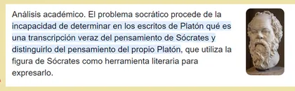
1. En casi todos los diálogos aparece la figura de Sócrates, pero sólo los primeros (los socráticos) reflejan realmente el pensamiento de su maestro. Sin embargo, todos ellos conservan el estilo socrático: la filosofía es una continua búsqueda de la verdad y no un sistema cerrado.
2. El tema central es la virtud* (areté en griego que significa excelencia moral del ser humano): qué es el hombre virtuoso, cuáles son las virtudes (como la justicia, el coraje, la moderación, la piedad, etc.) y cómo se define cada una. El enfoque conceptualista de Sócrates consistía en buscar definiciones universales que pudieran aplicarse a todos los casos particulares.
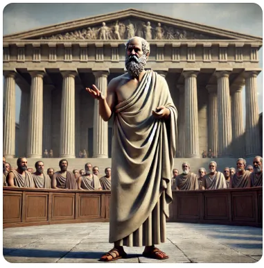
1. Apología de Sócrates (no es un diálogo, sino el discurso de defensa de Sócrates ante el tribunal que le condenaría a muerte),
2. Critón (sobre los deberes ciudadanos - la obediencia* a la ley y la autoridad del Estado-; Sócrates está en la cárcel y se niega a huir),
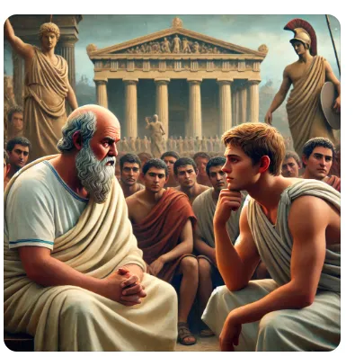
3. Laques (sobre el valor -coraje o valentía "andreia*"),
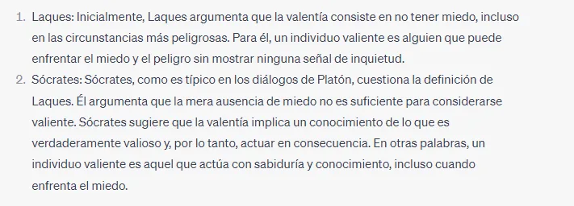
4. Cármides (sobre la templanza o moderación "sophrosyne*".),
5. Lisis (sobre la amistad "philía*"),
6. Eutrifón (sobre la piedad ""eusebeia*"),
7. Ion (sobre la poesía o inspiración poética)
8. y Protágoras (sobre si la virtud se puede enseñar; la virtud es una forma de saber).
3. La mayoría de estos diálogos terminan sin llegar a una conclusión definitiva (diálogos aporéticos). La falta de conclusiones definitivas refleja el enfoque dialéctico de Sócrates, que consideraba el proceso de cuestionamiento y reflexión crítica como un valor en sí mismo, independientemente de si se llegaba o no a una conclusión final. Este enfoque es esencial para el conceptualismo socrático, ya que la búsqueda de la verdad nunca se da por terminada, sino que siempre está abierta a nuevas interpretaciones y cuestionamientos. Esto no significa que Sócrates fuera escéptico y que no creyera en la posibilidad del conocimiento, sino que consideraba que el camino hacia el conocimiento era un proceso continuo de autocuestionamiento y examen crítico. A través de este método, los individuos se acercaban cada vez más a la verdad, aunque no siempre se alcanzara una conclusión definitiva.
4. A medida que Platón maduró, su pensamiento se fue alejando del conceptualismo socrático. En sus diálogos más tardíos, especialmente a partir de la República, Platón comienza a desarrollar su teoría de las Ideas o Formas, que buscaba dar una respuesta más definitiva a los problemas que Sócrates había dejado abiertos. Sin embargo, incluso en esta evolución, el enfoque conceptualista de Sócrates, centrado en la búsqueda de definiciones universales y en el conocimiento basado en la razón, siguió siendo una influencia fundamental en el pensamiento de Platón.
3. La finalidad última de la filosofía de Platón es dar una respuesta a la crisis de la polis. Se trataba de superar el subjetivismo de los sofistas, que conducía …
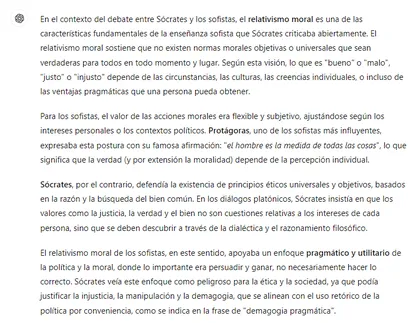
👓 1. al relativismo en moral
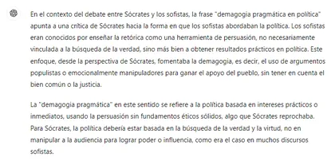
👓 2. y a la demagogia pragmática en política (utilidad -persuasión- versus verdad -diálogo-)
Para esto, Platón busca …
1. una teoría general de la realidad (ontología),
2. fundamentar el conocimiento de la realidad (gnoseología),
3. y hallar una idea de hombre y de polis válidas para todos los ciudadanos que piensen rectamente.
Toda esta teoría no puede ser un conjunto de recetas más o menos acertadas, ni tampoco se trata de añadir otra opinión particular más, junto a las múltiples que los sofistas ofrecían, sino de encontrar algo nuevo.
El descubrimiento del mundo de lo suprasensible, de la necesidad de pensar la realidad a partir de su forma o idea, la introducción de la episteme, su teoría política, su idea de paideia, etc. estarán presentes en la historia de la filosofía y de Occidente.
4. CONTEXTO HISTÓRICO DE LA TEORÍA DE LAS IDEAS. La guerra del Peloponeso trajo consigo una crisis en la polis, incluida la notable corrupción de la nueva clase política.
1. Los sofistas (intelectuales de la época) dieron una respuesta a esta crisis -a esa pérdida de la vinculación que los ciudadanos sentían por la ciudad-, defendiendo....
1. un individualismo de tipo egoísta en el que sujeto y estado se enfrentan,
2. y un relativismo en todo tipo de cuestiones, ya sean legales, filosóficas, morales, culturales, etc.
3. En efecto, según ellos
1. los dioses han muerto;
2. los principios tradicionales de comportamiento civil, esto es, los principios de justicia, valor militar, amor a la verdad, servicio a la polis… están vacíos de sentido (ya no tienen vigencia)
3. en una palabra: no hay verdad, sólo opiniones.
4. lo justo y lo bueno es "ser fuerte y victorioso en la lucha por la vida (ser un winner); es cometer la injusticia y no sufrirla; es dominar y no ser dominado; etc".
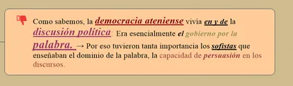
5. y el más fuerte, astuto y hábil en retórica es el que ha de gobernar. En consecuencia, toda la actividad de los sofistas se centraba en preparar a los ciudadanos para triunfar en la vida pública, siguiendo la idea de hombre y polis que ellos tenían.
4. Sin embargo, "no se debe pensar por ello que los sofistas fueron exclusivamente causa de la decadencia de la polis, pues en muchas ocasiones estos pensadores no hicieron más que dar respuesta a problemas que ya estaban planteados".
2. Por lo que al funcionamiento de la democracia se refiere, Sócrates observó consternado que las asambleas y los líderes políticos se dejaban llevar más por las pasiones que por la razón.
1. En efecto, los griegos -y cómo no Sócrates- fueron conscientes del caos al que llevaba la política imperialista ateniense, lo que procuraba a su vez un estado de ánimo general más proclive al miedo y a la toma de decisiones de forma compulsiva y no desde una reflexión calmada. El régimen democrático, con sus logros indudables, terminó siendo considerado por muchos como responsable de la derrota final en la guerra del Peloponeso, así como de los errores y horrores cometidos durante la misma.
👍
Sócrates era un adversario encarnizado de la incompetencia técnica del procedimiento democrático. Según él faltan a las masas la inteligencia, la instrucción y los saberes especializados, indispensables para juzgar la que será la mejor conducta a mantener por Atenas, indispensables incluso para escoger los mejores medios para aplicar sus decisiones mal fundamentadas.
La democracia, lejos de ser el gobierno de todo el pueblo por el pueblo y para el pueblo, es el poder, mal disfrazado, de la clase de los pobres sobre la clase de los ricos en beneficio de los pobres.
En efecto, después de Pericles dirigen los destinos de Atenas políticos de una nueva generación (como Cleón, Alcibíades, Nicias, etc., educados ya durante la democracia en el espíritu de las enseñanzas de los sofistas. Todos ellos recibieron el nombre de demagogos y los críticos han solido echar la culpa de todos los males atenienses a la demagogia*, es decir, al egoísmo irracional de aquéllos, capaz, a su vez, de excitar y promover el egoísmo e irracionalidad de la masa que tomaba decisiones en la asamblea.
Demagogia (del griego δῆμος -dēmos, seguir el poder político): Consiste en apelar a prejuicios, emociones, miedos y esperanzas del público para ganar apoyo popular, frecuentemente mediante el uso de la retórica y la propaganda.
2. Platón es plenamente consciente de la crisis de la polis y la insuficiencia de las respuestas de los sofistas (uso torticero del lenguaje), a los que frecuentemente critica. Toda la obra de Platón se dirige, en ultimidad, a dar una respuesta a la crisis de la polis.
3. Acontecimientos que influyeron mucho en la actividad de Platón
1. La vida política se torna incierta con el gobierno de terror de los 30 tiranos, impuesto por la Esparta vencedora de la guerra. Por otra parte, la restauración de la democracia apenas supuso una mejora política (condena de Sócrates, 399). Él mismo lo cuenta en la Carta VII.
💬 Comentario: Treinta Tiranos Los Treinta Tiranos (en griego οἱ Τριάκοντα, hoi Triakonta) era un gobiern…
Treinta Tiranos
Los Treinta Tiranos (en griego οἱ Τριάκοντα, hoi Triakonta) era un gobierno oligárquico compuesto de treinta magistrados llamados tiranos, que sucedió a la democracia ateniense al final de la Guerra del Peloponeso −en las postrimerías de la Guerra de Decelia−, durante menos de un año, en 404 a. C.
Tras la rendición de Atenas en la Guerra del Peloponeso, regresaron a la ciudad, en virtud de las condiciones de paz, los exiliados antidemocráticos. Estos conspiradores, aglutinados en torno a Critias, que se llamaban a sí mismo camaradas (ἑταῖροι hetairoi), promovían públicamente la necesidad de un cambio drástico en la constitución, aunque se disimulaba como un regreso a la constitución heredada de los padres (patrios politeia). Se apoyaban en el hecho de que Lisandro estaba reemplazando los regímenes democráticos de los estados vencidos por regímenes oligárquicos proespartanos apoyados en guarniciones espartanas.
Como los prooligárquicos no pudieron, por sí mismos, acabar con el arraigado sentimiento democrático del pueblo, Lisandro, a su regreso de la campaña de Samos, acudió con sus tropas a la Asamblea popular de Atenas. En ella Dracóntides propuso nombrar un comité de treinta miembros encargados de revisar las leyes y de redactar una «constitución semejante a la de los padres» y, mientras tanto, se encargarían del gobierno provisional. A pesar de las protestas, la propuesta salió adelante con el apoyo de Terámenes y la amenaza de Lisandro.
Los Treinta fueron elegidos a continuación de la destruccción de los Muros Largos de Atenas y de los del Pireo. En Jenofonte aparece la lista completa: Polícares, Critias, Melobio, Hipóloco, Euclides, Hierón, Mnesíloco, Cremón, Terámenes, Aresias, Diocles, Fedrias, Queréleo, Anecio, Pisón, Sófocles, Eratóstenes, Caricles, Onomacles, Teognis, Esquines, Teógenes, Cleómedes, Erasístrato, Fidón, Dracóntides, Eumates, Aristóteles, Hipómaco y Mnesitides.1
Su ideología abarcaba desde el extremismo oligárquico de Critias o Caricles hasta elementos más moderados como Terámenes. No obstante, la actuación general estuvo guiada por los intereses y ambiciones personales.
Los Treinta organizaron un gobierno desde el que ejercían el poder sin límites. El Consejo de los Quinientos fue constituido por personas adictas al régimen. Para el gobierno de El Pireo se designó un consejo de diez personas bajo la dirección de Cármides, pariente de Critias. Otro órgano de once personas (denominados «los Once») se encargó de las prisiones y de las ejecuciones.
Para cubrir las apariencias constitucionales, los treinta abolieron la ley de Efialtes mediante la cual se despojaba al Areópago de su poder, se anularon los tribunales populares en favor de la Boulé. Pero sobre todos estaba el poder de los Treinta, los cuales solicitaron de Esparta el envío de una guarnición, que al mando de Cálibo, se instaló en la Acrópolis.
Ante la presión del moderado Terámenes, el cual reclamaba una constitución que otorgase derechos a una masa ciudadana amplia o al menos a todos los propietarios que pudiesen sufragarse las armas por su cuenta, el resto de los Treinta sólo propusieron una lista de tres mil y se las arrebataron a los demás. Se promulgó una ley por la que cualquiera de los Treinta podía condenar a muerte y confiscar los bienes, sin otra forma de proceso, a cualquier ciudadano que no estuviese inscrito en la lista de los tres mil, y sólo a éstos se les garantizaba un juicio ante la Boulé. La persecución subsiguiente fue más de carácter económico que político. Muchos ciudadanos y metecos fueron procesados y perdieron sus propiedades. Debido a la oposición de Terámenes, éste fue llevado a juicio ante la Boulé, donde se defendió con éxito de todos los cargos. Entonces Critias, con el apoyo de la guarnición espartana, borró a Terámenes de la lista de los tres mil y fue condenado a muerte.
Muchos ciudadanos se sintieron amenazados y emprendieron la huida, pero los espartanos obligaron a muchas ciudades a entregarlos a los Treinta. Algunas ciudades, como Tebas y Megara, se negaron a entregar a los exiliados, más por el temor a una Atenas proespartana que por amistad. En Tebas se constituyó un grupo de setenta al mando de Trasíbulo, que se apoderó por sorpresa de la localidad de File, al norte del Ática. Los Treinta enviaron a la caballería y a los Tres mil, los cuales fracasaron en el intento de tomar la localidad o cercarla con un muro. Los Treinta comenzaron a trazar planes para una eventual retirada de la ciudad hacia Eleusis y Salamina. Entretanto, Trasíbulo, que había visto incrementarse el número de partidarios, entró en El Pireo, atrincherándose en Muniquia. Los Treinta acudieron con la guarnición espartana, la caballería y las fuerzas de la ciudad sufriendo un gran descalabro en el cual incluso moriría el propio Critias.
En este estado de desconcierto, unos eran partidarios de la reconciliación con los de El Pireo, otros eran partidarios de proseguir la lucha, y otros, la mayoría, daba por terminado el régimen de terror de los Treinta, que buscaron refugio en Eleusis. Los demócratas de El Pireo recibieron el apoyo de Tebas y de particulares. Por su parte los oligarcas de la ciudad pidieron ayuda a Lisandro, que les envió 100 talentos para contratar mercenarios, mientras que él mismo se encaminó a Atenas para cercar El Pireo por tierra y su hermano Libis por mar.
Pero en 403 a. C., los éforos y el rey espartano Pausanias se acercaron a Atenas para trabajar en pro de la reconciliación de los oligarcas moderados de la ciudad y de los demócratas de El Pireo.2 Se acordó que Eleusis quedara como ciudad separada de Atenas en manos de los oligarcas y que a ella podrían trasladarse todos los que lo deseasen. Por otra parte, Atenas y El Pireo constituirían una única comunidad. Se decretó una amnistía general mediante la cual se devolvieron los bienes confiscados, quedando excluidos los supervivientes de los Treinta, de los Diez que administraban el Pireo, y de los Once encargados de las prisiones. Más adelante, en 401 a. C., el pueblo se inclinó por la reincorporación de Eleusis a la ciudad de Atenas, si bien con una amnistía que impidió cualquier represalia.
👓 “Al ver esto y al ver a los hombres que llevaban la política, cuanto más consideraba yo las leyes y las costumbres, y más iba avanzando en edad, tanto más difícil me fue pareciendo administrar bien los asuntos del Estado. […] La legislación y la moralidad estaban corrompidas hasta tal punto que yo, lleno de ardor al principio para trabajar por el bien público, considerando esta situación y de qué manera iba todo a la deriva, acabé por quedar aturdido. […] Finalmente, llegué a comprender que todos los Estados actuales están mal gobernados, pues su legislación es prácticamente incurable sin unir unos preparativos enérgicos a unas circunstancias felices. Entonces me sentí irresistiblemente movido a alabar la verdadera filosofía, y a proclamar que solo con su luz se puede reconocer dónde está la justicia en la vida pública y en la vida privada. Así pues, no acabarán los males para el hombre hasta que llegue la raza de los puros y auténticos filósofos al poder, o hasta que los jefes de las ciudades, por una especial gracia de la divinidad no se pongan verdaderamente a filosofar”.
👓 ¡
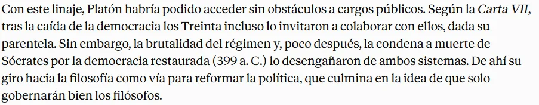
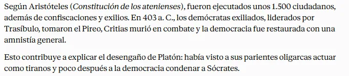
2. Mirando los acontecimiento políticos y atendiendo a las enseñanzas socráticas, Platón concibió sus dos grandes proyectos:
1. fundar la Academia (387) para la formación de los futuros gobernantes-filósofos
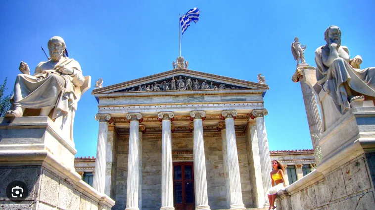
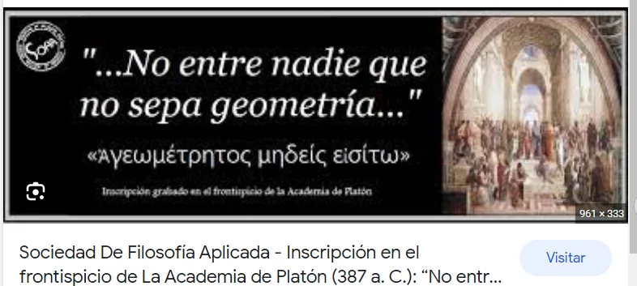
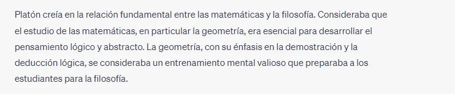
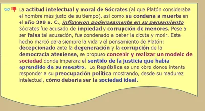
2. y convertir a los ya gobernantes en filósofos (viajes a Sicilia*, a la corte de Siracusa).
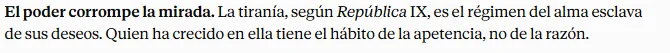
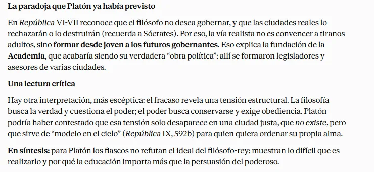
En definitiva, pensaba que el hombre que ha contemplado el bien no puede cometer injusticia*. La influencia de Sócrates aquí es enorme.
1. 1. Tanto en la forma de escribir filosofía -el diálogo es concebido como la mejor forma de filosofar-,
2. 2. como por el intelectualismo ético: el hombre que conoce el bien siempre obra rectamente; nadie hace el mal a sabiendas.
1. De ahí que la paideia, la educación, sea la solución para la liberación del vicio y la adquisición de la virtud.
2. La paideia y la virtud han de responder a la realidad de lo que es el hombre y la polis, de ahí la necesidad de superar la opinión a través de la definición (EPISTEME*): saber qué son las cosas y obrar en consecuencia.
3. La muerte de Sócrates.
Este apartado también puedo ponerlo para justificar por qué Platon tenía una vocación política.
1. A la muerte de su maestro parece aludir claramente Platón, en el “mito de la caverna” cuando expone la situación en la que se encontraría quien, una vez liberado de su prisión y sus cadenas (su ignorancia y sus pasiones), pretendiese regresar a la cueva-prisión para animar a sus antiguos compañeros a abandonarla. Estos, sumamente molestos por todas las privaciones y penalidades* se encararían con su libertador y acabarían dándole muerte.
Y si tuviese que competir de nuevo con los que habían permanecido constantemente encadenados, opinando acerca de las sombras aquellas que, por no habérsele asentado todavía los ojos, ve con dificultad -y no sería muy corto el tiempo que necesitara para acostumbrarse-, ¿no daría que reír y no se diría de él que, por haber subido arriba, ha vuelto con los ojos estropeados, y que no vale la pena ni aun de intentar una semejante ascensión? ¿Y no matarían, si encontraban manera de echarle mano y matarle, a quien intentara desatarles y hacerles subir?
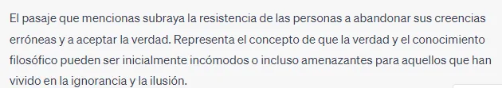
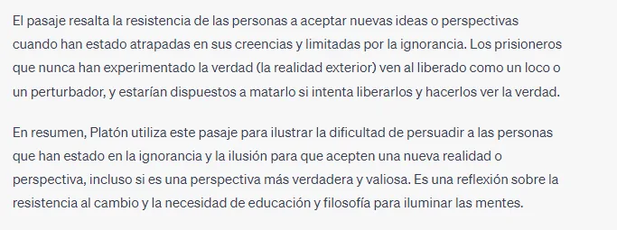
2. En efecto, la muerte de Sócrates influyó de modo decisivo, casi traumático, en la vida y en la obra de Platón. Sócrates, todo un dechado (modelo) de virtudes, prototipo de persona justa y virtuosa, fue condenado a muerte y dicha pena se cumplió; Pero esta condena:
1. no fue fruto del capricho de un tirano,
2. ni de la conspiración de una oligarquía enemiga
3. sino que el filósofo fue sometido a un juicio, tras ser acusado por dos ciudadanos, en el que la culpabilidad y la sentencia fueron decididas por un jurado compuesto por 500 conciudadanos suyos, elegidos de forma aleatoria.
1. El propio Platón, presente en dicho juicio, pudo comprobar que se cumplieron todos los requisitos legales de acuerdo con las normas de Atenas, esto es, en consonancia con las leyes que tanto él mismo como el propio Sócrates habían considerado justas. Y sin embargo, a sus ojos esta condena era injusta, tremendamente injusta.
2. ¿Cómo podían acontecer tales sentencias? Algo tenía que fallar en la constitución, en los gobernantes o en la educación que debía formar a los ciudadanos.
3. Platón, tanto por su ascendencia familiar como por su propia vocación, estaba destinado a participar en las magistraturas públicas y en el gobierno de Atenas, pero la muerte de Sócrates le hizo cambiar el rumbo de su vida y, alejándose de toda actividad pública, se retiró a filosofar.
1. No pretendía abandonar definitivamente la política, sino sólo provisionalmente, mientras meditaba, ponía en claro sus ideas, y averiguaba …
1. qué era el bien y qué el mal,
2. qué era la virtud,
3. cómo debe ser la justicia,
4. qué organización debe adoptar la ciudad,
5. quiénes deben dirigir los asuntos públicos, etc.
2. En este sentido, la obra de Platón puede ser considerada como una profunda meditación sobre cuestiones políticas; dos de sus obras más notables llevan por título República y Leyes, y numerosos nombres de políticos y de personajes públicos aparecen en sus textos, de tal modo que podemos afirmar que las consideraciones ontológicas y epistemológicas, en último término, parecen orientadas a fundamentar las concepciones políticas, los ideales políticos, es decir, el hallazgo de una forma ideal de gobierno.
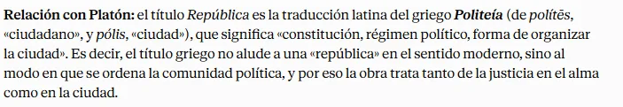
4. 👎 Conclusión: Reflexión sobre la Carta VII de Platón
1. No hay mejor forma de afrontar el estudio del pensamiento platónico que leyendo la Carta VII. Escrita a los setenta y cinco años, tras una fecunda producción filosófica, la carta tiene un marcado carácter autobiográfico que nos da las claves de su pensamiento, fuertemente orientado hacia lo político.
2. Y es que su proyecto filosófico es fruto de una decepción: la crisis política que envolvió a la Atenas de finales del siglo V a.C. No sólo estaba detrás la condena a muerte de Sócrates, sino también su absoluto convencimiento de que reformar el Estado era una obligación de todo filósofo.
3. Y no se contentó con la mera teoría: los tres viajes que Platón realizó a Sicilia respondían a la esperanza de adecuar el compromiso teórico con la práctica. Sin embargo, fracasó. Pero, a pesar de todo, nunca renunciaría a su convencimiento de que el filósofo debe sacrificar antes su propia tranquilidad que la oportunidad de actuar en política para dirigir a los otros, de la misma manera que el prisionero liberado de la caverna ha de volver a las tinieblas para enseñar a sus compañeros el camino de la verdad. No puede haber felicidad en un marco político injusto.
4. Y ¿qué Estado actúa con justicia? Lo que Platón tiene muy claro es que no puede haber reforma política alguna que no cuente con una buena educación de los ciudadanos. ¿Utopía, realidad o deseo?
5. 🔴 👎 Vocación política Texto Carta VII
💬 Comentario: Siendo yo joven, pasé por la misma experiencia que otros muchos; pensé dedicarme a la polí…
Siendo yo joven, pasé por la misma experiencia que otros muchos; pensé dedicarme a la política tan pronto como llegara a ser dueño de mis actos; y he aquí las vicisitudes de los asuntos públicos de mi patria a que hube de asistir. Siendo objeto de general censura el régimen político a la sazón imperante, se produjo una revolución; al frente de este movimiento revolucionario se instauraron como caudillos cincuenta y un hombres: diez en el Pireo y once en la capital, al cargo de los cuales estaba la administración pública en lo referente al ágora y a los asuntos municipales, mientras que treinta se instauraron con plenos poderes al frente del gobierno en general. Se daba la circunstancia de que algunos de estos eran allegados y conocidos míos, y en consecuencia requirieron al punto mi colaboración, por entender que se trataba de actividades que me interesaban. La reacción mía no es de extrañar, dada mi juventud; yo pensé que ellos iban a gobernar la ciudad sacándola de un régimen de vida injusto y llevándola a un orden mejor, de suerte que les dediqué mi más apasionada atención, a ver lo que conseguían. Y vi que en poco tiempo hicieron parecer bueno como una edad de oro el anterior régimen. Entre otras tropelías que cometieron, estuvo la de enviar a mi amigo, el anciano Sócrates, de quien yo no tendría reparo en afirmar que fue el más justo de los hombres de su tiempo, a que, en unión de otras personas, prendiera a un ciudadano para conducirle por la fuerza a ser ejecutado; orden dada con el fin de que Sócrates quedara, de grado o por fuerza, complicado en sus crímenes; por cierto que él no obedeció, y se arriesgó a sufrir toda clase de castigos antes que hacerse cómplice de sus iniquidades. Viendo, digo, todas estas cosas y otras semejantes de la mayor gravedad, lleno de indignación me inhibí de las torpezas de aquel período. No mucho tiempo después cayó la tiranía de los Treinta y todo el sistema político imperante. De nuevo, aunque ya menos impetuosamente, me arrastró el deseo de ocuparme de los asuntos públicos de la ciudad.
💬 Comentario: Ocurrían desde luego también bajo aquel gobierno, por tratarse de un período turbulento, m…
Ocurrían desde luego también bajo aquel gobierno, por tratarse de un período turbulento, muchas cosas que podrían ser objeto de desaprobación; y nada tiene de extraño que, en medio de una revolución, ciertas gentes tomaran venganzas excesivas de algunos adversarios. No obstante, los entonces repatriados observaron una considerable moderación. Pero dio también la casualidad de que algunos de los que estaban en el poder llevaron a los tribunales a mi amigo Sócrates, a quien acabo de referirme, bajo la acusación más inicua y que menos le cuadraba: en efecto, unos acusaron de impiedad y otros condenaron y ejecutaron al hombre que un día no consintió en ser cómplice del ilícito arresto de un partidario de los entonces proscritos, en ocasión en que ellos padecían las adversidades del destierro. Al observar yo cosas como éstas y a los hombres que ejercían los poderes públicos, así como las leyes y las costumbres, cuanto con mayor atención lo examinaba, al mismo tiempo que mi edad iba adquiriendo madurez, tanto más difícil consideraba administrar los asuntos públicos con rectitud; no me parecía, en efecto, que fuera posible hacerlo sin contar con amigos y colaboradores dignos de confianza; encontrar quiénes lo fueran no era fácil, pues ya la ciudad no se regía por las costumbres y prácticas de nuestros antepasados, y adquirir otros nuevos con alguna facilidad era imposible; por otra parte, tanto la letra como el espíritu de las leyes se iba corrompiendo y el número de ellas crecía con extraordinaria rapidez. De esta suerte yo, que al principio estaba lleno de entusiasmo por dedicarme a la política, al volver mi atención a la vida pública y verla arrastrada en todas direcciones por toda clase de corrientes, terminé por verme atacado de vértigo, y si bien no prescindí de reflexionar sobre la manera de poder introducir una mejora en ella, y en consecuencia en la totalidad del sistema político, sí dejé, sin embargo, de esperar sucesivas oportunidades de intervenir activamente; y terminé por adquirir el convencimiento con respecto a todos los Estados actuales de que están, sin excepción, mal gobernados; en efecto, lo referente a su legislación no tiene remedio sin una extraordinaria reforma, acompañada además de suerte para implantarla. Y me vi obligado a reconocer, en alabanza de la verdadera filosofía, que de ella depende el obtener una visión perfecta y total de lo que es justo, tanto en el terreno político como en el privado, y que no cesará en sus males el género humano hasta que los que son recta y verdaderamente filósofos ocupen los cargos públicos, o bien los que ejercen el poder en los Estados lleguen, por especial favor divino, a ser filósofos en el auténtico sentido de la palabra. Platón, Carta VII, 324b-326b
Siendo yo joven, pasé por la misma experiencia que otros muchos; pensé dedicarme a la política tan pronto como llegara a ser dueño de mis actos; y he aquí las vicisitudes de los asuntos públicos de mi patria a que hube de asistir. Siendo objeto de general censura el régimen político a la sazón imperante, se produjo una revolución; al frente de este movimiento revolucionario se instauraron como caudillos cincuenta y un hombres: diez en el Pireo y once en la capital, al cargo de los cuales estaba la administración pública en lo referente al ágora y a los asuntos municipales, mientras que treinta se instauraron con plenos poderes al frente del gobierno en general. Se daba la circunstancia de que algunos de estos eran allegados y conocidos míos, y en consecuencia requirieron al punto mi colaboración, por entender que se trataba de actividades que me interesaban. La reacción mía no es de extrañar, dada mi juventud; yo pensé que ellos iban a gobernar la ciudad sacándola de un régimen de vida injusto y llevándola a un orden mejor, de suerte que les dediqué mi más apasionada atención, a ver lo que conseguían. Y vi que en poco tiempo hicieron parecer bueno como una edad de oro el anterior régimen. Entre otras tropelías que cometieron, estuvo la de enviar a mi amigo, el anciano Sócrates, de quien yo no tendría reparo en afirmar que fue el más justo de los hombres de su tiempo, a que, en unión de otras personas, prendiera a un ciudadano para conducirle por la fuerza a ser ejecutado; orden dada con el fin de que Sócrates quedara, de grado o por fuerza, complicado en sus crímenes; por cierto que él no obedeció, y se arriesgó a sufrir toda clase de castigos antes que hacerse cómplice de sus iniquidades. Viendo, digo, todas estas cosas y otras semejantes de la mayor gravedad, lleno de indignación me inhibí de las torpezas de aquel período. No mucho tiempo después cayó la tiranía de los Treinta y todo el sistema político imperante. De nuevo, aunque ya menos impetuosamente, me arrastró el deseo de ocuparme de los asuntos públicos de la ciudad.
🔗 Treinta Tiranos - Wikipedia, la enciclopedia libre🔗 El legado de Grecia. Historia de Grecia
👓 Ocurrían desde luego también bajo aquel gobierno, por tratarse de un período turbulento, muchas cosas que podrían ser objeto de desaprobación; y nada tiene de extraño que, en medio de una revolución, ciertas gentes tomaran venganzas excesivas de algunos adversarios. No obstante, los entonces repatriados observaron una considerable moderación. Pero dio también la casualidad de que algunos de los que estaban en el poder llevaron a los tribunales a mi amigo Sócrates, a quien acabo de referirme, bajo la acusación más inicua y que menos le cuadraba: en efecto, unos acusaron de impiedad y otros condenaron y ejecutaron al hombre que un día no consintió en ser cómplice del ilícito arresto de un partidario de los entonces proscritos, en ocasión en que ellos padecían las adversidades del destierro. Al observar yo cosas como éstas y a los hombres que ejercían los poderes públicos, así como las leyes y las costumbres, cuanto con mayor atención lo examinaba, al mismo tiempo que mi edad iba adquiriendo madurez, tanto más difícil consideraba administrar los asuntos públicos con rectitud; no me parecía, en efecto, que fuera posible hacerlo sin contar con amigos y colaboradores dignos de confianza; encontrar quiénes lo fueran no era fácil, pues ya la ciudad no se regía por las costumbres y prácticas de nuestros antepasados, y adquirir otros nuevos con alguna facilidad era imposible; por otra parte, tanto la letra como el espíritu de las leyes se iba corrompiendo y el número de ellas crecía con extraordinaria rapidez. De esta suerte yo, que al principio estaba lleno de entusiasmo por dedicarme a la política, al volver mi atención a la vida pública y verla arrastrada en todas direcciones por toda clase de corrientes, terminé por verme atacado de vértigo, y si bien no prescindí de reflexionar sobre la manera de poder introducir una mejora en ella, y en consecuencia en la totalidad del sistema político, sí dejé, sin embargo, de esperar sucesivas oportunidades de intervenir activamente; y terminé por adquirir el convencimiento con respecto a todos los Estados actuales de que están, sin excepción, mal gobernados; en efecto, lo referente a su legislación no tiene remedio sin una extraordinaria reforma, acompañada además de suerte para implantarla. Y me vi obligado a reconocer, en alabanza de la verdadera filosofía, que de ella depende el obtener una visión perfecta y total de lo que es justo, tanto en el terreno político como en el privado, y que no cesará en sus males el género humano hasta que los que son recta y verdaderamente filósofos ocupen los cargos públicos, o bien los que ejercen el poder en los Estados lleguen, por especial favor divino, a ser filósofos en el auténtico sentido de la palabra. Platón, Carta VII, 324b-326b
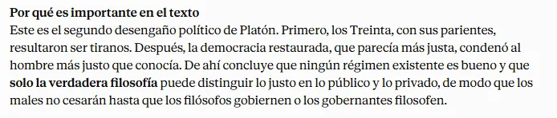
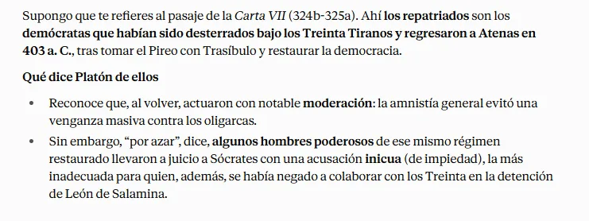
👎 La vida y la obra de Platón están, por ello, impregnadas de vocación política, si bien esto no es una excepción en la Atenas democrática de los siglos V y IV a. de C., pues se tiene el convencimiento de que el destino de los individuos es inseparable del destino de la ciudad (polis). Esta vocación política de Platón se orienta, sobre todo, a la reflexión filosófica, aunque intentó llevar a la práctica sus pensamientos políticos emprendiendo, por este motivo, hasta tres viajes a Siracusa (actual Sicilia), donde se propuso atraer a su proyecto de reforma al tirano Dionisio I en el primer viaje, y al hijo de éste, Dionisio II, en los siguientes viajes. Pese a todo, estos proyectos fracasaron.
5. La novedad de Platón: la segunda navegación
1. La novedad genial de Platón, por la que siempre volvemos y volveremos a él, fue el descubrimiento de la realidad suprasensible, o sea, de una dimensión trans-física de la realidad, que la filosofía anterior -los presocráticos y los sofistas- ni siquiera había sospechado.
Se trata, en una palabra, de la dimensión inteligible de la realidad, que pertenece al mundo de lo puramente racional, del pensamiento. El acceso a esa dimensión nos da el verdadero conocimiento de lo que son las cosas.
2. Un ejemplo del mismo Platón puede aclarar de lo que hablamos.
1. Según narra Platón en el Fedón, mientras Sócrates esperaba su muerte, hizo un balance de lo que había sido su vida filosófica. Empieza describiendo su primera navegación (la que se hacía con viento favorable): “Yo, Cebes, cuando era joven -comenzó Sócrates- deseé extraordinariamente ese saber que llaman investigación de la naturaleza. Parecíame espléndido, en efecto, conocer las causas de cada cosa…” (Fedón, 96 a). A continuación, describe el intento de los presocráticos -y del primer Sócrates- de dar razón de la realidad, de los sucesos, a partir de causas puramente sensibles; por ejemplo, “enumerando las causas de cada uno de los actos que realizo: estoy aquí sentado porque mi cuerpo se compone de huesos y tendones; que los huesos son duros y tienen articulaciones […]; e igualmente, con respecto a mi conversación con vosotros, os expusiera otras causas análogas imputándolo a la voz, al aire, al oído y a otras mil cosas de esta índole” (Fedón, 98 c-d).
2. Consciente de la evidente insuficiencia de una explicación de esa índole, por mucho que se la amplíe o por muy refinada que se haga, Sócrates expone un nuevo orden de explicación: “las verdaderas causas; a saber: que puesto que a los atenienses les ha parecido lo mejor el condenarme, por esta razón a mí también me ha parecido lo mejor el estar aquí sentado…” (Fedón, 98 e). Con esas líneas, Platón introduce lo que él llama la segunda navegación, la que se hace sin viento, a fuerza de remos.
1. Se trata de la búsqueda, a través del pensamiento, de lo que las cosas son realmente, de sus verdaderas causas. Y las cosas realmente…
1. 1. no pueden ser sólo sus dimensiones, aspectos, causas… físicas,
2. 2. sino que son algo más: tienen algo puramente inteligible, que, cuando lo entendemos, comprendemos realmente qué son las cosas.
2. Por eso, pretender explicar la conducta humana (ética o política) mediante descripciones empíricas (masas, energía, conexiones neuronales, etc.), olvidándose de las verdaderas causas (el conocimiento, la libertad, la finalidad, la búsqueda de objetivos…) es, y será siempre, una empresa fallida que traiciona lo que realmente son las cosas.
3. Igualmente, pretender explicar por qué una acción es valerosa o un contrato es justo, apelando a la mera realidad física del soldado o a las propiedades del papel y la tinta, es simplemente imposible: es absolutamente necesario saber qué es la valentía o qué es la justicia para poder entender qué es una acción valerosa o un contrato justo.
4. Esta es la idea central de todo el pensamiento platónico: la existencia de un aspecto o dimensión que no es sensible, aunque se manifieste en lo sensible; es lo suprasensible, o sea, lo inteligible.
Por eso, siguiendo el método socrático, Platón busca la esencia de las cosas, su qué, su definición intemporal, más allá de las meras descripciones cambiantes y de la multiplicidad de opiniones.
3. Ahora bien, es importante notar que Platón llevó demasiado lejos su tesis.
1. No sólo admite que hay una dimensión, aspecto, momento, suprasensible-inteligible en la realidad sensible (la libertad en la acción humana, la justicia en el contrato),
2. sino que existe un mundo de ideas, como auténticas realidades ....
1. separadas de lo sensible
2. e independientes de los sujetos humanos.
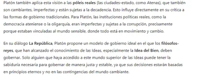
3. ¿Por qué dio Platón ese paso? Porque consideró que este mundo, el de las cosas sensibles, el de las póleis reales, es cambiante, caduco, y no puede tener una esencia permanente.
1. Tiene, pues, que haber otro mundo, un mundo de ideas, de realidades en sí, permanentes e inmutables, cuyo conocimiento será verdadero conocimiento. Es el kósmos noetós, el mundo de las ideas, objeto de la verdadera episteme.
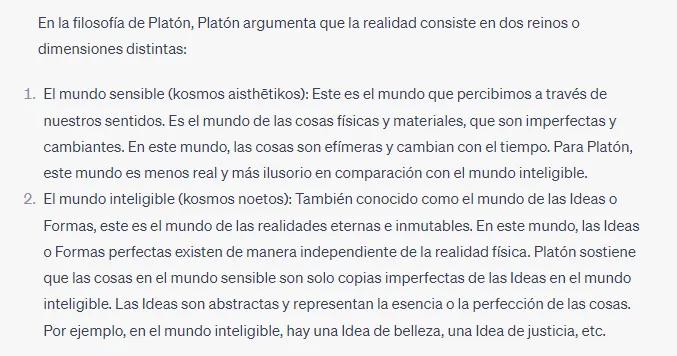
2. Platón introdujo así el mundo de las ideas (=lo en sí) como una realidad existente, que sirve de fundamento ontológico inmutable a las realidades cambiantes de este mundo sensible.
1. Cada cosa sensible participa de lo inteligible para ser lo que es.
2. El conocimiento de lo en sí (episteme) o ascenso a las ideas es la teoría platónica del conocimiento.
3. 👎 Planteamiento ontológico
Respecto a la Ontología el planteamiento platónico es el siguiente: las cosas cambian, se desprenden de sus propiedades, toman otras nuevas y finalmente desaparecen. Las cosas no tienen un "eidos" (aspecto, concepto) fijo.
Si el "eidos" (concepto) de una cosa no muere cuando ésta se destruye, → eso quiere decir que el "eidos", el concepto no está en la cosa sino separado de ella. De ahí concluye Platón lo siguiente- lo que hemos llamado "'eidos”, concibiéndolo como lo que es común a varias cosas particulares es en realidad "Idea", es decir,...
1. una realidad separada, independiente y anterior a las cosas sensibles;
2. una realidad fija e inmutable,
3. subsistente en un mundo inteligible,
4. Una realidad por cuya imitación fueron hechas las cosas sensibles.
6. La teoría platónica de las ideas según Aristóteles
1. Para concluir esta presentación del genial descubrimiento de Platón -y de su extrapolación-, podemos leer la síntesis que Aristóteles (“el discípulo genuino de Platón”) realizó de este tema en su Metafísica:
1. “Platón, en general, está de acuerdo con las teorías de los pitagóricos, aunque también tiene cosas propias. En efecto, desde su juventud se había familiarizado con Cratilo y con la opinión de Heráclito de que todas las cosas sensibles están en flujo permanente, por lo que no hay ciencia (epistéme) posible de estos objetos, y él mismo sostuvo esta doctrina más tarde.
2. »Por otra parte, fue discípulo de Sócrates, quien -desentendiéndose de la Naturaleza en su conjunto- se consagró exclusivamente a los problemas morales, proponiéndose lo universal como objeto de sus indagaciones y siendo el primero que aplicó el pensamiento a dar definiciones.
1. Por ello, Platón, heredero de esta doctrina y habituado a la indagación de lo universal, pensó que las definiciones no podían referirse a los seres sensibles -ya que no es posible dar una definición común de objetos que cambian continuamente-, sino a otro tipo de seres.
2. A estos seres los llamó Ideas (idéas) y añadió que las cosas sensibles existen separadas de las ideas, pero que de ellas reciben su nombre, ya que todas las cosas, en virtud de su participación en las ideas, reciben el mismo nombre que éstas. En cuanto a la participación, Platón no hizo sino cambiar el nombre, ya que los pitagóricos afirman que los entes son por imitación (mímesis) de los números, y Platón, que son por participación (méthexis), pero ni aquéllos ni éste se preocuparon de indagar qué era la participación o la imitación de las Ideas” (Aristóteles, Metafísica, I, 6, 987 a 30-b 15).
2. En suma, prescindiendo de que Platón haya hipostasiado* las ideas, el descubrimiento de lo suprasensible-inteligible puede considerarse uno de los grandes logros de la filosofía occidental, que permanece hasta nuestros días.
Hipostasiar: Considerar algo como substrato real o verdadero distinguiéndolo de lo accidental.
De hecho, la crítica de Nietzsche a toda la filosofía occidental se centraría en la negación de la tesis platónica de que hay algo suprasensible.
7. La teoría las ideas en el pensamiento de Platón. La teoría de las ideas sufrió una lenta génesis en el pensamiento de Platón.
1. En sus diálogos iniciales (socráticos y de transición)...
1. Su búsqueda se centró en la definición de las realidades éticas. Por ejemplo, qué es la valentía.
1. Un sofista respondería que no es posible saber qué es la valentía, pues hay tantas opiniones como hombres, además de que hay muchos actos totalmente distintos que, por mera convención, llamamos valerosos.
2. La respuesta platónica es que tiene que haber algo en todos los actos valerosos, por lo que, aun siendo totalmente distintos, son todos ellos valerosos. Ese algo, presente en todo acto de valor, es la idea (idéa) de valor, que hace que el acto sea valeroso y reconocible como tal.
➡️ Por tanto, el hombre ya no es el métron (la medida) de todas las cosas, sino que la medida (la idea) es algo independiente del sujeto que mide.
2. 👎 El antecedente filosófico de las Ideas platónicas son, de hecho, las definiciones universales que Sócrates buscaba con su método mayeútico, frente a las opiniones relativistas y escépticas de los sofistas.
El periodo socrático de producción platónica culmina en el Protágoras. Protágoras, en el diálogo de su nombre dice que hay cosas buenas y nocivas, según para quién y cómo, → es decir que bienes y males son relativos.
≠ Pero Sócrates rechaza ese planteamiento. En efecto, él busca un concepto general y una definición universal de "lo bueno", "lo bello", "lo justo" etc,
Las cosas bellas, dirá Platón, lo son por la presencia en ellas de lo Bello, que las hace ser bellas. → Del plano lógico del razonamiento inductivo socrático, Platón pasará al ontológico
Y si hay algo que justifica que las cosas sean buenas o bellas habrá que afirmar que eso, lo Bello y lo Bueno, existe por sí mismo. Ese concepto general que busca Sócrates él lo llamará eidos o idea.
Platón edificará su Teoría de las Ideas, prosiguiendo el camino socrático hacia valores absolutos, desde una ética que intenta trascender los condicionamientos históricos.
Por eso está claro que aquí el enemigo es el relativismo sofístico que Sócrates combate encarnizadamente.
Hay unos criterios absolutos de valor y mediante la dialéctica se podrá llegar a ellos.
2. En los diálogos de madurez
Platón elabora su teoría de las ideas como realidades separadas, aunque nunca la expone de modo sistemático, sino como algo conocido por sus oyentes.
3. Por último, en los diálogos de vejez.
Platón realiza una autocrítica a sus ideas, consciente de que ha descubierto algo nuevo, pero que no ha sido capaz de darle una formulación suficientemente adecuada. Esa será tarea de su discípulo genuino, Aristóteles.
4. En este tema, vamos a tratar los aspectos ontológicos y gnoseológicos, tal como aparecen en los diálogos de madurez, y la crítica que el propio Platón realiza en los de vejez. Dejamos para el tema siguiente los aspectos antropológicos, ético- políticos y educativos.
8. Las ideas como realidades en sí: la ontología platónica
1. En los diálogos de madurez, Platón reformula su teoría de las ideas.
1. Señala que las ideas son formas o esencias (eîdos): aquello por lo que la cosa es lo que es.
2. Y añade que esas ideas existen separadas de las cosas sensibles,
1. ya no son un momento o aspecto presente en las cosas,
2. sino una realidad en sí, existente al margen de las cosas materiales y de los seres humanos.
1. Son, por tanto, realidades eternas e inmutables, inteligibles, no sensibles.
2. Existen con independencia de las cosas materiales: aunque todo desapareciese -cosas y hombres-, seguiría habiendo ideas.
3. Si no fuese así, no podría haber un conocimiento estable, pues todo lo material está sometido al cambio, pero sabemos que hay tal conocimiento; por ejemplo, la geometría. Por tanto, es necesario que haya un kósmos noetós.
3. 👎 Definitivamente en los diálogos de madurez (Fedón, Banquete, República y Fedro) Platón da un giro respecto a su maestro Sócrates.
Toma como punto de partida lo que ordinariamente llama el concepto socrático como era "el valor", "la justicia", "la belleza" pero que ahora él por su cuenta llama Idea.
Esas Ideas (valor, justicia, belleza...) tienen una realidad separada, no pertenecen a este mundo, sino a lo que a partir de ahora llamará mundo inteligible, un mundo de esencias eternas para diferenciarlo de este nuestro, el mundo sensible, el mundo del movimiento y el cambio.
Si existen el Valor, la Belleza, la Justicia, el Bien... como algo objetivo y absoluto (las ideas tienen una existencia eterna e inmutable) entonces no cabe señalar, por ejemplo, que hay un bien para cada uno de nosotros como afirmaban los sofistas.
Las Ideas…
1. no son simplemente conceptos,
2. son Realidades que existen con independencia de las cosas. Más aún: son la misma Realidad,
1. cada idea es única, eterna, inmutable e inalterable;
2. y sólo es captable por la inteligencia. Se trata de una Realidad inteligible, no sensible, no captada por los sentidos.
Por ejemplo, una cosa es bella, gracias a la Idea de Belleza. Así, Platón duplica el Mundo:
1. el mundo inteligible y real de las ideas (universal)
2. el mundo sensible, de las cosas (particular, devenir).
2. Si consideramos esta doctrina platónica desde un punto de vista ontológico, es decir, preguntándonos qué son en la realidad tales ideas, podemos resumir las tesis de Platón en 4 puntos:
1. Las ideas son realidades en sí, al margen del conocimiento humano, las ideas son esencias, arquetipos eternos, aquello por lo que las cosas son lo que son.
Las cosas buenas son buenas porque participan de la Bondad en sí, de la idea de Bien. En consecuencia, las ideas …
1. ya no son definiciones o características de las cosas éticas,
2. sino realidades en sí, más reales que las de este mundo sensible. Constituyen un nuevo mundo: el mundo inteligible, el kósmos noetós.
2. Esto implica que la realidad total se constituye en dos mundos: el sensible y el inteligible, el inferior y el superior; y ambos mundos están separados. Esta concepción está magistralmente descrita en el mito de la caverna.
1. El mundo superior es inmutable, eterno; es el mundo del sol y de la luz. En el mundo inteligible, cada realidad es una y única: hay una sola idea de Belleza, una sola de Bien, de Hombre, de Caballo.
👎 El mundo de las Ideas o realidades suprasensibles caracterizadas por:
1. la necesidad (tienen que ser lo que son),
2. la eternidad (no hay presente, pasado o futuro),
3. la inmutabilidad (no cambian)
4. y la perfección (son lo más valioso en cuanto ingénitas e imperecederas y ejemplo o paradigma de las otras realidades).
Hay que aclarar dos cosas
1. las Ideas o Formas no son conceptos con una existencia puramente mental, sino que existen por sí mismas y son la realidad por excelencia.
2. Asimismo son realidades visibles (el término Idea procede de eidon, del verbo horao que significa ver), sólo que no para los ojos del cuerpo, sino para los del entendimiento, pues las Ideas se captan con la inteligencia y no con los sentidos.
👎 Idea de Bien. El exterior de la caverna simboliza el mundo de la verdadera realidad, de las Ideas donde reina la luz.
1. Ahora bien, en el exterior de la caverna merece una consideración especial el Sol por cuanto simboliza en Platón la Idea de las Ideas, la Idea de Bien. En efecto, las Ideas están organizadas en una jerarquía según su importancia y su grado de realidad y en esta jerarquía la cúspide la ocupa la Idea de Bien que reúne en sí tres significados:
1. el fin de la vida en cuanto objeto supremo de aspiración y deseo;
2. la condición del conocimiento, pues hace al mundo inteligible y a la mente humana inteligente;
3. la causa que sustenta las Ideas, la condición misma de su ser, su fundamento que por eso mismo está más allá del ser.
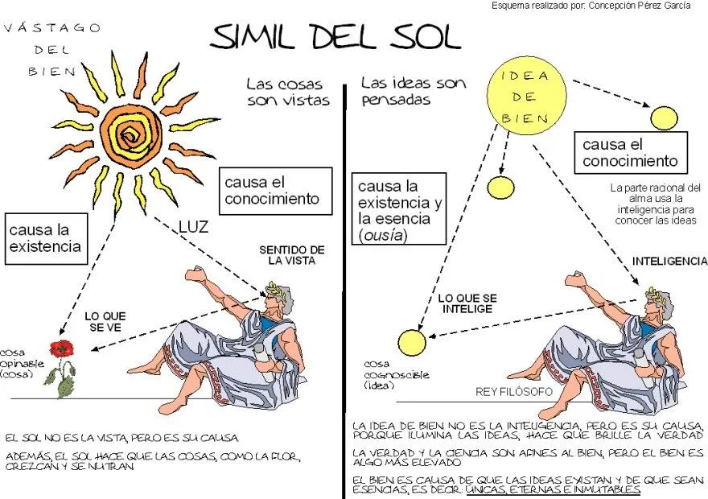
2. Lo que es el Sol para el mundo sensible, condición de su conocimiento y generador de vida y ser por su luz (sin la luz del sol nada podríamos ver y nada podría nacer), así lo es la Idea de Bien para el mundo suprasensible. ¿Por qué esto es así?
1º. Porque Platón considera de manera teleológica la realidad:
Si uno sabe que algo es o existe, siempre se plantea otra pregunta: ¿ Para qué es? ¿Cuál es el bien de ello? El bien de una cosa es la explicación final de su existencia. Pero respecto del Bien mismo ya no puede plantearse semejante pregunta. ï Él es la justificación de su propia existencia, como la felicidad en el Banquete (205 a), donde “ no es legítimo seguir preguntando ¿Por qué todo el mundo quiere ser feliz?. La respuesta es completa”.
Este argumento hace inconcebible la existencia de una Idea de lo Malo, pues así las cosas, el mal entra en el mundo como no existencia, como falta de realidad que corroe la bondad de las cosas: Cuanto más real es una cosa, más participa de la Idea de Bien.
2. Por otra parte, y, según sabemos por la tradición no escrita en la que se recogen algunas enseñanzas transmitidas de manera oral, la Idea de Bien coincide con la de lo Uno (toda idea es una idea) que junto con la Dualidad (toda Idea es distinta de otra) genera todas las Ideas. Además tenemos lo que Platón nos confiesa en su carta VII (una especie de autobiografía): “El conocimiento de estas cosas no es en absoluto comunicable como los demás conocimientos sino que después de muchas discusiones efectuadas sobre estas cosas, y después de una comunidad de vida, repentinamente, como una luz que se enciende gracias a que salta una chispa, así nace en el alma, y se alimenta por sí mismo.”
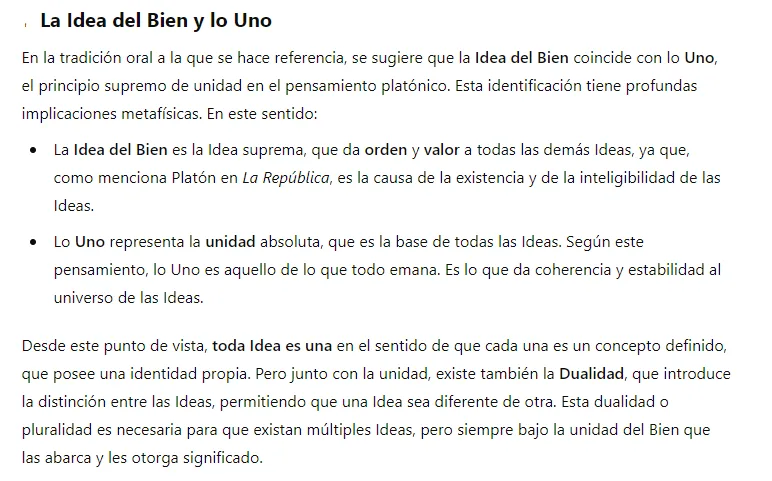
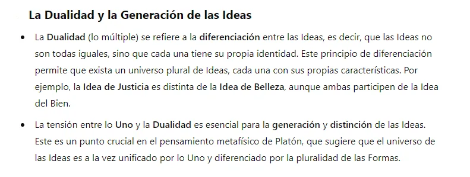
3. Jerarquía de las Ideas. Por debajo de la Idea de Bien aparecen...
1. las cinco Ideas supremas (IDEAS ONTOLÓGICAS) de acuerdo con el diálogo El Sofista que son: Ser, Quietud, Movimiento, Identidad, Diversidad, y otras como Igualdad, Desigualdad, Semejanza, Desemejanza.
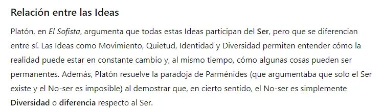
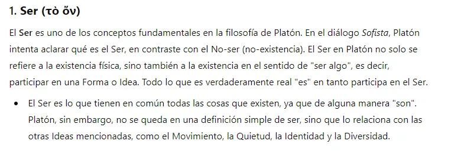
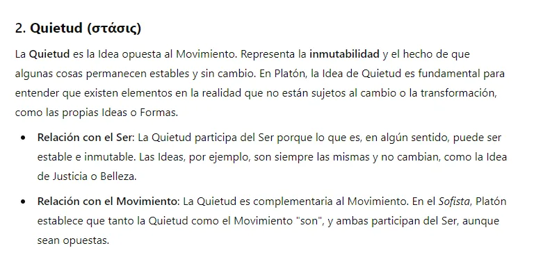
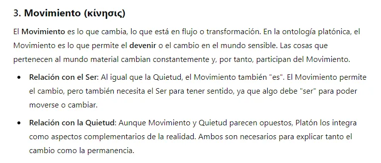
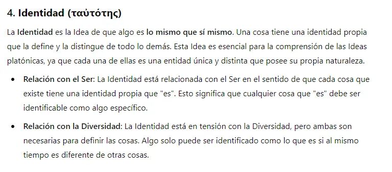
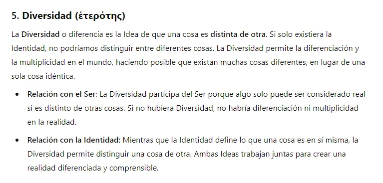
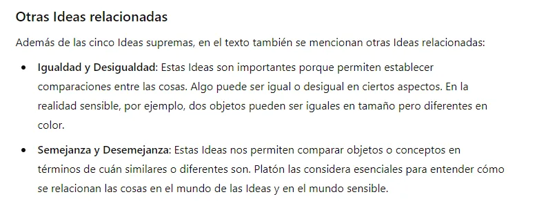
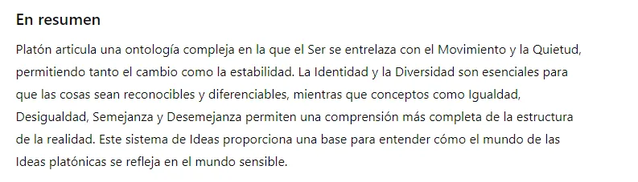
2. Luego están las Ideas de valores morales y estéticos: lo Bello, Lo Justo. Estas Ideas están en el nivel más elevado del mundo de las Formas o Ideas, y sirven como modelos para las cosas y acciones en el mundo sensible. Lo Bello y lo Justo son expresiones perfectas y eternas de valores que en el mundo sensible solo podemos experimentar de manera incompleta o imperfecta. A través de la dialéctica, el proceso de diálogo filosófico, se puede llegar a comprender estas Ideas y a vivir conforme a ellas. Platón sugiere que todas las Ideas, incluidas las de valores morales y estéticos como lo Bello y lo Justo, están jerárquicamente subordinadas a la Idea del Bien. La Idea del Bien es la causa última de la existencia y del conocimiento de todas las demás Ideas. Es decir, las cosas son bellas o justas en tanto que participan en el Bien. En el Libro VI de La República, Platón explica que la Idea del Bien está más allá del ser y que proporciona tanto la realidad a las cosas que existen como la inteligibilidad a las cosas que conocemos. Así, lo Bello y lo Justo, como Ideas, deben su existencia al Bien, y solo a través de la contemplación de la Idea del Bien se puede entender plenamente lo que es la Belleza o la Justicia.
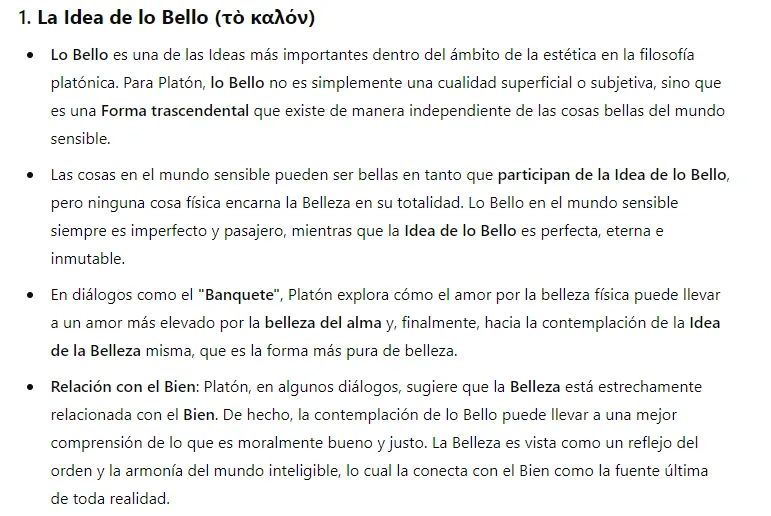
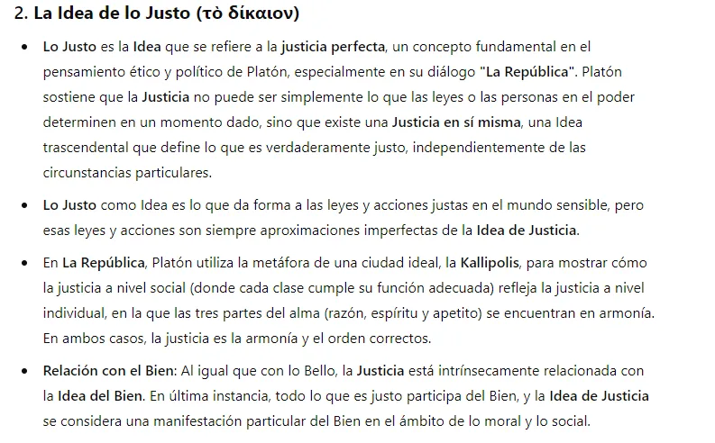
3. A continuación las Ideas de número y entes matemáticos (formas geométicras y relaciones numéricas).
🔗 gee-calculo1.blogspot.com.es
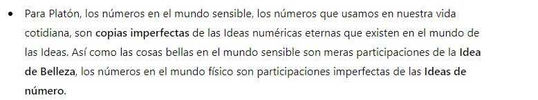
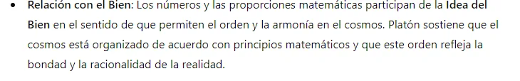
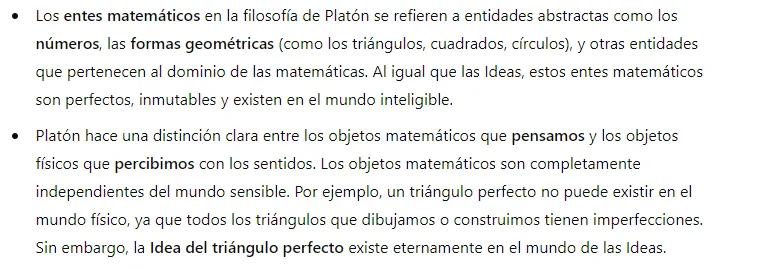
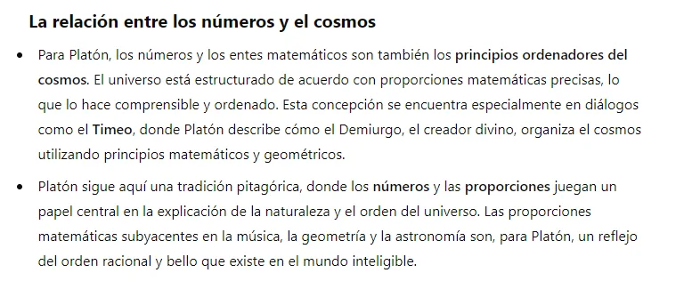
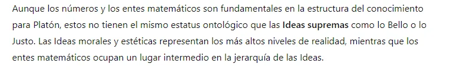
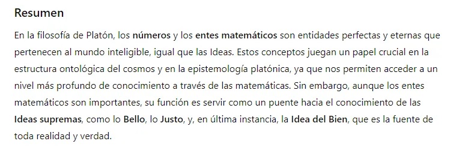
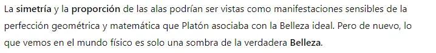
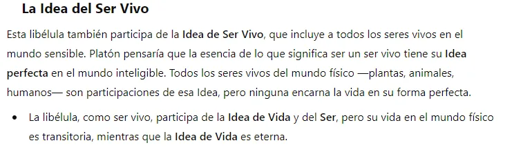
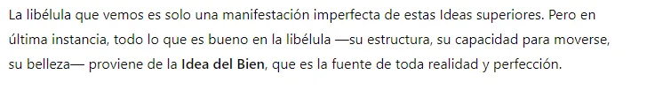
4. Por último, las Ideas generales de todas las cosas particulares: Según Platón, todo lo que existe en el mundo físico (particular) es simplemente una copia imperfecta o una participación de una Idea universal (general) que existe en el mundo inteligible. Estas Ideas generales incluyen conceptos como Hombre, Mesa, Caballo, Árbol, entre otros,
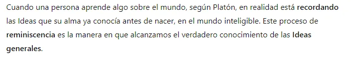
2. El mundo inferior es mutable, caduco, fugaz; el mundo de las sombras y de la oscuridad; es el mundo que siempre está cambiando y nunca es. La multiplicidad se da en el mundo sensible, donde hay muchas cosas bellas, buenas, hombres, caballos. Las realidades inteligibles no tienen materia, son incorpóreas; mientras que las sensibles tienen materia y, por eso, son múltiples.
El interior de la caverna representa el mundo de las cosas sensibles y las sombras que proyectan. Este mundo es una apariencia del verdadero mundo y su falta de realidad está caracterizada por la oscuridad que lo inunda.
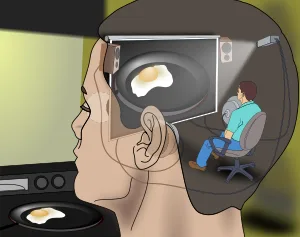
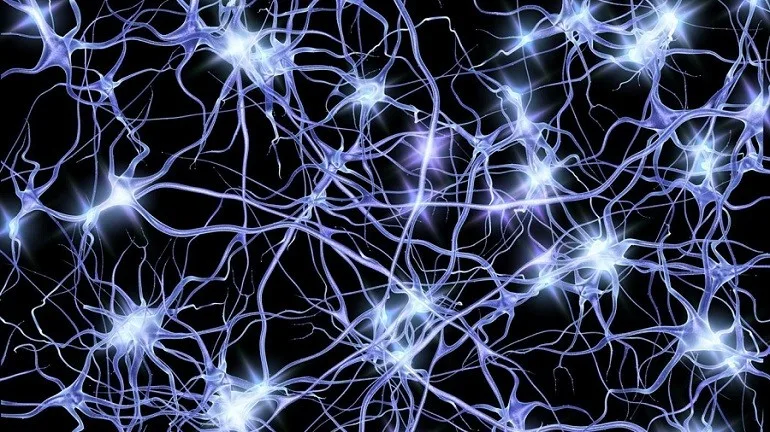
El mundo de las cosas o realidades sensibles caracterizado por:
1. la contingencia (pueden ser otra cosa),
2. la temporalidad (tienen presente, pasado y futuro),
3. la mutabilidad (cambian)
4. y la imperfección (nacen y perecen y no son más que una imitación de las realidades suprasensibles).
3. Resumen del dualismo ontológico. (Objetivo: solucionar el problema de la naturaleza, de la realidad, del movimiento). Distinción entre dos Mundos
1. El mundo sensible, mundo de las cosas sensibles, es material, temporal, continuamente cambiante (inestable) y plural
Las cosas de este mundo, el mundo sensible, se puede decir que son y no son al mismo tiempo
1. ...son ← en la media que vienen determinadas por su "esencia" (participan o imitan su "Idea correspondiente”). Las Ideas están, de alguna manera, presentes, ejemplificadas en las cosas.
2. ...y no son en la medida que existe en ellas un ámbito del no-ser: su inestabilidad, su caducidad y su imperfección.
2. El mundo inteligible, mundo de las Ideas, es la auténtica realidad, las cosas del mundo sensible sólo son copias suyas. Las Ideas son inmateriales e invisibles, eternas, permanentes, estables, siempre idénticas a sí mismas.
1. no son representaciones mentales, como nos sugiere el significado actual de "idea",
2. sino que son realidades que existen con independencia de las cosas. Más aún son la realidad misma← las cosas son menos reales, son copias de las Ideas.
3. Si hay dos mundos, ¿qué conexión tienen entre sí?
1. La relación entre las ideas y las cosas es la participación (méthexis): cada individuo particular es lo que es, porque participa de una idea determinada.
1. Es más, si tiene diversas cualidades es porque participa de diversas ideas: un hombre es tal porque participa de la idea de Hombre, y es bueno y justo porque participa de las ideas de Bien y Justicia. Cada individuo del mundo sensible es un haz de participaciones de ideas del mundo inteligible.
2. También utiliza Platón otras expresiones para explicar la relación entre los dos mundos.
1. Habla de imitación (mímesis): las cosas imitan a las ideas para ser lo que son;
👎 Platón dice que las cosas sensibles participan o imitan a las Ideas, y de ahí les viene su realidad,
→ son copias, reflejos, de las Ideas. Así, algo, una mujer, una cuchara es bella porque imita la Belleza o participa de ella ( texto 4 y 5: Imitación y participación)
2. y así hay una presencia (parousía) de las ideas en las cosas.
3. También dice que las ideas son causa (aitía) de las cosas, puesto que explican por qué una cosa concreta es un caballo o un hombre.
1. No son causa productora, eficiente, de las cosas (luego veremos que Platón tiene que introducir el Demiurgo, como hacedor de las cosas sensibles).
👎 Según el mito de Platón, expuesto en el Timeo, obra en la que describe la disposición, a partir de razonamientos fundados en la teoría de las ideas y del cosmos. Al principio en el universo sólo había:
1. Materia informe y caos.
2. Ideas, que son perfectas.
3. El demiurgo, una divinidad.
4. Espacio.
👎 Platón nos cuenta que el demiurgo se compadece de la materia y copia en ella las ideas, obteniendo con ello los objetos que conforman nuestra realidad. De esta forma explicaba la separación entre el mundo de las ideas que son perfectas y el mundo real (material) que, siendo imperfecto, participa como una copia de la perfección.
nombre masculino
1.
FILOSOFÍA
En la filosofía platónica y gnóstica, artífice o alma universal que es principio ordenador de los elementos preexistentes.
"el monoteísmo no es incompatible con la existencia de demiurgos inferiores"
2.
Artista creador.
"el demiurgo dispone que sus personajes vuelvan a vivir su propia historia y en su espacio cerrado"
2. En suma, las cosas son simple copia o imitación o reflejo (eídolon) de las Ideas.
3. 👎 Para explicar cómo se ha originado este mundo Platón recurre en un diálogo de vejez, el Timeo, a una narración "mítica", donde el Demiurgo (Hacedor, Artesano) modela la Materia informe a la luz (contemplando) de las ideas (modelos o arquetipos), y formando así, como una copia de éstas, las cosas. De esta manera las cosas sensibles participan de las Ideas que, sin embargo, les son trascendentes.
El Demiurgo crea pues el mundo sensible, y el tiempo para que el universo (kosmos) sea imagen móvil de la Eternidad
1. Las Ideas son causa de las cosas, ... 1º. no porque las produzcan (las produce "el demiurgo"), 2º. sino porque constituyen su verdadera esencia, o que sirven de modelo para las cosas particulares.
La causa efectiva del mundo sensible es el Demiurgo, que es una especie de Dios o Inteligencia Ordenadora (influencia del Nôus de Anaxágoras) del mundo sensible. El Demiurgo ordenó la materia informe, caótica y eterna, tomando como modelos las Ideas. La imperfección de este mundo se debe a su carácter material. La perfección del mundo inteligible se debe a la naturaleza inmutable, universal y eterna de las propias Ideas.
👎 Pluralismo de Anaxágoras
🔗 apuntesdefilosofa.blogspot.com.es
1. Anaxágoras expuso su filosofía en su obra Peri physeos (Sobre la naturaleza), pero sólo algunos fragmentos de sus libros han perdurado.
2. Para explicar la pluralidad de objetos en el mundo dotados de cualidades diferentes, recurre a la suposición de que todas las cosas estarían formadas por partículas elementales, que llama con el nombre de "semillas" (spermata, en griego). Más tarde Aristóteles llama a estas partículas con el nombre de homeomerías (partes semejantes).
3. Según Aristóteles, Anaxágoras concibe el nous como origen del universo y causa de la existencia, pero a la vez trata de explicarse y llama a encontrar las cosas cotidianas de lo que ocurre en el mundo. Por otro lado, hizo formar parte de su explicación de la realidad al concepto de nous, inteligencia, la cual, siendo un «fluido» extremadamente sutil, se filtra por entre los recovecos de la materia, a la que anima con su movimiento. El nous penetra algunas cosas y otras no, con lo que se explica, siguiendo a Anaxágoras, la existencia de objetos animados e inertes. Platón en el Fedón se muestra de acuerdo con la afirmación según la cual el nous es la causa de todo y conduce al orden y la armonía, pero discrepa con la búsqueda de las causas materiales emprendida por Anaxágoras.
4. Su doctrina del nous fue más tarde adoptada críticamente por Aristóteles. Las diferencias entre las concepciones de uno y otro pueden apreciarse con este ejemplo: Para Anaxágoras los humanos pudieron hacerse inteligentes debido a que tenían manos, en cambio para Aristóteles el hombre recibió manos debido a que tenía inteligencia.
2. En este sentido, las cosas concretas parecen perder su realidad en Platón, pues quedan reducidas a mero reflejo o imitación de las Ideas, pero carentes de realidad por sí mismas.
No olvidemos que Platón pretende explicar el tipo de realidad que tiene el mundo sensible (copia imperfecta), que él nunca niega como hiciera Parménides, sino que la tacha de falsa, engañosa e ilusoria.
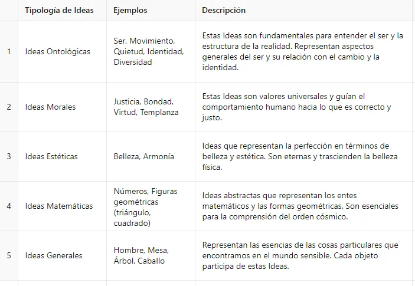
III. Grados del ser y del conocer.
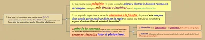
1. El contexto filosófico más inmediato del “mito de la caverna”: aparece como culminación de una temática inmediatamente anterior -de un diálogo entre Sócrates y sus discípulos- que versaba sobre el más elevado conocimiento: el conocimiento del Bien (la realidad suprema).
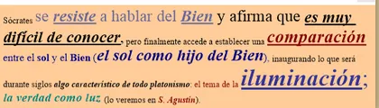
1. En la República, Sócrates señala cuatro virtudes cardinales: la sabiduría, el valor, la moderación y la justicia. En el Libro VI Sócrates les dice a sus interlocutores (Adimanto, Glaucón, etc.), que si bien son estas las virtudes principales, hay algo superior a ellas a las que éstas le deben su ser y su inteligibilidad: la Idea de Bien. Sócrates le asigna así a esta Idea una importancia que excede la meramente ética. Debido al carácter sublime de la Idea de Bien (que considera algo divino) señala que difícilmente se puede entender su significado en este momento del diálogo, por lo que es preciso realizar un rodeo explicativo, un descenso discursivo para que los compañeros de diálogo lo puedan entender. Sócrates explicará la Idea de Bien a través de algo que se le "asemeje" . Recurre así a un símil, el "símil del Sol” , en el que establece una comparación o paralelismo entre el Sol y la Idea de Bien
2. Símil del sol como hijo del Bien.
1. De la misma manera que el Sol hace posible la visión en el ser humano, el Bien proporciona el conocimiento inteligible en el alma, permite conocer las Ideas. Por otro lado, de la misma manera que el Sol da el ser, la vida (crecimiento, alimentación) a los seres vivos, el Bien concede el ser y la esencia a las Ideas.
1. El sol es la causa de la visión, pero él no es visión;
2. el Bien es causa de la verdad y del conocimiento, pero él no es conocimiento: está por encima…
1. del ser (Ideas),
2. del conocimiento (verdad)
3. y se equipara con la divinidad.
→ Por eso es casi imposible conocerlo adecuadamente, pero tiene que vislumbrarlo el verdadero filósofo, tanto para vivir bien como para gobernar con justicia.
2. El objeto de la sabiduría (sophía), de la razón (noûs), son las Ideas.
Los filósofos con la vista (visión intelectual) puesta en ellas, marcarán el buen funcionamiento de la ciudad, pues sólo el que conoce las Ideas de tipo ético-político: la Justicia, el Valor, el Bien,..., puede realizar en este mundo una ciudad justa.
En el diálogo de la República se trata de dar al gobernante la formación intelectual y moral que hará de él un verdadero filósofo.
Sin embargo, ni las virtudes ni las ciencias bastan. Pues más allá de las virtudes y las ciencias, más allá incluso de la justicia, hay un objeto supremo de saber en el cual toda virtud y toda ciencia son vanas.
El ideal de Justicia, de Estado y de los hombres está fundado en algo más allá que es la Idea de Bien.
3. La Idea de Bien es el primer principio de la ontología de Platón, de ella se derivan todas las Ideas y de éstas, como copia suya, la realidad sensible.
2. Después de esta comparación entre el sol y el Bien, Platón menciona (al final del libro VI de La República), en un célebre pasaje, los grados de conocimiento y de realidad, grados que aparecerán simbolizados en el mito de la caverna, …
1. Platón introduce una dualidad de mundos: el mundo sensible y el inteligible. Y a ese dualismo ontológico le hace corresponder un dualismo gnoseológico:
1. la ciencia (episteme), que tiene por objeto las realidades inteligibles o ideas . Es la razón la que nos permite contemplar dichas esencias. Se corresponde con el saber del prisionero que ha salido de la caverna.
2. y la opinión (doxa), que tiene por objeto los seres sujetos al devenir. Los objetos del mundo sensible son captables por los sentidos, Se corresponde con lo que los hombres pueden conocer en el interior de la caverna).
2. A su vez, cada uno de estos grados de conocimiento se desdobla en otros dos. El mito de la caverna se relaciona con los grados de conocimiento que ha establecido al final del libro VI comparándolos con una línea dividida en dos que a su vez se subdividen en otras dos.
1. Grados de conocimiento. Platón establece cuatro niveles de conocimiento, que corresponden a los niveles de la realidad. Estos grados van desde la ignorancia y el error hasta el conocimiento perfecto y verdadero de las Ideas.
1. El grado ínfimo de la opinión, y por ende, del conocimiento, es la Eikasía (Imaginación: conjetura o mera suposición). Es el conocimiento basado en las sombras y reflejos de los objetos. Corresponde a la percepción confusa o errónea del mundo sensible, porque se basa en las copias de la realidad (imágenes de las cosas) o sea, en lo que nos cuentan los demás de lo ocurrido, en las interpretaciones que nos dan de las leyes… y está representado en el Mito de la Caverna por los prisioneros que solo pueden ver las sombras proyectadas en la pared de la caverna y de los ecos que toman por las voces reales). "sombras, y en segundo lugar, figuras que se forman en el agua y en todo lo que es compacto, pulido y brillante, y a otras cosas semejantes”. Algunos intérpretes del pensamiento platónico señalan que la "eikasía" es el conocimiento de aquellos hombres que se dejan guiar por lo que escuchan de los demás, por las opiniones de los otros, por la demagogia, de tal forma que aprehenden la realidad sensible no de forma directa, sino de una manera imperfecta.
2. Pístis (Creencia): Este nivel de conocimiento se basa en la percepción directa de los objetos sensibles. Las personas en este nivel reconocen los objetos físicos en el mundo, pero no tienen acceso al verdadero conocimiento de las Ideas. Este grado sigue perteneciendo al mundo sensible y no alcanza el verdadero conocimiento. En el Mito de la Caverna, está representado por los prisioneros que podrían ver los objetos que causan las sombras, pero aún dentro de la caverna. Es el conocimiento que tenemos si vemos un acontecimiento, o leemos y entendemos una ley. Nótese que se trata de un conocimiento de lo sensible: de los acontecimientos particulares y contingentes, y de las leyes más o menos justas de esta o aquella ciudad. A pesar de ser superior a la "eikasía" no por ello deja de ser imperfecto, pues su objeto son los objetos temporales, que son y que no son, y sobre los que no es posible un saber cierto y estable.
3. El primer grado de la episteme (ciencia) es laDianoia (Razonamiento discursivo o conocimiento matemático-deductivo): Este nivel corresponde al uso de la razón para investigar las relaciones matemáticas y abstractas. La Dianoia representa el comienzo del acceso al mundo inteligible, pero aún depende de hipótesis, que son supuestos que aceptamos sin cuestionar para avanzar en el razonamiento. Las hipótesis funcionan como herramientas provisionales que nos permiten desarrollar argumentos o demostrar teorías, pero no nos llevan directamente a la verdad última o al conocimiento directo de las Ideas supremas. El razonamiento en este nivel es discursivo. En el Mito de la Caverna, este nivel está representado por el prisionero que ha salido de la caverna y ha de acostumbrarse poco a poco a la luz del so, pero que aún no puede mirar directamente al sol. En cambio, empieza a ver las cosas bajo la luz de la luna o sus reflejos en el agua. Aunque es un paso importante hacia la verdad, el conocimiento todavía es indirecto y necesita más desarrollo para llegar al nivel de Noesis, que es el conocimiento puro y directo de las Ideas.
4. El grado supremo es la Noesis (Conocimiento puro -INTELECCIÓN- o conocimiento de las Ideas): Este es el grado más elevado de conocimiento, que se refiere al conocimiento directo de las Ideas (tanto morales como de las cosas sensibles), y especialmente de la Idea del Bien, cuya comprensión nos da un conocimiento superior y máximo sobre los objetos de este mundo, que son buenos y reales en cuanto participan de esas ideas. Aquí la mente no depende de hipótesis ni de percepciones sensibles, sino que contempla directamente las verdades eternas y absolutas. En el Mito de la Caverna, este nivel estaría representado por el prisionero que, tras salir de la caverna, es capaz de mirar directamente al sol y comprender su naturaleza como fuente de luz y de vida, es decir, como la fuente última de todo conocimiento y realidad.
La "noésis" , que es una intuición (y no reflexión), hizo pensar a los "neoplatónicos" como Plotino en una experiencia de tipo individual y mística (unión espiritual), como acceso a un tipo de saber esotérico e incomunicable. Pero para Platón sí es accesible, es por medio del diálogo como se puede despertar el alma del discípulo y orientarlo hacia la verdad.
La "noésis" es el conocimiento perfecto, que da lugar a la Ciencia de las Ideas, llamada "Dialéctica" y también "Filosofía".
La tarea de esta Ciencia consistirá en elevarse (habiendo tenido como propedéutica a las "matemáticas") hasta el conocimiento de las Ideas Superiores (Ideas morales) y de éstas, al de la suprema Idea, la idea de Bien, que aunque Platón no la nombra en el "símil de la línea" esta supuesto en él. El Bien es aquello que proporciona inteligibilidad y ser a las Ideas, de la misma manera que el Sol proporciona visibilidad y generación a las cosas del mundo sensible. El Bien lo corona todo, es el principio divino de la Ontología platónica.
5. Por último, Platón señala que hay sólo tres ciencias, pues la imaginación no nos proporciona ciencia. Estas tres ciencias son ...
la física, que versa sobre las cosas del mundo sensible (en realidad no es auténtica ciencia, pues sus objetos son mutables);
la matemática, que versa sobre los objetos matemáticos;
y la dialéctica, sobre las ideas.
2. Grados de realidad. Platón también distingue entre diferentes grados de realidad que corresponden a los grados de conocimiento. Así como hay distintos niveles de conocimiento, hay distintos niveles de ser.
1. Sombras e imágenes (lo menos real): Estas son las sombras y reflejos de los objetos físicos. Representan lo más bajo en la escala de realidad. En el Mito de la Caverna, estas sombras corresponden al conocimiento imperfecto que se tiene de las cosas a través de la imaginación.
2. Objetos físicos (realidad sensible): Los objetos del mundo sensible tienen más realidad que las sombras, pero siguen siendo cambiantes e imperfectos. Son reales en tanto que participan de las Ideas (son imágenes o copias de la Realidad Inteligible. ), pero no tienen una realidad plena. Este es el nivel del ser que corresponde a la creencia.
3. Entidades matemáticas: Platón coloca las entidades matemáticas en un nivel intermedio de realidad. Aunque estas entidades no están en el mundo físico, son más estables y ciertas que los objetos sensibles, pero no alcanzan la plenitud del ser de las Ideas. De ellas objetenos un razonamiento discursivo o dianoia.
4. Las Ideas o Formas (lo más real): Las Ideas son las entidades más reales, porque son eternas, inmutables e independientes de las percepciones sensibles. La Idea del Bien es la más elevada de todas las Ideas y la causa de todas las demás. Las cosas particulares del mundo físico solo son reales en la medida en que participan de las Ideas, pero las Ideas en sí mismas tienen una realidad plena y perfecta. De ellas obtenemos un verdadero conocimeinto, a saber: noesis o conocimiento intelectivo.
3. El pasaje fundamental se encuentra al final del libro sexto de la República (509 d-511 e).
1. Allí se describen los grados del conocimiento en relación con los grados del ser, representándolos sobre una línea cortada en segmentos (de tal manera que permita establecer proporciones geométricas):
2. Las cuatro subsecciones en las que dividimos la línea 1. representan cuatro clases de "objetos" en sucesión creciente de realidad (Grados de Ser, Ontología),
2. → que corresponden a cuatro formas crecientes de "conocimiento" (Grados de Conocimiento, Epistemología). Platón supone que cuanta mayor realidad, es decir, perfección, de los objetos, → tanta mayor claridad es alcanzable cuando los queramos aprehender: A cada tipo de objeto corresponde una forma de conocimiento. La proporcionalidad de los segmentos atiende al grado de ser, realidad y perfección).
3. Mapas
3. La doctrina de la dialéctica es la última elaboración de Platón de su teoría del conocimiento. El problema que se había plantado es cómo accedemos cognitivamente a las ideas, si éstas están separadas de lo sensible. Su respuesta inicial fue la reminiscencia (anamnesis),
1. descrita por primera vez en el Menón (el esclavo que contesta correctamente a problemas geométricos, sin haber estudiado nunca geometría).
1. ⬅️ El alma humana es eterna y ha vivido en el kósmos noetós. Allí ha contemplado la realidad, pero, cuando es encerrada en el cuerpo, sufre el olvido de su patria. Sin embargo, dado que las cosas imitan a las ideas, el conocimiento de lo sensible sirve como ocasión para el recuerdo de lo inteligible.
2. Dicho de otro modo
Si él hombre por simple reflexión puede descubrir verdades (en sentido platónico) es que ya las poseía dentro de sí (por los sentidos directamente no puede acceder a ellas) y así, por ejemplo en el Menón (texto 1), el esclavo interrogado por Sócrates, descubre por sí solo que el cuadrado doble de otro es el que está construido sobre la diagonal de éste.
→ Según Platón, descubrir una verdad que ya se poseía es volver a acordarse.
💬 Comentario: TEXTO Nº 1: Platón, "Teoría de la reminiscencia", MENON (80d – 86c) Y ahora, «qué es la vi…
TEXTO Nº 1: Platón, "Teoría de la reminiscencia", MENON (80d – 86c)
Y ahora, «qué es la virtud», tampoco yo lo sé; pero tú, en cambio, tal vez sí lo. sabías antes de ponerte en contacto conmigo, aunque en este momento asemejes a quien no lo sabe. No obstante, quiero investigar contigo e indagar qué es ella.
MEN. ––¿Y de qué manera buscarás, Sócrates, aquello que ignoras totalmente qué es? ¿Cuál de las cosas que ignoras vas a proponerte como objeto de tu búsqueda? Porque si dieras efectiva y ciertamente con ella, ¿cómo advertirás, en efecto, que es ésa que buscas, desde el momento que no la conocías?
SÓC. ––Comprendo lo que quieres decir, Menón. ¿Te das cuenta del argumento erístico que empiezas a entretejer: que no le es posible a nadie buscar ni lo que sabe ni lo que no sabe? Pues ni podría buscar lo que sabe ––puesto que ya lo sabe, y no hay necesidad alguna entonces de búsqueda––, ni tampoco lo que no sabe ––puesto que, en tal caso, ni sabe lo que ha de buscar––.
MEN. ––¿No te parece, Sócrates, que ese razonamiento está correctamente hecho?
SÓC. –– A mí no.
MEN. –– ¿Podrías decir por qué?
SÓC. –– Yo sí. Lo he oído, en efecto, de hombres y mujeres sabios en asuntos divinos... .
MEN. –– ¿Y qué es lo que dicen?
SÓC. –– Algo verdadero, me parece, y también bello.
MEN. ––¿Y qué es, y quiénes lo dicen?
SÓC. –– Los que lo dicen son aquellos sacerdotes y sacerdotisas que se han ocupado de ser capaces de justificar el objeto de su ministerio. Pero también lo dice Píndaro y muchos otros de los poetas divinamente inspirados. Y las cosas que dicen son éstas ––y tú pon atención si te parece que dicen verdad––: afirman, en efecto, que el alma del hombre es inmortal, y que a veces termina de vivir ––lo que llaman morir––, a veces vuelve a renacer, pero no perece jamás. Y es por eso por lo que es necesario llevar la vida con la máxima santidad, porque de quienes...
Perséfone el pago de antigua condena
haya recibido, hacia el alto sol en el noveno año
el alma de ellos devuelve nuevamente,
de las que reyes ilustres
y varones plenos de fuerza y en sabiduría insignes surgirán. Y para el resto de los tiempos héroes sin mácula por los hombres serán llamados .
El alma, pues, siendo inmortal y habiendo nacido muchas veces, y visto efectivamente todas las cosas, tanto las de aquí como las del Hades, no hay nada que no haya aprendido; de modo que no hay de qué asombrarse si es posible que recuerde, no sólo la virtud, sino el resto de las cosas que, por cierto, antes también conocía. Estando, pues, la naturaleza toda emparentada consigo misma, y habiendo el alma aprendido todo, nada impide que quien recuerde una sola cosa ––eso que los hombres llaman aprender––, encuentre el mismo todas las demás, si es valeroso e infatigable en la búsqueda. Pues, en efecto, el buscar y el aprender no son otra cosa, en suma, que una reminiscencia.
No debemos, en consecuencia, dejarnos persuadir por ese argumento erístico. Nos volvería indolentes, y es propio de los débiles escuchar lo agradable; este otro, por el contrario, nos hace laboriosos e indagadores. Y porque confío en que es verdadero, quiero buscar contigo en qué consiste la virtud.
MEN. ––Sí, Sócrates, pero ¿cómo es que dices eso de que no aprendemos, sino que lo que denominamos aprender es reminiscencia? ¿Podrías enseñarme que es así?
SÓC. –– Ya te dije poco antes, Menón, que eres taimado; ahora preguntas si puedo enseñarte yo, que estoy afirmando que no hay enseñanza, sino reminiscencia, evidentemente para hacerme en seguida caer en contradicción conmigo mismo.
MEN. –– ¡No, por Zeus, Sócrates! No lo dije con esa intención, sino por costumbre. Pero, si de algún modo puedes mostrarme que en efecto es así como dices, muéstramelo.
SÓC. –– ¡Pero no es fácil! Sin embargo, por ti estoy dispuesto a empeñarme. Llámame a uno de tus numerosos servidores que están aquí, al que quieras, para que pueda demostrártelo con él.
MEN. –– Muy bien. (A un servidor.) Tú, ven aquí.
SÓC. –– ¿Es griego y habla griego?
MEN. –– Perfectamente; nació en mi casa.
SÓC. –– Pon entonces atención para ver qué te parece lo que hace: si recuerda o está aprendiendo de mí.
MEN. –– Así haré.
SÓC. –– (Al servidor.) Dime entonces, muchacho, ¿conoces que una superficie cuadrada es una figura así? (La dibuja.)
SERVIDOR. –– Yo sí.
SÓC. –– ¿Es, pues, el cuadrado, una superficie que tiene todas estas líneas iguales, que son cuatro?
SERVIDOR. –– Perfectamente.
SÓC. –– ¿No tienen también iguales éstas trazadas por el medio ?
SERVIDOR. ––Sí.
SÓC. –– ¿Y no podría una superficie como ésta ser mayor o menor ?
SERVIDOR. –– Desde luego.
SÓC. –– Si este lado fuera de dos pies y este otro también de dos, ¿cuántos pies tendría el todo ? Míralo así: si fuera por aquí de dos pies, y por allí de uno solo , ¿no sería la superficie de una vez dos pies ?
SERVIDOR. –– Sí.
SÓC. –– Pero puesto que es de dos pies también aquí, ¿qué otra cosa que dos veces dos resulta?
SERVIDOR. –– Así es.
SÓC. –– ¿Luego resulta, ciertamente, dos veces dos pies?
SERVIDOR. –– Sí.
SÓC. –– ¿Cuánto es entonces dos veces dos pies? Cuéntalo y dilo.
SERVIDOR. –– Cuatro, Sócrates.
SÓC. –– ¿Y podría haber otra superficie, el doble de ésta, pero con una figura similar, es decir, teniendo todas las líneas iguales como ésta?
SERVIDOR. –– Sí.
SÓC. ––¿Cuántos pies tendrá?
SERVIDOR. –– Ocho.
SÓC. –– Vamos, trata ahora de decirme cuál será el largo que tendrá cada una de sus líneas. Las de ésta tienen dos pies, ¿pero las de ésa que es doble?
SERVIDOR. –– Evidentemente, Sócrates, el doble .
SÓC.––¿Ves, Menón, que yo no le enseño nada, sino que le pregunto todo. Y ahora él cree saber cuál es el largo del lado del que resultará una superficie de ocho pies, ¿o no te parece?
MEN. –– A mí sí.
SÓC. –– ¿Pero lo sabe?
MEN. –– Claro que no.
SÓC. –– ¿Pero cree que es el doble de la otra?
MEN. –– Sí.
SÓC. –– Observa cómo él va a ir recordando en seguida, como hay, en efecto, que recordar.
(Al servidor.) Y tú, dime: ¿afirmas que de la línea doble se forma la superficie doble? Me refiero a una superficie que no sea larga por aquí y corta por allí, sino que sea igual por todas partes, como ésta, pero el doble que ésta, de ocho pies. Fíjate si todavía te parece que resultará el doble de la línea.
SERVIDOR. ––A mí sí.
SÓC. –– ¿No resulta ésta el doble que aquélla, si agregamos desde aquí otra cosa así ?
SERVIDOR. –– Por supuesto.
SÓC. –– ¿Y de ésta , afirmas que resultará una superficie de ocho pies, si hay cuatro de ellas iguales?
SERVIDOR. –– Sí.
SÓC. –– Dibujemos, pues, a partir de ella, cuatro iguales . ¿No sería ésa la superficie de ocho pies que tú afirmas?
SERVIDOR. –– Por supuesto.
SÓC. –– ¿Pero no hay en esta superficie estos cuatro cuadrados, cada uno de los cuales es igual a ése de cuatro pies ?
SERVIDOR. –– Sí.
SÓC. –– ¿De qué. tamaño resultará entonces? ¿No es cuatro veces mayor?
SERVIDOR. –– Desde luego.
SOC. ––¿Y es doble lo que es cuatro veces mayor?
SERVIDOR. –– ¡No, por Zeus!
SÓC. ––¿Cuántas veces entonces?
SERVIDOR. –– El cuádruple.
SÓC. –– Entonces, de la línea doble, muchacho, no resulta una superficie doble sino cuádruple.
SERVIDOR. –– Es verdad.
SÓC. –– Y cuatro veces cuatro es dieciséis, ¿no?
SERVIDOR. –– Sí.
SÓC. –– Entonces la superficie de ocho pies, ¿de cuál línea resulta? De ésta nos ha resultado el cuádruple.
SERVIDOR. –– Eso digo.
SÓC. –– ¿Y esta cuarta parte resulta de la mitad de esta línea aquí ?
SERVIDOR. –– Sí.
SÓC.––Bien. ¿Pero la de ocho pies no es el doble de ésta y la mitad de ésa ?
SERVIDOR. –– Sí.
SÓC. –– ¿No resultará entonces una línea mayor que ésta, pero menor que ésa , o no?
SERVIDOR. ––A mí me parece que sí.
SÓC. –– ¡Muy bien!, pues lo que a ti te parece es lo que debes contestar. Y dime: ¿esta línea no era de dos pies y ésa de cuatro?
SERVIDOR. –– Sí.
SÓC. –– Entonces es necesario que la línea de la superficie de ocho pies sea mayor que ésta, que tiene dos pies, y menor que ésa, que tiene cuatro.
SERVIDOR. –– Es necesario.
SÓC. –– Trata de decir qué largo afirmas que tendrá.
SERVIDOR. ––Tres pies.
SÓC. –– Si ha de ser de tres pies, ¿agregamos la mitad de ésta y tendrá tres pies? Porque ésos son dos pies, éste, uno; y por aquí, igualmente, dos éstos y uno éste, y así resulta la superficie que tú afirmas. (Sócrates completa el cuadrado AZPQ .)
SERVIDOR. ––Sí.
SÓC. –– De modo que si tiene tres por aquí y tres por allí, ¿la superficie total resulta tres veces tres pies?
SERVIDOR. –– Evidentemente.
SÓC. ––Tres veces tres, ¿cuántos pies son?
SERVIDOR. –– Nueve.
SÓC. ––¿Y cuántos pies tiene la superficie del doble?
SERVIDOR. –– Ocho.
SÓC. –– Entonces de la línea de tres pies tampoco deriva la superficie de ocho.
SERVIDOR. –– Desde luego que no.
SÓC. ––Pero entonces, ¿de cuál? Trata de decírnoslo con exactitud. Y si no quieres hacer cálculos, muéstranosla en el dibujo.
SERVIDOR. –– ¡Por Zeus!, Sócrates, que yo no lo sé.
SÓC. –– Te das cuenta una vez más, Menón, en qué punto se encuentra ya del camino de la reminiscencia? Porque al principio no sabía cuál era la línea de la superficie de ocho pies, como tampoco ahora lo sabe aún; sin embargo, creía entonces saberlo y respondía con la seguridad propia del que sabe, considerando que no había problema. Ahora, en cambio, considera que está ya en el problema, y como no sabe la respuesta, tampoco cree saberla.
MEN. –– Es verdad.
SÓC. ––¿Entonces está ahora en una mejor situación con respecto del asunto que no sabía?
MEN. –– Así me parece.
SÓC. –– Al problematizarlo y entorpecerlo, como hace el pez torpedo, ¿le hicimos algún daño?
MEN. –– A mí me parece que no.
SÓC. –– Le hemos hecho, al contrario, un beneficio para resc lver cómo es la cuestión. Ahora, en efecto, buscará de buen grado, puesto que no sabe, mientras que muchas veces antes, delante de todos, con tranquilidad, creía estar en lo cierto al hablar de la superficie doble y suponía que había que partir de una superficie del doble de largo.
MEN. –– Así parece.
SÓC. ––¿Crees acaso que él hubiera tratado de buscar y ‘aprender esto que creía que sabía, pero ignoraba, antes de verse problematizado y convencido de no saber, y de sentir el deseo de saber?
MEN. ––Me parece que no, Sócrates.
SÓC. ––¿Ha ganado, entonces, al verse entorpecido?
MEN. –– Me parece.
SÓC. –– Observa ahora, arrancando de este problema, qué es lo que efectivamente va a encontrar, buscando conmigo, sin que yo haga más que preguntar, y sin enseñarle. Vigila por si me coges enseñándole y explicándole en lugar de interrogarle por sus propios pareceres.
(Al servidor.) Dime entonces tú: ¿No tenemos aquí una superficie de cuatro pies ?
SERVIDOR. ––Sí.
SÓC. ––¿Podemos agregarle a ésa otra igual ?
SERVIDOR. –– Sí.
SÓC. –– ¿Y esta tercera, igual a cada una de ésas ?
SERVIDOR. –– Sí.
SÓC. –– ¿No podríamos completar, además, este ángulo ?
SERVIDOR. –– Por supuesto.
SÓC. ––¿No resultarían entonces estas cuatro superficies iguales?
SERVIDOR. ––Sí.
SÓC. ––¿Y qué? ¿El todo éste cuántas veces es mayor que aquél ?
SERVIDOR.––Cuatro veces.
SÓC. –– Pero nosotros necesitábamos que fuera doble, ¿no te acuerdas?
SERVIDOR. –– Por supuesto.
SÓC. –– Entonces esta línea que va de un ángulo a otro, ¿no corta en dos a cada una de estas superficies ?
SERVIDOR. –– Sí.
SÓC. –– ¿No son cuatro estas líneas iguales que encierran esta superficie ?
SERVIDOR. –– Lo son, en efecto.
SÓC. ––Observa ahora: ¿qué tamaño tiene esta superficie?
SERVIDOR. –– No entiendo.
SÓC. –– De éstas, que son cuatro, ¿no ha cortado cada línea en su interior la mitad de cada una?, ¿o no?
SERVIDOR. –– Sí.
SÓC. ––¿Y cuántas de esas mitades hay en ésta ?
SERVIDOR. ––Cuatro.
SÓC. –– ¿Y cuántas en ésa ?
SERVIDOR. –– Dos.
SÓC. ––¿Qué es cuatro de dos?
SERVIDOR. –– El doble.
SÓC. –– ¿Y esta superficie , ¿cuántos pies tiene?
SERVIDOR. ––Ocho pies.
SÓC. –– ¿De cuál línea?
SERVIDOR. –– De ésta .
SÓC. –– ¿De la que habíamos trazado de ángulo a ángulo en la superficie de cuatro pies?
SERVIDOR. –– Sí.
SÓC. ––Los sofistas la llaman «diagonal», y puesto que si «diagonal» es su nombre, de la diagonal se llegará a obtener, como tú dices, servidor de Menón, la superficie doble.
SERVIDOR. –– Por supuesto que sí, Sócrates.
SÓC. –– ¿Qué te parece, Menón? ¿Ha contestado él con alguna opinión que no le sea propia?
MEN. –– No, con las suyas.
SÓC. –– Y, sin embargo, como dijimos hace poco, antes no sabía.
MEN. –– Es verdad.
SÓC. –– Estas opiniones, entonces, estaban en él, ¿o no?
MEN. –– Sí.
SÓC. –– El que no sabe, por lo tanto, acerca de las cosas que no sabe, ¿tiene opiniones verdaderas sobre eso que efectivamente no sabe?
MEN. –– Parece.
SÓC. –– Y estas opiniones que acaban de despertarse ahora, en él, son como un sueño. Si uno lo siguiera interrogando muchas veces sobre esas mismas cosas, y de maneras diferentes, ten la seguridad de que las acabaría conociendo con exactitud, no menos que cualquier otro.
MEN. –– Posiblemente.
SÓC. –– Entonces, ¿llegará a conocer sin que nadie le enseñe, sino sólo preguntándole, recuperando él mismo de sí mismo el conocimiento?
MEN. –– Sí.
SÓC. –– ¿Y este recuperar uno el conocimiento de sí mismo, no es recordar?
MEN. –– Por supuesto.
SÓC. –– El conocimiento que ahora tiene, ¿no es cierto que o lo adquirió, acaso, alguna vez o siempre lo tuvo?
MEN. –– Sí.
SÓC. ––Si, pues, siempre lo tuvo, entonces siempre también ha sido un conocedor; y si, en cambio, lo adquirió alguna vez, no será por cierto en esta vida donde lo ha adquirido. ¿O le ha enseñado alguien geometría? Porque éste se ha de comportar de la misma manera con cualquier geometría y con todas las demás disciplinas. ¿Hay, tal vez, alguien que le haya enseñado todo eso? Tú tendrías, naturalmente, que saberlo, puesto que nació en tu casa y en ella se ha criado.
MEN. –– Sé muy bien que nadie le ha enseñado nunca.
SÓC. –– ¿Tiene o no tiene esas opiniones?
MEN. –– Indudablemente las tiene, Sócrates.
SÓC. ––Si no las adquirió en esta vida, ¿no es ya evidente que en algún otro tiempo las tenía y las había aprendido?
MEN. –– Parece.
SÓC. –– ¿Y no es ése, tal vez, el tiempo en que él no era todavía un hombre?
MEN. –– Sí.
SÓC. –– Si, pues, tanto en el tiempo en que es hombre, como en el que no lo es, hay en él opiniones verdaderas, que, despertadas mediante la interrogación, se convierten en fragmentos de conocimientos, ¿no habrá estado el alma de él, en el tiempo que siempre dura, en posesión del saber. Es evidente, en efecto, que durante el transcurso del tiempo todo lo es y no lo es un ser humano .
MEN. –– Parece.
SÓC. –– Por tanto, si siempre la verdad de las cosas está en nuestra alma, ella habrá de ser inmortal. De modo que es necesario que lo que ahora no conozcas ––es decir, no recuerdes–– te pongas valerosamente a buscarlo y a recodarlo.
MEN. –– Me parece que dices bien, Sócrates, aunque no sé por qué.
SÓC. ––A mí también me parece, Menón. Aunque en lo referente a los demás aspectos, no insistiría tanto con este discurso; en cambio, creemos que es necesario buscar lo que no se sabe para ser mejores, más esforzados y menos inoperantes que si creyésemos que no conocemos ni somos capaces de encontrar, ni que es necesario buscar. Y por esto sí estoy plenamente dispuesto a luchar, si puedo, tanto de palabra como de obra.
MEN. –– También esto, Sócrates, me parece que lo dices bien.
SÓC. –– ¿Quieres, pues, ya que estamos de acuerdo en que hay que indagar lo que uno no sabe que intentemos en común buscar qué es la virtud?
Pero esta Teoría implica la afirmación de la existencia del Alma y de su Inmortalidad, y la relación de ésta con el mundo Inteligible. En el Fedro (texto 2), Platón relata la condición del hombre respecto del mundo inteligible a través de un mito, el mito del Carro Alado (el mito platónico señala una limitación de la razón).
💬 Comentario: TEXTO N° 2: PLATÓN, "El mito del carro alado", FEDRO (247c— 248c) «Soc.-Sobre la inmortali…
TEXTO N° 2: PLATÓN, "El mito del carro alado", FEDRO (247c— 248c)
«Soc.-Sobre la inmortalidad, baste ya con lo dicho. Pero sobre su idea hay que añadir lo siguiente: Como es el alma, requeriría toda una larga y divina explicación; pero decir a qué se parece es ya asunto humano y, por supuesto, más breve. Podríamos entonces decir que se parece a una fuerza que, como si hubieran nacido juntos, lleva a una yunta alada y a su auriga. Pues bien, los caballos y los aurigas de los dioses son todos ellos buenos, y buena su casta, la de los otros es mezclada. Por lo que a nosotros se refiere, hay, en primer lugar, un conductor que guía un tronco de caballos y, después, estos caballos de los cuales uno es bueno y hermoso, y está hecho de esos mismos elementos, y el otro de todo lo contrario, como también su origen. Necesariamente, pues, nos resultará difícil y duro su manejo.
Y ahora, precisamente, hay que intentar decir de dónde le viene al viviente la denominación de mortal, e inmortal. Todo lo que es alma tiene a su cargo lo inanimado, y recorre el cielo entero, tomando unas veces una forma y otras otra. Si es perfecta y alada, surca las alturas, y gobierna todo el Cosmos Pero la que ha perdido sus alas va a la deriva, hasta que se agarra a algo sólido, donde se asienta y se hace con cuerpo terrestre que parece moverse a sí mismo en virtud de la fuerza de aquélla. Este compuesto, cristalización de alma y cuerpo, se llama, ser vivo, y recibe el sobrenombre de mortal. El nombre de inmortal no puede razonarse con palabra alguna, pero no habiéndolo visto ni intuido satisfactoriamente, nos figuramos a la divinidad, como un viviente inmortal, que tiene alma, que tiene cuerpo, unidos ambos, de forma natural por toda la eternidad, Pero, en fin, que sea como plazca a la divinidad, y que sean estas nuestras palabras.
Consideremos la causa de la pérdida de las alas, y por la que se le desprenden al alma. Es algo así como Ío que sigue.
El poder natural del ala es levantar lo pesado, llevándolo hacia arriba, hacia donde mora el linaje dé los dioses. En cierta manera, de todo lo que tiene que ver con el cuerpo, es lo que mas unido se encuentra a lo divino. Y lo divino es bello, sabio, bueno y otras cosas por el estilo. De esto se alimenta y con esto crece, sobre todo, el plumaje del alma; pero con lo torpe y lo malo y todo lo que le es contrario, se consume y acaba. Por cierto que Zeus, el poderoso señor de los cielos, conduciendo su alado carro, marcha en cabeza, ordenándolo todo y de todo ocupándose. Le sigue un tropel de dioses y démones ordenados en once filas. Pues Hestia se queda en le morada de los dioses, sola, mientras todos los otros, que han sido colocados en número de doce como dioses jefes, van al frente de los órdenes a cada uno asignados. Son muchas por cierto, las miríficas visiones que ofrece la intimidad de las sendas celestes, caminadas por el linaje de los felices dioses, haciendo cada uno lo que tienen que hacer, y seguidos por los que, en cualquier caso, quieran y puedan. Está lejos la envidia de los coros divinos. Y, sin embargo, cuando van a festejarse a sus banquetes, marchan hacia las empinadas cumbres, por lo más alto del arco que sostiene el cielo, donde precisamente los carros de los dioses, con el suave balanceo de sus firmes riendas, avanzan fácilmente pero a los otros les cuesta trabajo. Porque, el caballo entreverado de maldad gravita y tira hacia la tierra, forzando al auriga que no lo haya domesticado con esmero. Allí se encuentra el alma con su dura y fatigosa prueba. Pues las que se llaman inmortales, cuando han alcanzado la cima, saliéndose fuera, se alzan sobre la espalda del cielo, y al alzarse se las lleva el movimiento circular en su órbita, y contemplan lo que está al otro lado del ciclo
A ese lugar supraceleste, no lo ha cantado poeta alguno de los de aquí abajo, ni lo cantará jamás como merece. Pero es algo como esto —ya que se ha de tener el coraje de decir la verdad, y sobre todo cuando es de ella de la que se habla—: porque, incolora, informe, intangible esa esencia cuyo ser es realmente ser, vista solo por el entendimiento, piloto del alma, y alrededor de la que crece el verdadero saber, ocupa , precisamente , tal lugar. Como la mente de lo divino se alimenta de un entender y saber incontaminado, lo mismo que toda alma que tenga empeño en recibir lo que le conviene, viendo al cabo del tiempo, el ser, se llena de contento, y en la contemplación de la verdad, encuentra su alimento y bienestar, hasta que el movimiento, en su ronda, la vuelva a su sitio: En este giro, tiene ante su vista a la misma justicia, tiene ante su vista a la sensatez, tiene ante su vista a la ciencia, y no aquella a la que le es propio la génesis, ni la que, de algún modo , es otra al ser en otro—en eso otro que nosotros llamamos entes—, sino ésa ciencia que es de lo que verdaderamente es ser. Y habiendo visto, de la misma manera, todos los otros seres que de verdad son, y nutrida de ellos, se hunde de nuevo en el interior del cielo, y vuelve a su casa. Una vez que ha llegado, el auriga detiene los caballos ante el pesebre, les echa, de pienso, ambrosía, y los abreva con néctar.
Tal es, pues, la vida de los dioses. De las otras almas, la que mejor ha seguido al dios y más se le parece, levanta la cabeza del auriga hacia el lugar exterior, siguiendo, en su giro, el movimiento celeste "pero, soliviantada por los caballos, apenas si alcanza a ver los seres. Hay alguna que, a ratos , se alza, a ratos se hunde y, forzada por los caballos, ve unas cosas sí y otras no. Las hay que, deseosas todas de las alturas, siguen adelante, pero no lo consiguen y acaban sumergiéndose en ese movimiento que las arrastra, pateándose y amontonándose, al intentar ser unas más que otras. Confusión, pues, y porfías y supremas fatigas donde, por torpeza de los aurigas, se quedan muchas renqueantes, y a otras muchas se les parten muchas alas. Todas, en fin, después de tantas penas, tienen que irse sin haber podido alcanzar la visión del ser; y, una vez que se han ido, les queda sólo le opinión por alimento. El porqué de todo este empeño por divisar dónde está le llenero de le Verdad se debe a que el pasto adecuado para la mejor parte del alma es el que viene del prado que allí hay, y el que la naturaleza del ala, que hace ligera al alma, de él se nutre.»
2. 👎 Argumento de Platón para demostrar la inmortalidad del alma: Teoría de la reminiscencia
1. El alma recuerda las Ideas tenidas anteriormente; significa que es capaz de pasar de un estado a otro:
1. de una preexistencia a una existencia unida a lo material del cuerpo.
2. Y luego, lo natural es que vuelva de nuevo al estado que tuve anteriormente y pase de esta existencia terrena a la pura contemplación del Mundo de las Ideas; es decir, la existencia de este alma va más allá de la existencia terrena (Fedón, 72).
2. La consideración de que el conocimiento humano es como un recuerdo (anamnesis).
La base de este recuerdo es la primitiva contemplación que el alma disfrutó, de acuerdo con el mito en su existencia celeste. Tal contemplación olvidada, es recordada en la tierra a través del diálogo o dialéctica que nos permite sacar a la luz lo escondido en el interior del alma, y a través de la percepción de las cosas sensitivas que no son sino sombras o imágenes de la verdad, contempladas en el mundo inteligible.
A través de este proceso, siempre difícil, se remonta el alma a su estado más pleno, a su paraíso perdido (tal es el caso del amor, en el que el enamorado al contemplar un bello mancebo (belleza en el mundo sensible), queda poseído por el recuerdo de la Belleza que contempló en el mundo celeste (texto 3, naturaleza del amor en Fedro).
TEXTO N° 3: PLATÓN, "Naturaleza del amor", FEDRO, (249b - 270a)
«Y aquí es, precisamente a donde viene a parar todo ése discurso sobre la cuarta forma de locura, aquella que se da cuando alguien contempla la belleza de este mundo, y, recordando la verdadera, le salen alas y, así alado, le entran deseos de alzar el vuelo, y no lográndolo, mira hacia arriba como si fuera un pájaro, olvidado de las de aquí abajo, y dando ocasión a que se le tenga por loco. Así que, de todas las formas de «entusiasmo», es ésta la mejor de las mejores, tanto para el que la tiene, como para el que con ella sé, comunica; y al partícipe de esta manía, al amante de los bellos, se le llama enamorado.»
3. TEXTO N° 3: PLATÓN, "Naturaleza del amor", FEDRO, (249b - 270a)
«Y aquí es, precisamente a donde viene a parar todo ese discurso sobre la cuarta forma de locura, aquella que se da cuando alguien contempla la belleza de este mundo, y, recordando la verdadera, le salen alas y, así alado, le entran deseos de alzar el vuelo, y no lográndolo, mira hacia arriba como si fuera un pájaro, olvidado de las de aquí abajo, y dando ocasión a que se le tenga por loco. Así que, de todas las formas de «entusiasmo», es ésta la mejor de las mejores, tanto para el que la tiene, como para el que con ella se comunica; y al partícipe de esta manía, al amante de los bellos, se le llama enamorado.»
4. ** Mito de la Caverna (libro VII): nos ofrece la situación de los sujetos cognoscentes. Constituye la dramatización de dos mitos anteriores.
Con la narración de este mito se inicia el Libro VII de La República. Va dirigido a la formación o educación del hombre, del ciudadano y del gobernante, que sólo se consigue por la vía del saber. De ahí que se muestre la peculiar condición humana con relación a la "ciencia" y a la "ignorancia".
Tal formación implica un proceso por el que se sale de la ignorancia y se llega, tras penoso esfuerzo, a la ciencia, al saber o conocimiento.
Todo esto está "dramatizado" (a diferencia del símil de Sol o de la Línea) en el Mito de le Caverna. Pero antes de centrarnos en el texto a comentar, representaremos lo que en el mito se nos cuenta... La caverna platónica aparece como una prisión. En ella no sólo hay ataduras que sujetan a los prisioneros, sino que hay, además, oscuridad, privación de movimientos, privación de luz.
→ Lo único que se ve son sombras.
El hueco de la caverna que Platón dibuja podríamos subdividirlo en cuatro espacios [que corresponden a los grados de ser y conocer visto en el símil de la Línea)
1º. Un primero, el más profundo, el más alejado de la salida y en donde hay unos personajes encarcelados desde niños. Frente a ellos la pared de la gruta donde se reflejan las sombras.
2º. Detrás de los prisioneros e invisible para ellos un segundo espacio, el de la simulación y el engaño. Por él circulan unos personajes tras un muro de la misma altura que sus cabezas, y sobre el que hacen desfilar objetos; estos objetos serán iluminados por una hoguera, cuya luz proyecta la sombra de los objetos sobre el telón final de la caverna, sobre la pared de piedra, a cuya inevitable visión se está condenado.
3º. El tercer espacio lo representa la salida hacia la verdadera realidad (mundo inteligible) que en este primer momento sólo es alcanzable de una forma imperfecta, a través de sus reflejos (sombras, noche, agua).
4º. Por último, el cuarto espacio, es el correspondiente a la contemplación de la verdadera realidad (Ideas) iluminadas por el Sol (Bien), e incluso el mismo Sol (Idea de Bien). Esta salida representa el momento en que el prisionero pasa de la contemplación de las cosas del mundo sensible (sombras y por tanto no verdadera realidad) a la contemplación de los objetos del mundo inteligible (las cosas iluminadas a la luz del sol)
Pero como dice el texto esta liberación se produce con violencia. "Y se lo llevarán de allí a la fuerza...".
Los prisioneros están bien instalados en la caverna, en su mundo de sombras. Tal vez son felices, instalados en su original ignorancia, o mejor dicho, saturados de "su" sabiduría.
→ Por eso al prisionero se le hace violencia, lo que ven los prisioneros en el fondo de la caverna no es la verdadera realidad, sino simulacro de realidad. El paso hacia el saber es penoso, al prisionero se dice que se le obliga "a recorrer la áspera y escarpada subida".
En el mito se ve la relación dramática que mantiene el hombre con la verdad.
El hombre no puede contemplar en un primer momento la verdad, la luz del sol y el sol mismo (el Bien) sino que se requiere un proceso.
Así se nos dice que al principio tendría los ojos llenos de luz y no podría contemplar ninguna de las cosas del exterior, después contemplaría las sombras e imágenes de objetos, las cosas en la noche, hasta por fin contemplar los objetos mismos a la luz del sol y el sol mismo.
La "'liberación del prisionero" representa el paso de un conocimiento sobre las cosas del mundo sensible, sometidas a generación y corrupción, a un saber sobre Ideas. Platón las llama respectivamente doxa (opinión) y episteme (ciencia).En el exterior también hay un proceso de conocimiento, es decir, varios niveles.
El mito de la caverna nos describe la miserable situación de los sujetos cognoscentes prisioneros que, encadenados al pie de un muro, condenados a un eterno espectáculo de sombras chinescas, sobre el fondo de una "caverna”, toman, por efecto del hábito, …
1. las sombras como la única realidad,
2. y el eco de las voces de los que pasan por encima del muro, como la voz de las sombras.
El filósofo es aquel que, liberándose del maleficio de este sueño ← por medio de la "Dialéctica" → sale de la caverna, descubre…
1. la futilidad de las sombras,
2. la realidad de los objetos que las producen,
3. y de los porteadores que las hacen moverse,
4. y del fuego que lo ilumina todo,
5. y del Sol, mucho más allá, del que el fuego no es más que una imperfecta imagen.
Ahora bien, el deber del filósofo consiste en regresar a la caverna para despertar a sus compañeros del sueño que los domina y conducirlos a la verdadera luz.
Como vemos, el mito de la caverna constituye una radicalización de la "Mayéutica socrática".
1. En la "mayéutica" domina el tema de la luz y de la oscuridad, del "alumbramiento", del "dar a la luz" conceptual, y la oscuridad de la mente es concebida en término de "embarazo" o "perplejidad".
2. En el mito de la caverna, por el contrario, la oscuridad es entendida no ya en términos de perplejidad, sino en términos de verdadera "esclavitud".
No sólo es doloroso el paso de la oscuridad a la luz (aprendizaje), sino también el paso de la luz a la oscuridad (enseñanza).
El mito tiene un doble movimiento dialéctico
1. de ascenso desde la caverna al mundo exterior (momento teórico e individual)
2. y de descenso desde el mundo exterior hacer la caverna (momento práctico, de compromiso moral, político y educativo con los demás),
Este doble movimiento dialéctico se resume en la siguiente paradoja: que aun a riesgo de la propia vida, hay que obligar a los demás a ser libres.
5. 👎 Principales dificultades de la teoría de las Ideas
1. En sus diálogos de vejez y críticos, Platón revisa su teoría de las ideas en diversos aspectos, posiblemente movido tanto por dificultades internas como por la crítica de sus discípulos, especialmente de Aristóteles (“la mente de la escuela”).
2. Las críticas más relevantes se hallan
1. en el Parménides (sobre lo uno)
2. y en el Sofista (sobre el ser).
3. Fundamentalmente las dificultades son cuatro:
1) Tipología de las ideas.
1. Al inicio, las ideas correspondían sólo a las características de realidades éticas (los actos justos o valerosos tienen características que los hacen tales; eso son ideas).
2. Posteriormente, con la creación del mundo inteligible, aparecen como realidades inteligibles las ideas matemáticas y las de todas las cosas sensibles: hombres, caballos, etc. Pero esto plantea un problema:
¿hay también idea de cosas ridículas, como, el pelo, el barro, la suciedad, los excrementos o cualquier otra cosa indigna y sin valor (Parménides, 130 c). Platón responde que sí, que todo tiene valor, pero eso introduce una infinitud de ideas cada vez más absurdas.
2) Aristóteles criticaba duramente la participación, por no ser más que un modo de hablar que no explica nada.
1. Decir que este hombre es hombre porque participa del Hombre, o que el pez nada porque participa de lo natatorio, no es más que volver a decir lo mismo de otro modo.
2. “Las ideas no mueven” decía Aristóteles sintéticamente, para indicar que no son causas reales de lo que hay en este mundo.
👎 En el diálogo de vejez Parménides, Platón se criticará a sí mismo considerando absurdas las ideas de imitación y participación)
👎 Platón quería explicamos en qué consiste la realidad, (ontología) pero lo que ha hecho ha sido duplicarla, realidad inteligible y realidad sensible. Así pues, ahora tiene que elaborar otra ontología, dar una explicación de la realidad de las Ideas y las relaciones que existen entre ellas. Estas dificultades son planteadas y asumidas en los diálogos de vejez.
3. “Argumento del tercer hombre”.
Si el hombre singular se parece al Hombre, eso quiere decir que en parte es igual y en parte no, por tanto, tendría que haber un tercer hombre que tenga las características comunes al hombre singular y al Hombre, para poder justificar dicha semejanza: tanto uno como otro se asemejarían a un tercero. Este argumento será mencionado por Aristóteles como “argumento del tercer hombre”.
4) Con los desarrollos de la teoría, las relaciones de las ideas entre sí se complican cada vez más.
1. No sólo tenemos ideas totalmente superiores (el Bien, la Belleza, el Uno), sino también ...
1. géneros supremos que explican la identidad y alteridad de las ideas,
2. y además, las ideas matemáticas,
3. ideas de las cosas,
4. de sus propiedades, partes, acciones;
5. incluso ¿hay una idea de idea?; etc., etc.
2. Además, unas comunican entre sí y otras no (el movimiento y el reposo no comunican), etc.
3. ➡️ Formar una symploké del mundo inteligible se tornó un imposible.
💬 Comentario: SYMPLOKĒ Symplokē es la trascripción latina del término griego συμπλοκή. Symplokē es la fo…
SYMPLOKĒ
Symplokē es la trascripción latina del término griego συμπλοκή. Symplokē es la forma sustantivada del verbo symploko (σύμπλοκο en griego), que significa enlazar, ligar, unir e incluso luchar. Symplokē apunta a que no es cierto que nada esté relacionado con nada, ni que todo esté relacionado con todo. Más bien algunas cosas estás relacionadas con otras cosas. Aunque es un término común de la lengua griega lo utiliza profusamente Platón para indicar que está relacionado con la actividad del filósofo. El filósofo se adentra en la complejidad de la realidad e intenta destrenzarla o desliarla para buscar conceptos que, colocados en un cierto orden, nos permiten describir la complejidad de lo que hay. Las Ideas están relacionadas unas con otras, pero no todas con todas. Así la Idea de Bien está en todas las demás Ideas, y la idea de armonía, por ejemplo, está también en la idea de justicia. No obstante, la Idea de ojo, por ejemplo, no tiene nada en común con la Idea de piedra.
El término es hoy muy utilizado por el filósofo Gustavo Bueno para explicar su filosofía materialista.
4. Platón no pudo -era imposible- encontrar respuesta a la múltiples críticas internas y externas a sus teorías. Sin embargo, nunca la abandonó, pensando que sin ideas, sin lo en sí, inmutable, inteligible y eterno, “no habría hacia dónde dirigir el pensamiento […], y se destruiría totalmente el poder de la dialéctica” (Parménides, 135 b).
1. No obstante en sus últimos diálogos introduce nuevas explicaciones que intentan salvar las dificultades.
La más importante a la que se enfrenta es que “las ideas no mueven” y, por eso, no explican este mundo.
2. En el Timeo, Platón introduce el mito del Demiurgo (Artesano): un agente, que mirando las ideas, toma materia y fabrica este mundo. Por eso, el mundo sensible tiene
1. una causa eficiente (un ser poderoso, el Demiurgo)
2. y un modelo al que imitar (el mundo inteligible).
3. ➡️ Por eso, el mundo sensible es un todo teleológico, fruto de un ser inteligente que pone orden e inteligibilidad en la materia: “El Cosmos ha nacido como un Viviente visible que envuelve y encierra todos los vivientes visibles, dios sensible formado a la semejanza del dios inteligible, muy grande, muy bueno, muy bello y muy perfecto” (Timeo).
6. 👎 Elementos generales del texto
1. En primer lugar, debemos aclarar que el personaje central de diálogo, Sócrates, es el recurso que utiliza Platón para exponer su propio pensamiento. Por tanto, todo lo que aparece en boca de Sócrates es la filosofía de Platón.
2. En segundo lugar, es sorprendente la forma del texto: una narración simbólica. En efecto, Platón nos propone imaginar una escena para explicar su idea de los efectos de la educación en el alma humana. ¿Por qué utilizó Platón esa manera de exponer su filosofía?
1. Platón fue además de un gran filósofo, un gran literato. Gustaba de utilizar imágenes literarias para explicar sus ideas, especialmente para las más difíciles.
2. Cuando la inteligencia se quedaba corta, recurría a la imaginación. Lo que solemos llamar mitos platónicos, en realidad son alegorías, representaciones simbólicas de ideas abstractas, mediante historias ficticias o personajes literarios inventados por el mismo Platón.
3. Él creó muchos mitos: el de la caverna -que estamos analizando- el del carro alado, el de Er, el anillo de Giges, el de la Atlántida, etc.
4. Criticaba con frecuencia los mitos tradicionales griegos, porque, según él, decían muchas mentiras, …
1. sin embargo a él le gustaba mucho servirse de imágenes literarias, de breves historias que ilustraran sus ideas y le ayudaran a explicarlas mejor.
2. Sus mitos estaban al servicio de la verdad, ayudan a comprender y a recordar mejor la filosofía platónica.
3. 👍 En el mito de la caverna, Platón simboliza de forma gráfica, fácil de recordar, la diferencia entre cómo se encuentra la naturaleza humana antes de recibir la educación y después de haberla recibido.
En realidad, en este mito se refiere especialmente a la educación del filósofo, pero también utiliza sus imágenes para simbolizar…
1. su concepción de la realidad,
2. del conocimiento,
3. del hombre,
4. de la educación,
5. la función del filósofo en la polis.
4. Es un mito cargado de contenido filosófico. Para explicarlo vamos a ir analizando el significado de las principales imágenes a la luz de la filosofía platónica, especialmente de su teoría de las ideas, pues es el marco teórico en el que se sustenta el mito.
7. 👍 Los prisioneros y las sombras (nociones)
1. 👎 En el texto de Platón, se habla de "los prisioneros" encadenados frente a la pared de la caverna y de "las sombras" que desfilan ante ellos. Puesto que se trata de un mito, su significado es alegórico. Lo que hay que explicar entonces es a qué se refiere realmente Platón con esos términos.
2. La naturaleza humana sin educar. Entre las imágenes del mito, podemos destacar, en primer lugar,
1. la oscura caverna (cavernosa vivienda subterránea)
1. La caverna subterránea en correlación con el mundo exterior de arriba, simbolizan claramente los dos mundos de la teoría platónica de las ideas.
1. Según la teoría platónica de la ideas, existen dos clases de realidad: el mundo sensible y el mundo inteligible o mundo de la ideas.
1. Su concepción del mundo sensible se inspira básicamente en la concepción de Heráclito (así lo dice Aristóteles en Metafísica I): el mundo sensible es el mundo material, plural, en continuo cambio.
2. El mundo inteligible o mundo de las ideas (formas), por el contrario, está formado por realidades absolutas, eternas, inmutables, universales, independientes de los fenómenos.
1. La concepción platónica de la ideas se inspira a su vez en Parménides, otro filósofo presocrático.
2. Para Platón, la materia es principio de no ser, por eso, todo lo que el mundo material tiene de inteligible, de comprensible, deriva de las formas. De ahí que para Platón….
a. las ideas constituyan la auténtica realidad,
b. mientras que el mundo material no es más que una copia del mundo inteligible.
2. Platón en este texto da por supuesto que sus interlocutores conocen y aceptan dicha teoría, por eso estas imágenes están cargadas de la simbología de esta teoría.
En este mito, la caverna representa la realidad que para Platón es la menos real, el mundo sensible, continuamente cambiante, por eso a través del camino que la recorre, discurren continuamente personas caminando y hablando.
1. Platón representa el mundo sensible como una caverna, porque él concibe la materia como lo ininteligible, por eso la caverna que la representa es oscura, tenebrosa.
2. Para platón, lo poco que podamos comprender de la realidad material será aquello que se relacione con alguna formalidad, con alguna idea o manera (forma) de ser.
2. En otros fragmentos del mito, utiliza también la caverna para simbolizar la polis (ciudad- estado), el ámbito donde se desarrolla la vida social humana.
3. Dentro de la caverna aparece
1. un fuego. Platón explicará posteriormente su significado. Representa el astro solar, el sol del mundo sensible que proporciona luz, para conocer sensiblemente la realidad, da energía y vida a los seres de este mundo.
2. Los objetos portados representan los individuos del mundo sensible, en continuo cambio.
3. Las sombras y los ecos reflejados en la pared, frente a los prisioneros, representan el único conocimiento que tienen las personas que no han recibido el proceso completo de la educación.
Dichas personas sólo conocen lo que ven y lo que oyen, opiniones (doxa, conocimientos subjetivos, sin fundamento científico).
2. y los prisioneros que hay en ella.
1. Platón, después de describir la extraña escena de la caverna, dice explícitamente en el texto que los prisioneros nos representan a nosotros, es decir, a los seres humanos, en concreto, la naturaleza humana antes de haber recibido la educación.
2. ¿Por qué utiliza esa imagen? Eso lo comprendemos si explicamos la concepción platónica del hombre y del alma humana. Platón tiene también una concepción dualista del hombre. El hombre es el resultado de la unión accidental de un cuerpo con un alma. No obstante, para Platón, el hombre es principalmente su alma.
1. El alma a su vez tiene tres partes: racional, irascible y apetitiva.
1. La racional pertenece al mundo inteligible, tiene la misma naturaleza que las ideas;
2. la irascible es la fuente de las pasiones nobles
3. y la apetitiva es la fuente de las pasiones innobles.
2. Las pasiones derivan de la corporalidad, de ahí que supongan ataduras de las que nos tenemos que liberar mediante la educación.
3. Por eso, Platón representa el alma humana mediante unos prisioneros atados por el cuello y las piernas y, como consecuencia, reducidos a conocer sólo lo que tienen delante de sí mismos: los ecos y las sombras reflejadas en la pared.
Con ambas cosas Platón simboliza que el alma, por su vinculación con el cuerpo y con el mundo sensible, es esclava…
1. de las pasiones (atada)
2. y de la oscuridad del conocimiento sensible (ecos y sombras).
3. 👎 Ampliación
1. Cuando Platón afirma que tales prisioneros sólo conocen "sombras" quiere dar a entender que sus conocimientos son muy limitados y confusos. En efecto, el contenido de ese conocimiento son "sombras" porque el ser humano que todavía no ha comenzado el proceso de educación ni siquiera ve la auténtica realidad (las ideas), sino que capta una imagen distorsionada o una copia defectuosa (los objetos del mundo sensible) de la auténtica realidad
2. Hay que fijarse en la connotación negativa que Platón da a estos términos: los hombres que no tienen conocimientos son "prisioneros", cabría decir incluso esclavos de su propia ignorancia; y los objetos que perciben son "sombras" de realidades, lo que significa que nada está tan lejos del alcance del hombre común como la propia realidad.
1. En el mito de la caverna Platón explica cómo el prisionero o, como nosotros sabemos, el hombre sin conocimientos, está convencido de que las sombras que ve son la auténtica realidad, con lo que acentúa todavía más la patética situación a la se hallan sometidos los prisioneros en la caverna. Platón ofrece aquí una imagen pesimista del ser humano, quien parece estar encadenado a su ignorancia y a sus prejuicios y ser incapaz de acceder a la verdadera realidad.
1. La diversidad de opiniones que existe entre los prisioneros al observar las sombras refleja
1. el concepto de doxa (opinión)
2. hace referencia crítica a los que creen que los sentidos nos dan la verdadera realidad
3. y también hace referencia al relativismo sofista (los prisioneros tienen opiniones sobre las sombras)
2. La variedad de figuras y de sus correspondientes sombras "inanes" refleja la pluralidad, la diferencia y la diversidad que posee el mundo aparente de los sentidos, cuyo continuo y constante cambio está influenciado por el concepto de devenir de la physis de Heráclito de Éfeso ("Todo cambia, nada permanece").
2. Sin embargo, el mito de la caverna es una espléndida metáfora de la liberación que supone el saber y el conocimiento, pues romper con las cadenas supone romper con nuestra ignorancia común.
3. 1. Prisioneros y sombras (Anexo)
1. Los prisioneros de la caverna simbolizan la naturaleza humana antes de recibir la educación.
Para Platón el hombre es principalmente su alma que …
1. por naturaleza pertenece al mundo inteligible,
2. pero accidentalmente, en este mundo sensible, se encuentra como encarcelada en el cuerpo.
Como consecuencia de esa unión….
1. el alma está atada por las pasiones
2. y limitada al conocimiento de las cosas sensibles sometidas a cambio continuo que sólo pueden ser objeto de opinión.
2. En el mito de la caverna, las sombras, que los prisioneros ven reflejadas en la pared que tienen frente a sí, son copias de los objetos que pasan a través de un camino que hay a su espalda y que se proyectan en dicha pared gracias a la luz de un fuego que arde entre la entrada de la cavernosa vivienda y los prisioneros.
1. Dichas sombras simbolizan el grado ínfimo de opinión (eikasía) que es el tipo de conocimiento que poseen las personas que no han recibido una educación completa y que, por tanto, no conocen la ciencia.
1. Esas personas ni siquiera tienen un conocimiento directo del mundo sensible y cambiante, sino copias de la realidad;
2. con ello Platón parece que se refiere….
1. a las personas que creen conocer la realidad,
2. pero en el fondo conocen las interpretaciones de la realidad, …
a. las opiniones comunes de la polis
b. o también al tipo de conocimiento que tiene quien toma un aparente acto virtuoso por uno verdaderamente virtuoso
c. o una ley injusta como si fuera una auténtica ley..
3. 👎 PRISIONEROS
Representan la mayoría de las personas, el "pueblo", es decir, todos aquellos que creen que el mundo de los sentidos es el verdadero mundo, son aquellos que identifican la realidad con la pura apariencia sensible. Ejemplifican la ignorancia común
Entre éstos hay algunos que disciernen las sombras y las voces con mayor precisión: los presuntos "sabios". Para Platón sólo son maestros de la apariencia, (refiriéndose probablemente a los sofistas) pero igualmente ignorantes del mundo verdadero de afuera.
2. 👎 Las sombras en el mito platónico poseen un doble sentido
1. En general, las sombras son la clave de la relación entre los dos mundos pues el mundo sensible es una mera sombra o copia devaluada del mundo de las Ideas o mundo Inteligible.
2. Y específicamente, como las sombras son menos reales que las figuras, y éstas son copias de los objetos exteriores, las sombras serían "copias de copias":
1. ontológicamente no son los objetos físicos sino sus imágenes y representaciones humanas, el nivel más bajo de realidad
2. y, epistemológicamente, se accede a estas imágenes con la imaginación y no con la creencia (eikasia, no pistis), aunque ambas forman parte del conocimiento sensible: la opinión (doxa).
IV. Paideia y apaideusía.
1. La educación en la filosofía de platón
1. Platón supo establecer
1. una ontología que le permitió clasificar y jerarquizar las realidades sensibles e inteligibles, y una gnoseología con la que mostrar qué tipo de conocimiento puede haber y cómo realizarlo.
2. El mito de la caverna constituye una alegoría acerca de la educación del filósofo. En este texto Platón muestra que hay distintos grados de conocimiento entre los que hay una continuidad. La educación consistirá en un ascenso a través de las diversas formas y grados del conocimiento.
🚨 👎 Recordemos un poco su ontología y gnoseología
1. Los objetos del mundo sensible son captables por los sentidos, pero resulta evidente que por ellos no llegamos a conocer la realidad del mundo inteligible, las Ideas. Estas son captadas, dice Platón, por la parte racional del alma (Razón).
2. A cada mundo se accede por capacidades distintas
1. Al mundo inteligible
A través de la Razón (EPISTEME): Nos proporciona verdad y conocimiento
1. IDEAS (con su correspondiente jerarquía)
1) Inteligencia (Nóesis)
La intuición intelectual propia del filósofo o "dialéctico", que presupone el verdadero conocimiento (noús) de las Ideas.
La dialéctica o filosofía, en cambio, sigue un método de razonamiento ascendente: las hipótesis son peldaños en los que el filósofo se apoya para llegar a un principio general y no hipotético (es decir, verdadero necesariamente), sin recurrir para nada a imágenes ni suposiciones.
2. Objetos o entidades matemáticas y geométricas
2) Pensamiento (Diánoia)
Razonamiento deductivo de las matemáticas
Las matemáticas siguen un método de razonamiento descendente: parten de unas hipótesis y deducen conclusiones, ayudándose mediante imágenes visibles, como las figuras geométricas.
EPISTEME
2. Al mundo sensible
A través de los sentidos corporales: nos proporcionan apariencia y OPINIÓN.
1. Objetos naturales o sensibles (basados en la experiencia de nuestros sentidos)
3) Creencia (pistis)
2. Imágenes y representaciones humanas de las cosas (objetos sensibles)
4) Imaginación (eikasía)
DOXA
La opinión es el conocimiento de las cosas del mundo sensible, que nacen y se corrompen, y del devenir o cambio constante. . Aunque es difícil traducir el pensamiento de Platón a términos contemporáneos, podemos distinguir entre pistis y eikasía como la diferencia entre conocer objetos sensibles de los que se tiene una experiencia directa (por ejemplo, una ciudad que hemos visitado) y conocerla a través de imágenes (fotografías o lo que otros nos cuentan sobre ella). Pero ni la imaginación ni la creencia son para Platón verdaderas formas de conocimiento porque tratan sobre objetos que están en continuo cambio.
2. Con esas bases pudo enfrentarse a la preocupación central de su vida: ¿cómo ordenar la polis?
1. La finalidad de esta ontología es fundamentar el objetivismo moral frente al relativismo de los sofistas y justificar la figura del filósofo-rey (ordenamiento de la polis)
1. Al existir en ese mundo ideal las Ideas de Justicia, Valor, Bien... no cabe el Relativismo moral, y el orden de la polis debe regirse por esas Ideas éticas.
2. Precisamente el que conozca esas Ideas (el filósofo) será la persona más indicada para gobernar el Estado. Este será el tema de la República.
2. Platón supo reconocer que no bastaba tan sólo con describir teóricamente cómo organizarla y gobernarla, puesto que se trata de una tarea práctica que realizan personas: sin tener ciudadanos y gobernantes adecuados es imposible una polis justa.
Por eso, cuando llegó a Siracusa y vio el desenfreno de la corte de Dionisio, Platón comprendió inmediatamente que era imposible que tales personas se dedicaran a la filosofía y construyeran una polis justa.
Depravación, inmoralidad, vicio
3. De ahí concluyó Platón que la tarea principal del gobernante es la educación de los ciudadanos: el mejor modo de tener una polis justa es tener ciudadanos buenos, y para eso es absolutamente necesaria la paideia (educación).
Así pues, desde el punto de vista operativo, o sea, respecto a lo que hay que hacer, la solución principal que dio Platón a la crisis de la polis es ésta: educar a los ciudadanos. Por eso, la educación tiene una gran importancia en Platón y es un tema central de toda su filosofía.
3. Ahora bien, al igual que en las anteriores cuestiones, Platón considera que no se trata de dar recetas concretas de cómo educar a los jóvenes, ni de hacer un plan de estudios más o menos afortunado, sino de responder a dos preguntas centrales:
1) qué tipo de hombre queremos formar, pues la educación es el proceso que salva la distancia entre...:
1. lo que somos por naturaleza
2. y lo que debemos ser en cuanto auténticos hombres;
y 2) qué tipo de polis es la que permite la verdadera educación de sus ciudadanos y que puedan vivir de modo humano.
En consecuencia, según Platón, para una auténtica comprensión de la educación, es absolutamente necesario saber …
a) qué es el hombre en sí, por naturaleza;
b) qué lo perfecciona;
c) qué es la polis en sí;
y d) cómo lograr que los jóvenes sean buenos, o sea, qué es la paideia.
2. ¿Qué es el hombre en sí?
La ontología dualista platónica -mundo inteligible / mundo sensible- implica una concepción dualista del hombre: el hombre es un compuesto de alma y cuerpo.
Significado ético-ascético como proceso de purificación del alma.
1. La primacía corresponde al alma, hasta el punto de que, en ocasiones, Platón afirma que el hombre es sólo su alma. La unión con el cuerpo es meramente accidental; es decir, es más un estado o situación del alma, que una auténtica realidad. El alma, a su vez, tiene tres partes:
El concepto de Hombre en Platón es muy rico y complejo; y ha tenido una extraordinaria influencia en la antropología occidental, → sobre todo la cristiana. (Ver crítica de Nietzsche)
Para Platón, el hombre es una especie de unidad formada de cuerpo y alma; es una unidad difícil de entender.
Se trata de una unión accidental, algo así como el jinete está unido a su caballo. Es lo que se conoce como dualismo platónico.
La concepción platónica del ser humano, en coherencia con la ontología y la epistemología, es dualista: el hombre es un compuesto de cuerpo y alma, que son realidades de naturaleza radicalmente distinta, irreductibles la una a la otra.
1. El alma tripartita
1. Racional (nous, lógos). La racional pertenece al mundo inteligible, tiene la misma naturaleza que las ideas, es divina e inmortal, preexistió en el kósmos noetós, y está situada en el cerebro;
👎 La racional se ocupa del conocimiento,
1. El proceso que supone un ascenso en los grados de conocimiento y que en el mito se representa por el paso del interior de la caverna al exterior, presenta un carácter purificador y liberador respecto del mal que es propio de lo que tiene menos realidad, ....
1. el mundo sensible (interior de la caverna),
2. el cuerpo
3. y las partes del alma que con él se relacionan (concupiscible e irascible).
2. El entendimiento liberado (hombre desatado que sale al exterior de la caverna) inicia un proceso de ascensión hacia la realidad absoluta del Bien gracias al ejercitamiento de sus dos partes constitutivas: La intelección y el razonamiento. El ser humano alcanza la libertad, que no es algo dado, en cuanto que, gracias al ejercicio de la filosofía consigue liberarse del mal.
3. Además y de acuerdo con lo establecido en el Fedón, puesto que el alma humana es capaz de conocer las Ideas que son las realidades inmutables y eternas, ella misma ha de ser inmutable y eterna ( según el principio de que sólo lo semejante puede conocer lo semejante) y, por tanto inmortal.
2. Irascible (thymós). La irascible es la fuente de las pasiones nobles (valor, audacia…), es inseparable del cuerpo y se halla en el tórax;
3. Apetitiva o concupiscible (epithymía). Y la apetitiva es la fuente de las pasiones innobles (concupiscencia, hambre, sed…), situada en el abdomen y también es inseparable, o sea, es mortal.
2. 🟣 Partes (o funciones) del alma ¿¿
Cada ser humano posee las tres funciones, pero a cada uno le es propio y predominante un tipo de alma y, por ende, un tipo de virtud. Hay que ser vituoso en las tres dimensiones, en conjunto. Hay que buscar la armonía entre las tres partes del alma. El alma es inmaterial y simple (no tienen parte). Por eso es mejor hablar de facultades del alma.
💬 Comentario: Platón: el mito del carro alado Cómo es el alma, requeriría toda una larga explicación; pe…
Platón: el mito del carro alado
Cómo es el alma, requeriría toda una larga explicación; pero decir a qué se parece, es ya asunto humano y, por supuesto, más breve. Podríamos entonces decir que se parece a una fuerza que, como si hubieran nacidos juntos, lleva a una yunta alada y a su auriga. Pues bien, los caballos y los aurigas de los dioses son todos ello buenos, y buena su casta, la de los otros es mezclada. Por lo que a nosotros se refiere, hay, en primer lugar, un conductor que guía un tronco de caballos y, después, estos caballos de los cuales uno es bueno y hermoso, y está hecho de esos mismos elementos, y el otro de todo lo contrario, como también su origen. Necesariamente, pues, nos resultará difícil su manejo. [...]
Tal como hicimos al principio de este mito, en el que dividimos cada alma en tres partes, y dos de ellas tenían forma de caballo y una tercera forma de auriga, sigamos utilizando también ahora este símil. Decimos, pues, que de los caballos uno es bueno y el otro no. Pero en qué consistía la excelencia del bueno y la rebeldía del malo no lo dijimos entonces, pero habrá que decirlo ahora. Pues, bien, de ellos, el que ocupa el lugar preferente es de erguida planta y de finos remos, de altiva cerviz, aguileño hocico, blanco de color, de negros ojos, amante de la gloria con moderación y pundonor, seguidor de la opinión verdadera y, sin fusta, dócil a la voz y a la palabra. En cambio el otro es contrahecho, grande, de toscas articulaciones, de grueso y corto cuello, de achatada testuz, color negro, ojos grises, sangre ardiente, compañero de excesos y petulancias, de peludas orejas, sordo, apenas obediente al látigo y los acicates. El otro, sin embargo, que no hace ya ni caso de los aguijones, ni del látigo del auriga, se lanza, en impetuoso asalto, poniendo en toda clase de aprietos al que con él va uncido y al auriga, y les fuerza a ir hacia el amado y traerle a la memoria los goces de Afrodita. Ellos, al principio, se resisten irritados, como si tuvieran que hacer algo indigno y ultrajante. Pero, al final, cuando ya no se puede poner freno al mal, se dejan llevar a donde les lleven, cediendo y conviniendo en hacer aquello a lo que se le empuja.
__________________________________________________
Fedro, 246a, 253b-254a (Platón, Diálogos III. Fedón, Banquete, Fedro, Gredos, Madrid 1986, p. 345 y 360-361).
Textos de Diccionario Herder de filosofíaaprietos al que con él va uncido y al auriga, y les fuerza a ir hacia el amado y traerle a la memoria los goces de Afrodita. Ellos, al principio, se resisten irritados, como si tuvieran que hacer algo indigno y ultrajante. Pero, al final, cuando ya no se puede poner freno al mal, se dejan llevar a donde les lleven, cediendo y conviniendo en hacer aquello a lo que se le empuja.
__________________________________________________
Fedro, 246a, 253b-254a (Platón, Diálogos III. Fedón, Banquete, Fedro, Gredos, Madrid 1986, p. 345 y 360-361).
Textos de Diccionario Herder de filosofía
No está claro en Platón si habla de varias almas o de una sola que tiene tres partes (Timeo):
1. RAZÓN: Alma racional (Inteligencia): es el puro pensar y la contemplación suprasensible de la Verdad; de naturaleza divina y, por tanto, inmortal. (es la función propia del alma en sentido estricto y la más elevada de las tres). CABEZA
Prudencia o sabiduría (capacidad de elección)
1. La parte racional debe gobernar a las otras dos, utilizando la parte irascible (voluntad) para dominar los impulsos y desviaciones de la apetitiva o concupiscible. La justicia es la que da equilibrio a las tres partes del alma.
2. En la división tripartita que de la sociedad hace Platón, corresponde su ejercicio y educación a los filósofos-gobernantes o filósofos-reyes.
2. CORAZÓN: Alma irascible (fuerza de la voluntad, capacidad impulsiva). Designa: ímpetu, coraje, valor, audacia, pero también la cólera, la ira y la ambición. Es inseparable del cuerpo y, por tanto, mortal. PECHO (CORAZÓN)
Fortaleza
Es la propia de la clase social de los guerreros o guardianes de la polis
3. DESEO: Alma concupiscible (apetitiva). Es la facultad pasional. Fuente de pasiones "innobles" como el instinto de conservación y el sensual (placer corporal o bienes materiales). Es también moral. VIENTRE O HÍGADO
Moderación o templanza: dominio de las pasiones y sometimiento de lo inferior a lo superior.
Esta función es la propia de la clase de trabajadora o artesanos
3. Para Platón la "naturaleza" propia del ser humano no es otra que el alma racional.
Platón, en este sentido, está fuertemente influido por la doctrina de los filósofos pitagóricos y acepta las tres características del alma humana: es inmortal, es preexistente y se transmigra después de la muerte del cuerpo. Los seres humanos somos, por tanto, un alma encerrada en un cuerpo, como prisioneros encerrados en una cueva
1. 👎 Es completamente superior al cuerpo.
El hombre es propiamente su alma (constituye su verdadera identidad -nuestro verdadero yo-) Influencia del Orfismo de los Pitagóricos
2. 👎 El alma racional ha sido creada directamente por el Demiurgo tomando como modelo las Ideas eternas (Timeo, 41).
La unión del alma con el cuerpo no es una propiedad ni un estado esencial del alma que puede, pues, existir independientemente del cuerpo. De hecho, según Platón, el alma preexiste al cuerpo,
3. 👎 El alma toma todos los conocimientos, todas las Ideas de esta primera existencia (Fedro, 245).
El alma es inmaterial e incorruptible, superior al cuerpo, pertenece al mundo de las Ideas, constituye el verdadero ser del hombre.
4. 👎 Toda la vida ha de prepararse el hombre para el momento crucial en que el alma se separa del cuerpo, es decir, para el momento de la muerte, ¿Cuál es el destino entonces del alma? Platón creía en la doctrina de la metempsicosis, según la cual el alma renace en diversos cuerpos o formas vivientes y expuso esta idea en diversos mitos entre los que destaca:
1. Las almas salen de las manos del Demiurgo, todas iguales, eternas y atemporales; y van a parar a algo material: cada una se encarna en un cuerpo concreto, sometido a las coordenadas del tiempo y el espacio. Ésta es la primera encarnación.
Después de la muerte, el alma está peregrinando durante unos mil años, en los que se encarna sucesivamente en varios cuerpos, eligiendo su destino.
En la encarnación en un nuevo cuerpo se elige un nuevo género de vida, y en esta elección reside un enorme peligro para el hombre: muchos eligen un destino que les parece radiante, y luego pueden comprobar que es algo terrible. Somos nosotros los que elegimos tal destino, no son los dioses; ellos no tienen la culpa de que el hombre haya elegido un destino que le aparte de la Verdad.
Lo importante es que la Razón domine lo irracional, las pasiones, los sentimientos y deseos, y así pueda en sucesivas reencarnaciones llegar a la contemplación de la Verdad (así lo explica Platón con el «mito del carro alado», en Fedro, 386).
Platón establece una jerarquía de valores en las sucesivas transmigraciones: el hombre irá eligiendo encarnarse en el cuerpo de cada uno de estos personajes, según el grado de virtud que quiera para él:
1. Filósofo,
2. Rey.
3. Hombre de Estado, padre de familia o comerciante.
4. Gimnasta, artista o médico.
5. Profeta o sacerdote.
6. Poeta.
7. Obrero artesano o labrador.
8. Sofista o demagogo (adulador: del pueblo).
9. Tirano.
2. ¿Qué sentido tiene el mito del carro alado?: La libertad y la responsabilidad son las dos ideas centrales que contiene el mito.
1. los modelos de vida que se eligen y en los que forzosamente uno permanece no son otra cosa que la esencia y el carácter de cada hombre. Cada uno ha de permanecer en su propio camino de vida, elegido libremente por cada hombre.
2. Por otra parte, esta escala de valores representa un cierto clasismo antropológico; en ella se nota una marcada preferencia por la aristocracia, su nostalgia por la política y un claro desprecio por los trabajadores.
4. Conocer es recordar. Esta es la concepción del conocimiento como anamnesis (reminiscencia, recuerdo). Conocer es recordar las Ideas que ya había captado el alma antes de su unión con el cuerpo, culpable del olvido de éstas. Cuando experimentamos sensiblemente algo sabemos lo que es porque es una ejemplificación o copia imperfecta de la Idea que el alma conocía previamente.
2. El cuerpo humano viene a ser cómo una cárcel para el alma: es un estorbo que le impide la contemplación de las ideas.
1. El alma ha sido encadenada al cuerpo a causa de una culpa inicial (Fedro), y se halla en él como un piloto en un navío: unido accidentalmente, sin formar una auténtica unidad.
👎 Es la cárcel del alma, como la concha que lleva dentro la ostra (Fedro, 250 D).
Está encerrada en el sepulcro del cuerpo como la ostra en su concha (Fedro). Es una cárcel para el alma y tiene que separarse del cuerpo y purificarse para volver a la vida feliz que tenía antes de su caída y unión con la materia
La unión del alma con el cuerpo no es una propiedad ni un estado esencial del alma que puede, pues, existir independientemente del cuerpo. De hecho, según Platón, el alma preexiste al cuerpo,
2. El cuerpo es material, sometido a generación y corrupción, pertenece al mundo sensible y se explica del mismo modo y con las mismas características que éste
👎 Es un mal, por las necesidades que crea al alma y porque le impide buscar la verdad. Es el lugar de las enfermedades, deseos, temores, pasiones, sentidos, etc.
1. Es una pesada carga de la que tiene que liberarse poco a poco, de la que tiene que purificarse, para poder acceder a la contemplación de las Ideas.
2. Es el que le fuerza al alma a tener posesiones materiales, a ambicionar cosas de este mundo sensible, es el que impulsa al hombre a las guerras y a toda clase de violencias (Fedón, 66).
3. El cuerpo, en la alegoría de la caverna, es representado por la "cavernosa vivienda subterránea" en la que se encuentran esos extraños prisioneros. Esa es la situación, también, del alma encerrada en el cuerpo, que prisionera en él como si de una cárcel se tratara, por una suerte de caída que la ha arrojado allí desde el nacimiento del cuerpo, que ha hecho que olvide cuanto había visto en el mundo de las Ideas, mostrándose por ello ignorante, pues no recuerda lo conocido.
4. En consecuencia, las pasiones derivan de la corporalidad, de ahí que supongan ataduras de las que nos tenemos que liberar mediante la educación.
Por eso, Platón -en la caverna- representa nuestra alma mediante unos prisioneros.
1. El alma, por su vinculación con el cuerpo y con el mundo sensible, es esclava de las pasiones y de la oscuridad del conocimiento sensible.
2. Movida por el amor (éros) busca lo bello-divino, las ideas, y así intenta recuperar su verdadero ser: “Viendo la hermosura de este mundo, y acordándose de la verdad, toma alas y, una vez alada, desea emprender el vuelo” (Fedro, 249 d).
3. Esto se lleva a cabo sólo mediante la educación. Ésta puede liberar al alma humana …
1. del peso de las pasiones, adquiriendo las virtudes morales,
2. y de la opinión, mediante la ciencia (episteme).
5. 🟣 Esta unión es algo difícil de entender, puesto que el alma, creada directamente por los dioses, desciende en un carro alado a la tierra, al mundo sensible, y se une a un cuerpo accidentalmente. El cuerpo pertenece a una naturaleza más o menos depravada; lo que vale es el alma. ¿Es posible una unión entre dos naturalezas tan distintas, una tan superior y otra tan de rango inferior?
Platón traslada su teoría de las Ideas a la realidad del hombre y establece una dicotomía entre alma y cuerpo, la unión del elemento material y del elemento espiritual:
1. el uno, bueno, es capaz de llegar a la verdad;
2. el otro, malo, es el que impide hacer llegar al alma a la verdad.
Ha abierto un abismo entre el mundo del espíritu y el mundo de los sentidos;
→ materialismo y espiritualismo en confrontación dialéctica. → Esta división ha destrozado la concepción unitaria del hombre.
👎 Crítica de Nietzsche al platonismo
1. Siguiendo la crítica al conjunto de la filosofía occidental, Nietzsche pone especial énfasis en la moral, pues ésta es la que más ha condicionado y perturbado la conducta humana.
Es de nuevo en Sócrates donde hay que situar el origen de esa corrupciónï
1. Separó al hombre respecto al mundo y la "polis"
2. Y lo hizo introspectivo: le mostró ese camino antinatural que es el conocimiento de sí mismoð separando al hombre de la vida.
2. Todo esto, según Nietzsche, le vino servido en bandeja al cristianismo para llevar a término su descalificación de las pasiones.
La revolución cristiana en moral es la inversión de los valores que consistió en hacer pecaminosos los instintos:
1. Los instintos, de suyo, son fuerzas neutras que el hombre puede orientar de una u otra manera.
2. Pero el cristianismo los descalificó desde el principioð envenenando así las fuentes mismas de la vida.
3. En palabras de Nietzsche en el Ocaso de los ídolos, el cristianismo quiso domesticar la bestia y lo que consiguió fue hacerla enfermar.
3. La perfección del hombre: la virtud
1. El amor nos mueve hacia las ideas, pero eso no basta, pues, si no se es virtuoso, es imposible dirigirse hacia el Bien y la Justicia.
1. Y además, se necesita de la comunidad política para poder practicar la justicia, para ser virtuoso.
2. De ahí que no haya distinción en Platón entre ética y política: la acción buena es al mismo tiempo individual y colectiva.
2. El concepto clave de bondad ético-política es el de areté (virtud). Areté en griego arcaico designaba cualquier perfección en la naturaleza, pero ....
1. Ya con Homero pasó a designar la perfección humana, que, en una sociedad guerrera, era la nobleza y valentía militar: era la aristocracia militar la que poseía la areté.
2. Con los sofistas, areté pasa a ser la capacidad para dirigir los asuntos públicos y privados. Se trata, pues, de algo enseñable: precisamente la tarea de los sofistas era la preparación para la vida pública.
3. Con Sócrates y Platón la areté pasa a ser la virtud moral, o sea, la perfección moral del individuo, que es la idea que ha asumido la tradición occidental desde entonces hasta nuestros días.
3. Ya que se trata de la perfección del hombre, en consonancia con la tipología de alma está la tipología de la virtud: cada areté perfecciona un alma.
1. Tipos de virtud
1. La perfección moral del alma intelectiva es la sabiduría (sofía; frónesis, prudencia): es el conocimiento de las ideas de bien, Justicia, Piedad, etc.
Se trata, pues, de un conocimiento objetivo, no meramente subjetivo como en los sofistas; no es el hombre, sino lo en sí, la medida de todas las cosas.
2. La perfección del alma irascible es la fortaleza o valentía;
3. y la de la apetitiva o concupiscible es la templanza o moderación.
2. La posesión de la virtud tiene como consecuencia la purificación:
1. nos libera del desorden del cuerpo
2. y nos permite ascender hacia las ideas.
3. En La República, la armonía entre todas las virtudes es considerada como una virtud especial, y además, la principal: la justicia.
1. La justicia es “el acuerdo de las tres partes del alma, exactamente como los tres términos de una armonía, el de la cuerda grave, el de la alta y el de la media» (443 d) y surge cuando “cada parte hace lo que le es propio” (441 e), de tal modo que “dominen o sean dominadas entre sí conforme a naturaleza” (444 d).
2. O sea, la parte racional debe guiar a la irascible, y la irascible dominar a la apetitiva. De este modo el hombre es justo y libre, y puede amar el Bien.
3. 👎 ¿En qué consiste la virtud del alma? En Platón, el término "virtud" presenta varios sentidos
1. Sabiduría como virtud: el que llegue a poseerla supone que ha llegado al conocimiento del Bien, la Belleza y la Justicia. Es la cumbre del alma humana, ha llegado a la plenitud: reunifica todas las virtudes en el Bien.
2. Purificación: el hombre virtuoso es el que purifica su alma de todas las pasiones y se desprende del cuerpo para tener acceso al Mundo de las Ideas. En un Diálogo (Filebo) admitirá que la vida buena y virtuosa tiene una vida mixta en la que hay que aceptar el placer con moderación: El hombre virtuoso es el que es capaz de equilibrar la parte racional con lo irascible y concupiscible de su organismo.
3. Armonía es el equilibrio perfecto que es capaz de armonizar lo interno con lo externo. Es capaz de llegar a una síntesis de las virtudes propias de cada parte del alma:
1. la prudencia (propia de los gobernantes),
2. la fortaleza (propia de los guardianes)
3. y la templanza (propia de los artesanos).
4. 👎 El Fedro junto con la República presenta una teoría del alma tripartita, que en el Fedro se expone por medio de un bello mito y una explicación alegórica.
1. El alma se compara a un carro con dos corceles y un auriga, que trata de guiarlo en un recorrido celeste. Los apetitos irracionales están representados en esos caballos,
1. uno, el negro, díscolo (rebelde) y brutal, encarna los apetitos más animales, los "epithymíai"
2. y el otro, fogoso (impetuoso, vivo), representa el impulso apasionado, pero necesitado, de un control superior, que es el carácter (fortaleza), el "thymós”,
3. mientras que el auriga es la razón, el "nous", a quien le incumbe la dirección y el control de la carrera.
4. El carro alado trata de remontarse hacia la esfera celeste por la que cruzan los dioses y en la que lucen brillantes las Ideas, pero depende de su equilibrio interno que ascienda o que se precipite hacia abajo.
2. Fedro: Allí se nos cuenta que originariamente, el alma estaba próxima a los dioses y en compañía de ellos vivía una vida divina. Su forma era semejante a un carro alado tirado por dos caballos y conducido por un auriga. Los caballos de las almas humanas pertenecen a razas distintas: Uno es bueno, el otro malo y así se hace difícil la conducción. El auriga simboliza la razón y los caballos la parte concupiscible e irascible del alma. Por ello algunas almas no permanecen en la realidad suprasensible ya que sus alas se rompen y caen a tierra. Pues bien, aquellas almas que durante tres vidas consecutivas han vivido de acuerdo con la filosofía recuperan sus alas y viven de nuevo junto a los dioses.
3. En otros lugares como la República donde se cuenta el mito de Er existen otros mitos escatológicos parecidos que coinciden en considerar a la filosofía como procedimiento de purificación y salvación
4. ¿Qué es la polis en sí?
1. La polis …
1. No es un mero conjunto de individuos, sino que forma una unidad real, un organismo espiritual
2. Entre su estructura y la del hombre existe una analogía que hace de la polis un verdadero “hombre en grande” y del ciudadano una auténtica “polis en pequeño”.
Como esta analogía descansa en una dependencia mutua, es imposible estudiar al hombre sin estudiar, a la vez, la polis de la que forma parte. La estructura psicológica del hombre y la estructura social de la polis se corresponden de una manera perfecta.
1. Por eso, no tiene sentido preguntarse, como hace algún autor, si el tema de La República es la moral o la política. Tal distinción no existe en Platón. Ética y política están fundadas al mismo tiempo: el tema unitario de La República es la justicia del ciudadano y la polis.
2. 👎 Para los griegos, ética y política no son dos conceptos o realidades separadas: la ética no es independiente de la política.
1. El hombre no es sólo un individuo, sino que, junto con eso, es un ciudadano;
2. y es precisamente es en la polis, en la ciudad, donde adquiere las virtudes éticas, propias de todo hombre honrado, de todo buen ciudadano.
2. También en la polis se dan tres tipos de hombres, según predomine en ellos un tipo de alma:
1. los gobernantes cultivan el alma intelectiva, poseen la episteme, la ciencia sobre el Bien y la Justicia, son filósofos.
1. 👎 Platón hace coincidir la Filosofía con el Poder: en la cumbre social se encuentran los gobernantes (poder) y los únicos que lo hacen bien son los filósofos, se trata del rey filósofo (propio de un sistema aristocrático y no democrático);
2. 👎 Son los árbitros absolutos de la vida política; la única justificación válida para llegar a ser gobernante es la de ser más sabio; esto requiere una selección de entre los mejor dotados; entre los 20 y 30 años se les somete a una formación científica muy especial. Proceden de los guardianes perfectos. Y son los que llegan a ser, al final de su formación, Filósofos casi perfectos, para que pongan, como fundamento del Estado, la Verdad y el Bien. «Pues no tendrán fin las calamidades de los pueblos mientras los filósofos no sean reyes o los reyes se hagan filósofos.»
2. En los guerreros predomina el alma irascible
Es una clase especial para defender la ciudad de los invasores, «extranjeros» o bárbaros, y también para defenderla intensamente de cualquier conflicto entre los ciudadanos.
Es la más importante, puesto que de ella saldrán los gobernantes (los mejores de entre los guardianes). En su libro La República trata abundantemente de la educación de esta élite, así como de la clase de los gobernantes, porque de estos grupos dependerá todo el buen funcionamiento de la ciudad.
Tienen un régimen especial de vida: se alojarán en viviendas separadas del resto de los ciudadanos; no poseerán riquezas propias, ni vivienda privada, ni familia, ni mujeres; se mantendrán en régimen de matrimonio monogámico permanente; cuando se casen, lo harán con mujeres de su misma clase para preservar la pureza del grupo.
3. y en el resto del pueblo (comerciantes, artesanos…) el alma apetitiva.
Es la que ofrece los recursos suficientes para satisfacer necesidades básicas (alimentos, etc.), mediante un trabajo productivo: bienes y servicios. (Lo que no dice Platón es por qué es «natural» que unos tengan que ser servidores de la ciudad y otros beneficiarse de ellos.)
4. 👎
Esta polis responde a las necesidades humanas: ningún hombre se basta a sí mismo, sino que necesita de muchas cosas: «La primera de ellas es la provisión de alimentos para mantener la existencia y la vida». Todos nos necesitarnos mutuamente; cada uno aporta su especialidad a la comunidad. Y se pregunta Platón: «¿Y cómo atenderá la ciudad a la provisión de tantas cosas?, ¿no habrá alguno que sea labrador, otro albañil, y otro tejedor?»
A partir de estas necesidades establece Platón la división del trabajo; esta división es la propia de tres tipos básicos de actividades.
Las disposiciones naturales de cada ciudadano determinan las distintas actividades sociales (clases sociales) para proveer a la ciudad:
5. Cada ciudadano ha de ocupar su puesto en la sociedad y cumplir su función propia: ser, en definitiva, virtuoso.
1. Se trata, por supuesto, de un predomino de un alma o de otra, pues todo ciudadano ha de ser justo, consiguiendo el equilibrio adecuado a él mismo entre sus almas y sus virtudes.
2. Aun siendo una, el alma para Platón, sin embargo, mantiene tres funciones diferentes: racional, irascible y concupiscible. Cada ser humano posee las tres, pero le es propio y predominante un tipo de alma, que le corresponde un tipo de virtud y, por consiguiente, un tipo de educación y de función social en la polis. Cada clase social debe educarse y especializarse en el desarrollo virtuoso de la función del alma que, por naturaleza, le corresponde (aunque debe ser virtuoso en sus tres dimensiones, en conjunto). Así, la organización de la polis será justa. Este es el objetivo de la obra en la que aparece el texto y, en última instancia, la raíz que motiva toda la filosofía platónica: la justicia en la polis.
6. Igual que el alma es jerárquica, y el cosmos entero lo es, también debe serlo la sociedad. Platón concibe la sociedad como un todo orgánico en el que cada hombre debe cumplir su función propia en beneficio del conjunto.
1. Así, del mismo modo que hemos establecido tres partes en el alma humana, cada una con una función y una virtud propia, ...
2. debe haber una sociedad organizada según la naturaleza humana, en correspondencia con aquellas tres partes del alma, tres clases o grupos sociales a las que pertenecerán los ciudadanos según sus aptitudes y preparación. Una sociedad así organizada será una sociedad justa.
La justicia, desde el punto de vista social y político, consiste en la armonía entre todas las clases sociales, de manera que cada una de ellas, y los ciudadanos en su conjunto, cumplan adecuadamente con la función que por naturaleza les corresponde
7. 👎 Tanto en el alma como en la sociedad hay conflicto y lucha ← si los elementos no están bien ordenados.
1. La razón debe dirigir,
2. el valor proteger
3. y los apetitos mostrarse obedientes y productivos.
Según se imponga la razón, el carácter o los deseos, → el alma y el individuo pertenecen a uno u otro tipo: a la clase de los filósofos, a la de los guerreros, o a la de los trabajadores. En efecto, el alma humana es una contrapartida o imagen exacta de la ciudad.
1. El "noûs", la razón, corresponde en nosotros, a la sabiduría, y es también, por otra parte, lo que gobierna la ciudad a través del "rey-filosofo".
2. El "thymós, ", (el carácter) la parte apasionada e irascible del alma, asiento de la cólera y del valor, del orgullo y de la violencia, → corresponde a la clase de los guerreros,
3. y por fin, el deseo, "epithymíai” los apetitos carnales, la avidez y la sed de posesión, que integran la parte concupiscible del alma, → corresponden a la masa.
8. 👎 La justicia, tanto en el alma como en la polis, consiste en el orden jerárquico y la subordinación que asegura la armonía y perfección del todo.
1. En el alma justa, es la razón, el "noûs", lo que gobierna, decide y manda sobre las partes "irascibles" y "concupiscibles". 1. Esa justicia del alma es la causa por la que es también la salud del alma.
2. E, inversamente, la injusticia, que consiste en el desorden y la perversión de la jerarquía natural, es la enfermedad del alma.
2. 1. la ciudad perfecta es aquella en el que, tanto en el Estado como en el hombre, gobierna la razón (y, a su través, el Bien, que es lo que ella contempla).
2. En las ciudades imperfectas esta jerarquía natural se encuentra pervertida: el lugar de la razón está tomado por otra cosa, la ambición, la avaricia, la búsqueda del placer, la vanidad y el crimen.
3. De este modo, Platón ha respondido a los sofistas:
Estos sólo poseen opiniones, el conocimiento de las realidades contingentes de este mundo. No tienen ciencia, sino sólo saber aparente; son caricaturas del filósofo y sólo pueden enseñar la técnica para triunfar en política, para dominar desde el gobierno.
De este modo, los sofistas preparan la llegada de tiranos elegidos democráticamente.
5. La paideia
1. La gran tarea que hay que realizar para que se realice la polis justa es la educación de todos los ciudadanos. La educación, según Platón, debe proporcionarla el Estado.
1. Todos los ciudadanos reciben educación, no obstante, a lo largo del proceso educativo, se van realizando sucesivas selecciones en función de las cualidades, y se destina a cada uno a realizar aquellas funciones para las que están más capacitados.
2. Sólo el filósofo recibe el proceso completo de la educación que transformará su alma, haciéndola apta para ascender desde el conocimiento de lo sensible al de lo inteligible. Y sólo el que conoce lo inteligible, las ideas y el Bien, puede estar preparado para dirigir la ciudad.
3. De este modo, se llega a la meta de la educación teórica del filósofo que consiste en el conocimiento del Bien y la comprensión de todo lo que implica dicha idea.
En concreto, entiende que el Bien es...
1. el principio ontológico de toda la realidad
2. y principio epistemológico, cuya luz nos permite comprender tanto lo sensible como lo inteligible.
Por supuesto, también hablará de su función ético-política, pues sólo su conocimiento permite orientar la vida privada hacia el bien y dirigir la vida de la polis hacia la justicia.
2. De este modo, la adquisición de la virtud es un aspecto fundamental de la paideia platónica: convertir a cada ciudadano en un hombre justo, además de que según su posición social sea principalmente prudente (gobernantes), valeroso (soldados) o sobrio (comerciantes y campesinos).
1. Platón es muy consciente de la diversidad de los individuos en su temperamento, es decir, en sus cualidades que posee por nacimiento.
2. Es imposible y, además, no deseable que todos los hombres sirvan igualmente para el gobierno, el estudio, la guerra o el comercio. Y por eso, cada uno ha de ser preparado para la función que le es más adecuada, prescindiendo de su origen noble o plebeyo, de ser varón o mujer, etc.
1. Y esta es precisamente la tarea principal de la polis: formar hombres justos, capaces de desempeñar el puesto social para el que mejor están dotados. La polis platónica es esencialmente una institución educativa, que mira al bien del todo, cuya realización se cumple en la educación y perfeccionamiento de los ciudadanos.
2. De todo esto, se deriva la enorme responsabilidad del filósofo-gobernante: él ha de recorrer completo el largo y penoso proceso de la paideia, consiguiendo el conocimiento de lo suprasensible-inteligible, y luego ha de conseguir que todos reciban la paideia, aunque cada uno según su capacidad. Y así la polis se organizará de modo justo y bueno.
3. 🟡 👎 Importancia de la interpretación pedagógica del mito de la caverna
1. La escena que se describe, en lo tocante al prisionero liberado de sus cadenas y que contempla el mundo real, simboliza el paso de la ignorancia (caverna-prisión) hacia el auténtico conocimiento y sabiduría, y la Idea de Bien (mundo exterior y el sol). Esto es: la educación (paideia).
2. En la configuración platónica de la polis ideal (justa), la educación juega un papel sobresaliente
1. Cada persona, que pertenece a una determinada clase social según su función propia del alma, ha de ser instruida en la adquisición de la virtud que le corresponde y que le es propia.
2. Dicha educación ha de correr a cargo del Estado (y no la familia) y supone un gran esfuerzo, perseverancia y disciplina (camino largo y escarpado que nos lleva hasta el exterior de la cueva). Todos los ciudadanos deben tener una educación en materias comunes y luego especializarse en la virtud que le es propia...
1. Gobernantes (función racional del alma: prudencia).
Especial, larga y compleja es la educación de éstos , pues deben estar instruidos en la ciencia suprema: la dialéctica.
2. Guardianes (función irascible del alma: fortaleza)
3. Productores (función apetitiva del alma: templanza),
4. 👎 Significado político-pedagógico del mito.
1. La caverna es también y quizás sobre todo un símbolo de la ciudad, en la que la mayoría de los hombres viven en tinieblas, esclavos de sus deseos y ambiciones que los vinculan a ese mundo de apariencias que es el mundo sensible. Sólo unos pocos (los filósofos) consiguen liberarse y al contemplar el verdadero mundo percatarse del engaño en el que viven los demás hombres.
ð Por esto, aunque la verdadera vocación del filósofo sea el conocimiento, no deja de tener una obligación de responsabilidad política para sus conciudadanos a los que ha de ayudar a liberar del hechizo en el que viven regresando a la caverna (ciudad) para ocuparse de los asuntos que le son propios.
La misión política que el filósofo ha de desempeñar es la más alta y la de mayor responsabilidad, a saber, la del gobierno de la ciudad, pues Platón está convencido de que sólo quien ha contemplado la Idea de Bien puede ejercer el gobierno con vistas a la justicia y no a deseos de ganancia, intereses particulares o ambición de honores o méritos.
1. 👎 La justicia ï sólo se alcanza cuando reina la armonía entre las clases sociales ï y ello resulta cuando cada una cumple la función para la que es más apta:
1. Los artesanos y comerciantes se dedican a producir lo necesario para la vida;
1. los guardianes se ocupan de la defensa y seguridad de la ciudad;
2. los filósofos, como ya se ha indicado, de su gobierno.
2. 👎 Algo semejante ocurre en el individuo que sólo llega a ser justo cuando la parte racional (prudencia o sabiduría) gobierna las otras partes del alma, es decir, la irascible y la concupiscible. En este caso cada parte del alma realiza la función que le es propia, así como disfruta del placer que le es específico:
1. la parte colérica origina el valor en lugar de la ambición o la arrogancia
2. y la parte concupiscible se dispone para la moderación
Esto sólo lo logra de manera plena el filósofo (la filosofía es un género de vida), pues en los artesanos predomina lo concupiscible (en su género de vida lo esencial es el deseo de ganancia) y en los guardianes lo irascible (valoran sobre todo los honores, el mando, la victoria y el renombre). De ahí que precisamente porque el filósofo es capaz de gobernar su propia alma de una manera justa, esté más capacitado para gobernar a los demás.
2. Ahora bien, si la justicia en la ciudad es armonía, su condición fundamental es la educación o formación (paideia) de los ciudadanos. No está claro, sin embargo, si Platón pensaba que la educación debía extenderse a todos los ciudadanos o sólo a los guardianes de los que había que seleccionar a los gobernantes entre los más aptos.
1. Es claro que música y gimnasia debían constituir la educación básica de todos los guardianes
2. y que los filósofos además de estas disciplinas debían añadir las matemáticas y la dialéctica.
El valor de todas estas disciplinas radica en que por medio de su cultivo el individuo purifica su alma del mal que es este mundo sensible:
1. con la gimnasia por el dominio del cuerpo,
2. con la música por el descubrimiento de la proporcionalidad y armonía que falta en este mundo,
3. con las matemáticas por el conocimiento de las relaciones numéricas que siempre son ideales,
4. con la filosofía por el contacto con el mundo mismo de las Ideas.
3. En conclusión: Toda la educación es organizada y planificada por el Estado, de suerte que no depende de una vocación individual como la de Sócrates o de unas lecciones remuneradas como las de los sofistas, y se caracteriza por estar orientada no a los éxitos militares o a los beneficios económicos, sino a la salvación de los hombres gracias a una vida justa y feliz.
5. 👎 En la polis, la educación será la tarea fundamental y básica del Estado, y será especialmente esmerada la educación correspondiente a las dos clases superiores, adecuada a las funciones que a cada una de ellas le corresponde realizar. Asimismo, las dos clases superiores carecerán de propiedad privada y de familia, para de este modo evitar que los intereses propios o familiares se impongan a los intereses del conjunto de la sociedad. Tanto los medios económicos necesarios para su subsistencia como la reproducción entre sus miembros estarán regulados por el Estado.
1. Crítica a la democracia
Como se ve, Platón consideraba que el sistema democrático es absolutamente inadecuado, pues en él el gobierno no está en manos de la parte más inteligente de la sociedad, sino de aquellos que están más dispuestos a complacer al pueblo tenga o no razón.
En este sistema se acaba imponiendo la parte apetitiva de la sociedad, haciendo valer sus cambiantes deseos y conduciendo a la sociedad desordenadamente y por mal camino hasta su derrumbamiento. Esta, y no otra, era para Platón la causa profunda de la decadencia de Atenas.
2. Defensa de la aristocracia intelectual
1. Frente a la democracia, la sociedad ideal que Platón diseña es una aristocracia, pero no la vieja aristocracia de sangre, sino una aristocracia intelectual, una élite de sabios.
1. Los dos estamentos superiores deben cifrar su felicidad en el bienestar colectivo.→ Por ello, quedan abolidos para estos estamentos, aquellos intereses particulares que puedan distorsionar su servicio comunitario, como son la propiedad privada y la familia (Platón propone un comunismo "sui generis").
2. El sexo no supone una barrera en la clasificación social. ← Platón admite que la mujer pueda tener las mismas capacidades intelectuales que el hombre. La misma educación debe recibir los hombres que las mujeres, y no se excluyen que puedan ser las reinas-filósofas.
2. Esta es la forma de gobierno que Platón propone en la República:..: gobernarán los filósofos, pero no los Sofistas, sino los verdaderos filósofos, es decir, aquellos que alcanzan un mayor conocimiento de la naturaleza del hombre y del orden perfecto del mundo, aquellos que practican la virtud porque conocen racionalmente la esencia y el fin de todo lo que existe.
3. En esa misma obra, y teniendo la aristocracia así entendida como modelo, expone las diversas formas de gobierno en orden degenerativo respecto de aquélla. Estas formas son en el orden señalado las siguientes:
1. primer lugar, la timocracia, o ciudad del valor y del honor,
1. en esta forma de gobierno la pasión y la fuerza sustituyen a la razón en la dirección de la ciudad. Surge cuando los fuertes, la clase de los guardianes, suplantan a los sabios o filósofos en el ejercicio del poder. Timocracia es, pues, el gobierno de los más fuertes.
2. Timocracia (timé = honor). Es el gobierno de los que tienen cierta renta y honor. No mandan los mejores, sino los más ambiciosos. Están hechos más para la guerra que para el buen gobierno.
2. luego la oligarquía, o ciudad del dinero o de la avaricia,
Oligarquía: en esta forma de gobierno son el interés y el ánimo de lucro de los gobernantes los que presiden las decisiones políticas. Nace cuando unos pocos, los oligarcas, los ricos, se hacen cargo del poder, que utilizarán para aumentar sus riquezas, empobreciendo a la mayoría de los ciudadanos. Oligarquía es, entonces, el gobierno de los más ricos.
3. después la democracia, que corresponde al desorden y a la arbitrariedad,
ahora son los deseos incontrolados del pueblo los que rigen el gobierno y las leyes de la ciudad. Aparece como consecuencia del régimen anterior: ante aquella situación el pueblo se rebela y toma el poder, la libertad degenera y el gobierno se convierte en anarquía. Democracia es, así, el gobierno del pueblo, ejercido por el pueblo.
4. y, por fin, la tiranía ,o sea, la ciudad enteramente pervertida, la ciudad del miedo y del crimen.
1. aquí es el capricho de una sola persona la que rige los destinos de la ciudad. Se origina en el estado de anarquía provocado por la democracia del que se aprovechan los más audaces, y el más astuto de todos ellos acaba haciéndose con el poder, gobernando despóticamente, haciendo de su capricho y apetencia la ley, en beneficio de su provecho personal. En esta situación, el tirano queda él mismo atrapado en la situación de falta de libertad por miedo a ser derribado. La tiranía es el más funesto de todos los regímenes políticos: "la esclavitud entre esclavos".
2. ← el no saber usar la libertad obliga a que alguien tome el poder y domine: Se necesita un líder, y ése es el tirano: Es el que se embriaga, de poder por culpa de la democracia.
Aristocracia (de aristós = mejor; crateo = mandar). Es el gobierno de «los mejores» tanto si manda uno como varios. Es la forma mejor de gobierno.
Platón hace coincidir el orden del saber con el poder político: relaciona saber con el arte de gobernar. Se trata, pues, de una especie de aristocracia basada en la capacidad intelectual y preparación científica. → Platón era un decidido oponente a la democracia.
6. 🟢 Sócrates-Platón señala un ideal de ciudad perfecta (justa) puesto que el bien de la comunidad se basa en que cada cual realice su función (ergón) dentro del Estado, que cada cual haga lo que a su naturaleza conviene.
1. Así habrá agricultores, pastores, artesanos, comerciantes, pilotos, constructores de barcos, cocineros, actores,... (Los obreros en general)
2. Pero el crecimiento de la ciudad exige que se expanda (haga la guerra al territorio vecino) y se cuide de sus enemigos, es decir, hace necesaria la aparición de otra clase de hombres, los guardianes. A esta clase y su educación (paideia) va a dedicar Platón la mayor parte de las páginas de la República.
3. Platón señala la importancia de la educación (paideia) de todos los ciudadanos para que la ciudad funcione bien. → La República es también un tratado de "pedagogía". Política y Paideia van unidas: Para mejorar a los hombres hay que reformar la política a fin de obtener un régimen de convivencia justo y dirigido al bien común.
Pero para reformar la politeia hay que educar a los ciudadanos sabiamente.
1. A los ciudadanos se le inculcará desde su más tierna infancia:
1. los principios de la moral y de la religión,
2. en el respeto de las leyes
3. y sobre todo, el amor a la ciudad y la devoción a ella.
4. Será preciso ocuparse de la formación ....
1. del cuerpo
... a través de la gimnasia
2. y el carácter del niño:
...a través de la música ("musiké", en griego, hace referencia a todo lo referente a las Musas, i.e., las artes y las ciencias. Cultura en general).
Referente a la música rechazaremos la mayoría de los mitos de Homero y Hesíodo que representan a los dioses como inmorales. (← hay que representar a Dios como es bueno, y por ende no puede ser causa del mal).
2. Pero para los futuros guardianes será preciso mucho más. Aquellas almas poseídas por un deseo de saber había que educarlas durante un largo período en las ciencias. A los 30 años se seleccionará a los más capaces de prescindir de los sentidos y de marchar a lo que es en sí.
1. Se comenzará estudiando aritmética y se terminara con el estudio de la Filosofía, que ahora Platón llama Dialéctica, ésta es la ciencia más abstracta, la ciencia de las Ideas.
2. Y aquel que destaque más será la persona más adecuada para gobernar, ← pues será la que tenga un mayor conocimiento de la verdadera realidad, será el "rey-filosofo"
3. ¿Qué es la educación?
1. Su finalidad es doble
1. Es el arte de conducir al Hombre hacia la Verdad, hacia el Mundo de las Ideas; salir de la cueva hacia la claridad del sol.
2. Formar hombres capaces de gobernar
1. Hay que seleccionar hombres justos que sean capaces de llevar la Ciudad a una vida feliz.
2. El buen gobernante es el «buen pedagogo»: el arte de gobernar es el arte de conducir a los ciudadanos a una vida feliz.
3. La dialéctica es el medio para llegar a ser hombres justos, sin ansias de mandar.
4. Es todo un proceso lento y largo, para llegar a la Luz, al Bien, desde niños hasta hombres de 50 años.
2. Características propias
1. excluye la educación de la clase artesana.
2. sólo se ocupa de ciertos guardianes.
3. su único objetivo: formar la clase dirigente, el gobierno de los «sabios»;
4. propone tres ciclos: elemental: niños hasta 20 años; segundo; de los 20 a los 30; selección progresiva; tercero: de los 30 a los 50 años.
3. Método
1. La dialéctica: el arte del diálogo, saber preguntar y saber responder sobre un tema; una investigación en común -profesores y alumnos- (hipótesis, análisis y síntesis).
2. Esto es lo que crea Ciencia: su contenido son las entidades trascendentales del mundo ideal que está por encima de los sentidos; con él se llega al grado supremo del Ser, y por tanto le corresponde el grado supremo de conocimiento.
6. 👎 Juicio global
La República…
1. no es un libro que exprese una utopía socialista, como ha llegado a decirse,
2. sino una propuesta reaccionaria de sujeción de toda la comunidad a una clase gobernante aristocrática.
Así lo expresa Platón en la jerarquía de valores: «Al formaros, los dioses hicieron entrar oro en la composición de cuantos están capacitados para mandar; plata en la composición de los auxiliares (guardianes o guerreros); bronce y yerro, en la de los labradores y demás artesanos.»
Platón dice que todos serán felices en la ciudad si cada uno procede conforme a la naturaleza propia, cuando cada cual realiza su tarea, lo suyo; y nos preguntamos,
1. ¿por qué es «lo suyo» el que unos labren la tierra y otros gobiernen, o sean filósofos, y otros sean guardianes?,
2. ¿lo da eso la naturaleza?,
3. ¿es el gobernante justo y prudente por naturaleza?,
4. ¿hay una naturaleza que le haga ser agricultor?
Hacer cada uno lo suyo es un ideal de Justicia: no lo que cada cual quiere hacer, sino lo que «debe» hacer.
Para Platón, la cuestión política es a la vez cuestión ética: ← cada ciudadano debe practicar aquellas virtudes que corresponden al grupo social al que pertenece, y en eso consiste la Justicia. Pero, ¿Quién decide la pertenencia a un determinado grupo social?
Parece ser que Platón tiene una concepción estática de la sociedad, basada en un determinismo rígido; ¿dónde se quedan las ideas griegas de libertad, democracia, participación de los ciudadanos, etc.?
Muchas de estas ideas las corrigió Platón en su libro De leyes, ya en su vejez, donde reconoce que esto es un ideal, pero que de hecho es impracticable.
V. La dialéctica: epistemología, educación y política.
1. La teoría de la reminiscencia nunca fue abiertamente rechazada por Platón, pero, en sus diálogos posteriores, es sustituida por la teoría de la dialéctica.
1. La dialéctica, en los diálogos iniciales, no es más que la mayéutica socrática: el método de preguntas y respuestas. Se trata, por tanto, del arte del diálogo, del discurso para llegar a la verdad. La dialéctica en este sentido se diferencia …
1. de la retórica: ya que ésta, busca la seducción, la belleza, no busca convencer sino conmover.
2. La erística busca la polémica y la imposición de los propios argumentos. (Sería el arte de tener siempre razón)
3. La dialéctica, sin embargo, busca la verdad.
2. Pero posteriormente pasa a ser la ciencia suprema, y deja de ser un método.
1. Se distingue de las matemáticas en que éstas siguen un método descendente (deductivo) y se ayudan de imágenes (especialmente la geometría),
2. mientras que la dialéctica es ascendente: sin usar imágenes, asciende de idea en idea, hasta llegar a la idea suprema, y desde allí desciende encadenando todas las ideas, y así va estableciendo entre ellas una comunicación (koinonía) y trabazón (symploké), hasta conseguir una visión completa del mundo inteligible.
1. Hay dos tipos de dialéctica:
1. la ascendente o sintética
La dialéctica ascendente es la que sigue el camino inverso, y es la que concluye en el concepto general de Idea. Sobre este tipo de dialéctica hemos estado hablando a lo largo de este capítulo –por ejemplo, cuando se trataba acerca del valor de los sentidos en el proceso de conocimiento, del paso de lo material a lo ideal con las matemáticas, etc.–. En suma, la dialéctica ascendente se muestra en la alegoría de la línea con los grados del conocimiento (grados que equivalen, como sabemos, a distintos niveles del ser). Los objetos concretos, entonces, están subordinados a las Ideas, y las Ideas más particulares están subordinadas a las más generales. La Idea última –la que tiene un mayor grado de universalidad– es la Idea de Bien; y es allí donde concluye la dialéctica ascendente. Ahora, cuando se llega a los límites del conocimiento, la razón discursiva deja el lugar a la visión totalizadora (nous), a una experiencia plena y perfecta donde se capta –siempre a juicio de Platón– la unidad que explica lo múltiple, o la eternidad que subyace en la temporalidad.
2. y la descendente o analítica: se puede entender como división de un concepto general en especies menores, hasta llegar al aspecto esencial de aquello que se quiere definir. El ejemplo clásico de este tipo de dialéctica es el que aparece en el Sofista (218b-221c). Aquí se intenta definir el arte de la pesca.
2. La pesca, entonces, o es un arte productivo —que fabrica algo, como una silla, una mesa, etc.— o adquisitivo —que obtiene algo que existe—. De hecho, obtiene algo que ya existe, por lo tanto es adquisitivo. Dentro de las artes adquisitivas están las que se adquieren por intercambio —trueque, compra, etc.—, o las que proceden por aprehensión directa —se captura por sí mismo el objeto—. La pesca es del segundo tipo. Ahora bien, se puede obtener directamente un objeto inanimado o... Y así se va descendiendo, hasta llegar a la definición de pesca: arte adquisitivo, que, mediante aprehensión directa de seres vivos —animales acuáticos, concretamente peces—, utilizando un instrumento hiriente, etc.
3. En el caso de Platón la dialéctica es entendida:
1. Como un método de conocimiento que opera de la siguiente forma: buscamos lo que tienen en común una serie de Ideas diversas situadas en un determinado nivel en la jerarquía de las Ideas. Eso común constituye una síntesis de esa diversidad (dialéctica ascendente). Esa síntesis es una nueva Idea, situada en un nivel superior de la jerarquía de las Ideas. Una vez situados en ese nivel, volvemos a repetir la operación. Y así hasta alcanzar la síntesis absoluta, hasta alcanzar aquello que tienen en común todas las Ideas, hasta alcanzar el ser, la esencia, de las Ideas. Este ser es la Idea de Bien, según algunos diálogos, o bien la Idea de Uno, de Belleza, o de Justicia, según otros. Una vez alcanzado este principio comenzamos el descenso. Proceso que Platón denomina dialéctica descendente. Se trata de, una vez situados en la cúspide de las Ideas, ir dividiéndolas de dos en dos hasta alcanzar una Idea determinada de un nivel inferior. Esto nos dará definiciones precisas de cualquier Idea. Por ejemplo, podemos dividir a todo lo que es en corporal o no corporal. Todo lo corporal puede dividirse en animado e inerte. Todo lo animado puede si dividido en fijo al terreno y no fijo al terreno. Hecho esto podemos definir una planta, como un cuerpo (animado) y fijo al terreno.
2. Pero la dialéctica constituye, también, la estructura de la realidad inteligible. Es la dialéctica lo que liga a unas Ideas con otras, dándoles una estructura unitaria.
4. DICHO DE OTRA MANERA: La dialéctica es el método del conocimiento
1. ...bien para ascender desde las realidades plurales a la unidad del bien (inducción: proceso lógico que nos permite ir desde los casos particulares a las leyes generales observando que se repiten en todos los casos)
1. Podemos ascender creando definiciones y leyes generales. Por ejemplo, podemos ascender desde las diferentes actividades gremiales (panadero, platero, zapatero) a la categoría general de artesano.
2. una dialéctica ascendente (anairein, synagogé) que se eleva de idea en idea hasta eliminar toda hipótesis, hasta la idea de todas las ideas, es decir, el Bien, el cual sobrepasa en majestad y poder a la esencia misma y se encuentra, en consecuencia, más allá de ella (epekéina tés ousías presbeía kaì dynámei, Rep., VI, 509 b). La dialéctica ascendente va, pues, de lo múltiple hacia lo uno, para descubrir el principio de cada cosa (Ideas) y, finalmente, el principio de los principios; ésta es la dialéctica que Sócrates utiliza en sus diálogos morales.
2. ... o descender desde la unidad del bien hasta la pluralidad de lo sensible (deducción: proceso lógico que consiste en ir desde las leyes generales a los casos particulares).
1. o bien, podemos descender analizando los elementos particulares que existen dentro de una determinada categoría. Con el mismo ejemplo, podemos descender desde la categoría general de "artesano" a las diferentes actividades gremiales (panadero, platero, zapatero.
2. Una dialéctica descendente (diaíresis) que trata de desarrollar, mediante el poder de la razón, las diferentes consecuencias de aquel principio carente de hipótesis sobre el cual todo reposa, y de reconstruir así la serie de ideas sin tener que recurrir a la experiencia. Platón compara, de este modo, al dialéctico con un carnicero capaz de disecar un cuerpo según sus articulaciones naturales (Fedro, 265 e). La dialéctica descendente es la que hallamos aplicada en "La República" y en el "Timeo".
5. El conocimiento de las relaciones entre las Ideas, el conocimiento de cómo unas determinaciones participan en otras y se definen a una con otras es lo que Platón llama dialéctica (légein: "determinar", "definir"; diá: "pasando de lo uno a lo otro").
La dialéctica en sí misma contiene la noción de unidad de los opuestos.
El conocimiento de las Ideas es, pues, pasar de unas determinaciones a otras, asumir la interdependencia de las determinaciones; la determinación es tal a partir de una anterior o superior y por división (diaíresis) de ella.
La determinación de algo es a la vez la determinación de otras cosas: cualquier "especie" se define por división (diaíresis) -dialéctica descendente- a partir de una determinación "superior", a la que Platón llama génos (latín genus, "género") y de la que participan…
1. tanto la especie definida (hay cosas blancas)
2. como su opuesto (hay cosas negras) en la definición en cuestión, el cual, por lo mismo, se define a una (a la vez) con la especie de la que tratábamos.
2. 👍 El ascenso al mundo de arriba y el sol (nociones). El preso liberado asciende al mundo superior y contempla el bien.
1. Tras la descripción de la caverna y los presos, Platón nos propone pensar qué pasaría si los presos de la caverna “fueran liberados de sus cadenas y curados de su ignorancia” y se centra en uno que, “conforme a naturaleza”, es “desatado y obligado a levantarse para ascender y salir fuera de la caverna. Esa liberación pasa por tres fases:
1. la primera se desarrolla en el interior de la caverna, al ser desatado y obligado a levantarse, a volverse hacia la luz y conocer progresivamente el interior de la caverna a la luz de la hoguera que allí arde;
👎 La primera es cuando el prisionero es liberado y consigue mirar las estatuas que transportan los porteadores que hay tras ellos y la hoguera ante la que desfilan. Si la situación original de los prisioneros simboliza el grado de conocimiento de la imaginación (eikasía), esta primera etapa simboliza el segundo grado, la creencia (pistis).
2. la segunda, cuando se le obliga a recorrer la áspera y escarpada subida que le lleva fuera de la caverna y se va acostumbrando progresivamente a ver el mundo exterior a la luz del sol;
👎 Después, se lleva al prisionero fuera de la caverna al mundo exterior, pero al principio sólo puede percibir la sombras de los objetos (no hay que confundir con las sombras del interior de la caverna) y sus reflejos en las aguas, así como la noche con la luna y las estrellas. Esta etapa simboliza el razonamiento deductivo (dianoia) propio de las matemáticas y la geometría.
3. y en tercer lugar, cuando ya puede contemplar directamente el sol y sacar conclusiones.
👎 Sólo cuando su vista se haya acostumbrado por completo al mundo y la luz exterior, podrá ver los objetos a la luz del día (las Ideas) y podrá al final mirar directamente al Sol (la Idea de Bien). Noésis o Dialéctica.
👎 Ampliación
1. 👎 Sabemos dónde debemos ir, pero ¿cómo? ¿Cómo rompemos nuestras cadenas y escalamos al exterior? ¿Cómo acostumbrar la mirada a la nueva luz? ¿Cómo mirar al sol de frente? La capacidad que lo permite la llama Platón: Inteligencia o Sabiduría (noesis) la que debe entrenar y ejercitar aquel que quiera dedicarse al gobierno de la polis. Esta última etapa, como decimos, simboliza la intuición intelectual (nóesis) del filósofo, el conocimiento de las Ideas del mundo inteligible y, sobre todo, de la Idea de Bien.
2. Como decíamos, en la alegoría de la caverna las Ideas son representadas mediante los seres que hay en el exterior de la caverna, destacando EL SOL como lo último que se puede contemplar y que para Platón simboliza la Idea de Bien, la idea suprema, sin la cual el resto de las ideas se mostrarían insuficientes. Gracias a la Idea de Bien podemos, mediante su iluminación, comprender el lugar que ocupan el resto de las Ideas y que éstas alcancen su plenitud. La copia imperfecta de la Idea de Bien es el fuego u hoguera que proyecta las sombras de las figurillas y las ilumina dentro de la caverna. El fuego representaría entonces nuestro sol sensible, al cual se refiere Platón como "el hijo del Bien".
3. La Idea de Bien, si bien es la cima de toda la jerarquía platónica su significado no queda completamente claro en los textos platónicos. Platón la define como "aquello que causa todo lo bello y recto". La Idea de Bien posee tres significados
1. Desde un punto de vista ontológico, es la causa última de todo lo real
2. desde un punto de vista epistemológico es lo que hace posible cualquier conocimiento
3. desde un punto de vista teleológico es el fin último hacia el que tienden todas las cosas.
2. En todo ese fragmento aparecen claramente representados…
1. el proceso de la educación
2. y el filósofo que es el único que en la polis recibe el proceso completo de la educación.
3. La educación (paideia) para Platón es muy importante porque sólo ella puede liberar al alma humana …
1. del peso de las pasiones mediante las virtudes morales,
2. y de la opinión mediante la ciencia (episteme).
Por eso aparece…
1. el preso liberado de sus ataduras (las pasiones)
2. y sólo entonces podrá ser capaz de mirar hacia la luz,
a. primero dentro de la caverna
b. y luego, ya fuera de la caverna, a la luz del sol (ciencia).
4. Liberación del peso de las pasiones (virtudes morales). Platón simboliza el alma humana antes de ser educada mediante unos presos atados del cuello y piernas desde su infancia.
1. Por nuestra unión con el cuerpo, el alma está ligada a las pasiones -irascibles y concupiscibles- que nos empujan desordenadamente hacia las cosas del mundo sensible.
2. Sólo mediante la educación logramos liberarnos de las pasiones, sometiéndolas a orden mediante las virtudes.
3. Según Platón el alma, mediante la educación puede alcanzar las virtudes, que purifican el alma e introducen orden entre las distintas partes del alma:
1. la prudencia ordena la parte racional,
2. la fortaleza ordena la parte irascible
3. y la templanza, la parte apetitiva del alma.
Sólo así, mediante las virtudes morales, el alma humana podrá ser justa.
5. Liberación de la ignorancia (ciencia)
1. La educación también libera al alma de la ignorancia, y para ejemplificar eso se centrará en la educación del filósofo.
2. En La República de Platón, el Estado es el encargado de proporcionar la educación a todos los ciudadanos desde su infancia, de ahí que Platón utilice con frecuencia la idea de que los presos sean obligados a levantarse.
3. Es un proceso largo, a través del cual los gobernantes deberán ir seleccionando a los individuos en función de su capacidad para desempeñar las distintas funciones que hay en la ciudad.
Sólo los más capaces, desde el punto de vista intelectual y moral, recibirán la educación hasta el final. Esa educación completa -la del filósofo- consiste sobre todo en capacitarlos para ascender …
1. desde el conocimiento de las cosas sensibles hasta el de las inteligibles,
2. es decir, en capacitarlo para pasar de la meras opiniones a la ciencia.
De esa forma, la educación transforma el alma humana, y la hace apta para conocer toda la realidad a la luz de la ideas, sólo el que conoce lo inteligible, las ideas y el Bien, puede estar preparado para dirigir la ciudad.
4. En el proceso de liberación, Platón representa …
1. no sólo el proceso general de la educación,
2. sino también, en concreto los grados de conocimiento por los que debe pasar quien reciba la educación completa. Según Platón, el conocimiento humano es gradual y, en concreto hay dos grados de conocimiento, la opinión (doxa) y la ciencia (episteme). Estos grados están, a su vez, secuenciados de inferior a superior.
Hay dos grados de opinión:
1. imaginación (eikasía)
2. y creencia (pistis);
y dos grados de ciencia (episteme):
1. conocimiento discursivo (dianoia)
2. e intelección (nóesis).
Finalmente, los que ya han alcanzado el grado más alto de conocimiento (nóesis), poseen la dialéctica, que es la ciencia de las ideas, que nos proporciona una visión global de la realidad.
Además, podrán conocer la idea suprema que, en La República, se identifica con el Bien. Todas estas cuestiones aparecen simbolizadas en este texto.
5. En primer lugar, los dos grados de opinión (doxa) están representados por el conocimiento del preso dentro de la caverna.
1. Es el conocimiento de las cosas de este mundo, que constantemente nacen y mueren.
El grado más bajo de opinión (eikasía) está representado en el texto en el conocimiento de las sombras y los ecos, copias de las cosas sensibles. Es el grado más alejado de la verdad.
2. El siguiente grado de opinión (pistis) se representa en el conocimiento que el preso liberado tiene de los objetos transportados y del fuego que está a la espalda de los presos atados.
Se trata del conocimiento vulgar del mundo empírico, con frecuencia verdadero, pero incompleto, puesto que desconoce su fundamento científico. Y sobre todo, este conocimiento opinativo versa sobre cosas en continuo cambio, carentes de auténtica entidad: como dice Platón en el Timeo, “siempre devienen y nunca llegan a ser”.
6. En segundo lugar, los dos grados de ciencia (episteme) están representados por el conocimiento de las realidades del mundo exterior, que simboliza el mundo de las ideas.
1. El ascenso del preso por la áspera y escarpada subida representa …
1. las dificultades que encontramos en la adquisición de la paideia,
2. la resistencia de los ignorantes a recibir la formación adecuada,
3. la lentitud con que nos acostumbramos al conocimiento intelectivo, etc.
2. El primer grado de episteme es la dianoia, el “conocimiento discursivo” cuyo objeto son las entidades matemáticas, en este caso los “sombras y reflejos” de los objetos del mundo exterior. Los objetos matemáticos son realidades intermedias…
1. entre las cosas sensibles (objetos del interior de la caverna)
2. y las ideas (objetos del exterior de la caverna).
Para Platón, la geometría constituía el acceso a todas las demás ciencias y, por eso, es “lo que más fácilmente vería” el preso liberado.
3. El segundo y más perfecto grado es la intelección (nóesis). Una vez en el mundo superior -mundo inteligible-, el alma es capaz de comprender las ideas (nóesis). No puede conocerlas todas de golpe, sino que tiene que ir acostumbrándose mediante la dialéctica a ir desde las ideas inferiores a las superiores y viceversa. Por eso, representa al preso conociendo los objetos exteriores …
1. primero de noche,
2. luego a la luz del sol
3. y finalmente contemplando directamente al astro solar.
7. Así llegamos a la meta de la educación teórica del filósofo que consiste en el conocimiento del Bien, representado en el astro solar, y la comprensión de todo lo que implica dicha idea. En concreto, entiende que el Bien ….
1. es el principio ontológico de toda la realidad
2. y principio epistemológico, cuya luz nos permite comprender tanto lo sensible como lo inteligible.
8. En textos posteriores, también hablará de su función ética y política, pues sólo su conocimiento permite orientar la vida privada hacia el bien y dirigir la vida de la polis hacia la justicia.
6. Ascenso al mundo de arriba y contemplación del sol (Anexo)
1. El ascenso al mundo de arriba simboliza en el mito de la caverna …
1. el proceso de educación del filósofo, gracias al cual se capacita para pasar del conocimiento de las cosas de abajo (mundo sensible)) a la contemplación del mundo inteligible.
2. También simboliza los grados de conocimiento, especialmente los dos grados de ciencia (episteme) que son …
1. el concocimiento discursivo (dianoia) que se ocupa de los objetos matemáticos
2. y la inteligencia (nóesis) que tiene por objeto las ideas o formas del mundo inteligible y del Bien.
👎 La huida de la caverna simboliza
1. desde un punto de vista ontológico
el Mundo Inteligible o Mundo de las Ideas.
2. desde un punto de vista epistemológico,
las verdades de la razón o verdadero conocimiento (ciencia o episteme).
3. desde un punto de vista antropológico:
el alma racional del ser humano liberada de las cadenas del cuerpo y la materia.
4. desde un punto de vista pedagógico
la subida a este mundo representa, en suma, la educación, el abandono paulatino y gradual de la ignorancia para llegar a la sabiduría.
2. El sol simboliza la idea de Bien, que es la meta última de la educación del filósofo.
A partir de su contemplación se concluyen tres cosas:
1) que es causa de todo lo recto y bello que hay en este mundo;
2) que es causa de conocimiento y verdad;
3) que tiene por fuerza que conocerla quien quiera comportarse rectamente en su vida privada o pública.
3. 👍 El retorno a la caverna y las tinieblas (nociones). Comparación entre la vida en la caverna y en el mundo superior. Regreso del preso liberado a la caverna
1. Después de la liberación del preso, el mito supone al preso recordando su antigua vida en el interior de la caverna junto con otros prisioneros y comparándola con su actual vida fuera de la caverna.
2. Recordemos que en este mito, la caverna representa….
1. la realidad que para Platón es la menos real, el mundo sensible, mientras que el mundo exterior a la caverna, donde está la luz, representa el mundo de las ideas;
2. pero además, en los últimos fragmentos del mito, la caverna simboliza no sólo el mundo sensible, sino también la polis, el ámbito donde se desarrolla la vida social humana.
3. La mayoría de las personas viven prisioneras de sus pasiones y de sus opiniones.
1. Las pasiones, derivadas de la unión del alma con el cuerpo, y su falta de ciencia les impiden relacionarse con la realidad inteligible.
2. El sabio se da cuenta del poco valor de los honores, riqueza, fama y todo aquello que puede ofrecerle el mundo de la caverna.
1. Como ya hemos dicho más arriba, mediante la educación el alma adquiere las virtudes morales que ordenan el alma (justicia, prudencia, fortaleza y templanza).
2. La fase más elevada de la educación -la que sólo recibe el filósofo- es la ciencia. Mediante la ciencia, el alma se transforma, capacitándose para conocer…
1. los objetos matemáticos,
2. las ideas del mundo inteligible
3. y sobre todo, el Bien.
3. Por todo ello, el prisionero liberado, que representa al filósofo -educado en la virtud y la ciencia- prefiere dedicarse a las cuestiones teóricas antes que a los asuntos prácticos. Se da cuenta de la superioridad de la vida teórica que le permite comprender…
1. la auténtica realidad
2. y el mundo plural y cambiante.
4. No obstante, su compasión (philía) por sus antiguos compañeros y su sentido de la justicia le llevan a regresar a la caverna para ayudar al resto de los prisioneros.
Casi al final del mito, Platón presenta al prisionero liberado (el filósofo) regresando a la caverna, mediante esa imagen representa la responsabilidad moral y política del filósofo y el papel que Platón asigna al filósofo en la polis. Para conseguir una polis justa es preciso …
1. que gobiernen los filósofos
2. o que los gobernantes se vuelvan filósofos.
5. El filósofo se debe a la polis.
1. Gracias a la educación que ha recibido gracias a la polis, ha podido adquirir las virtudes morales y la ciencia que le han capacitado para dedicarse a las cuestiones más elevadas, por eso debe contribuir al bien común de la polis, dedicándose a la resolución de los asuntos públicos.
2. 👎 Después de que el prisionero haya logrado contemplar el mundo exterior e incluso mirar al sol, se le obliga a regresar a la caverna. Lo que Platón quiere simbolizar con esto es que el filósofo que ha conseguido conocer el mundo de las Ideas y la Idea de Bien no puede guardarse esos conocimientos para él mismo y disfrutar de su propia felicidad, sino que tiene la obligación de utilizar esos conocimientos para organizar la ciudad, de manera que todos los ciudadanos puedan alcanzar también la felicidad. En los términos del mito de la caverna, el prisionero liberado debe regresar al interior de la caverna y contar a los demás prisioneros lo que ha visto en el exterior
3. 👎 Es en este momento cuando nos encontramos con la idea clave de La República de Platón: son los filósofos los que deben gobernar la ciudad porque son los únicos que poseen los conocimientos necesarios para organizar correctamente la sociedad. Ésta debe reflejar en su estructura interna el orden que existe en el mundo de las Ideas y que el filósofo conoce. El sabio, el filósofo es aquel que conoce la verdadera naturaleza, esencia y finalidad de las cosas. Es por ello que Platón defiende la necesidad de que los filósofos, los únicos que aspiran llegar a este conocimiento supremo, sean los gobernantes de esa polis ideal que sueña Platón, puesto que tienen un verdadero conocimiento del Bien en sí, la Justicia en sí y la Belleza en sí, lo cual garantizará (influencia directa del intelectualismo moral de Sócrates) el gobierno bueno y justo de la polis y, por tanto, la felicidad individual y colectiva de sus ciudadanos.
6. Sin embargo, la aplicación de su ciencia a las cuestiones empíricas no es tarea fácil, de ahí la oscuridad que siente cuando pasa…
1. de la luz del mundo exterior (la ciencia)
2. a la oscuridad de la caverna (la resolución de las cuestiones empíricas propias de la política).
Pero para Platón, sólo el filósofo puede dirigir la polis, ya que sólo él es el que conoce las ideas y especialmente la Idea de Bien.
1. Sólo el que conoce el Bien puede vivir unido a él en su vida privada,
2. y sólo el que sabe construir su vida según el bien, puede atreverse a conducir a la ciudad hacia el bien y la justicia.
No obstante, no es tarea fácil, dirigir la polis.El vulgo no comprende al filósofo. Cuando éste trata de ayudarles y reconducirlos hacia el bien, les molesta, no comprenden sus argumentos, sus referencias a lo inteligible y, dice Platón, si pudieran, incluso lo matarían. Muchos han reconocido aquí una clara referencia a la incomprensión, que padeció su amado maestro Sócrates, que le llevó a la muerte.
7. Regreso a la caverna y tinieblas (Anexo)
1. Regreso a la caverna simboliza la función que Platón asigna al filósofo en la polis y la responsabilidad que tiene de corresponder a la polis por todo lo que ha recibido de ella.
1. Su función es gobernar la polis y dirigirla hacia el bien.
2. Es responsabilidad y debe hacerlo en justicia, aunque le cueste y no le agrade esa tarea, porque para esa finalidad recibió toda su formación y a ella se la debe.
3. REGRESO A LA CAVERNA:
Representa la obligación dolorosa del sabio (el liberado) de curar a los prisioneros de su ignorancia. El sabio que conoce la verdadera realidad, a pesar de la inclinación natural del alma racional a permanecer contemplando las Ideas, debe volver al interior de la cueva para liberar a "sus antiguos compañeros de prisión".
2. Las tinieblas que le envuelven al regresar a la caverna simbolizan la dificultad de esa tarea que es doble, …
1. tanto por lo costoso que es aplicar la ciencia a la resolución de los problemas concretos de la polis
2. como de la resistencia que los otros ciudadanos presentan para ser gobernados y dirigidos hacia el bien: no le comprenden, lo encuentran ridículo y si pudieran le matarían.
8. Ampliación. Manuel Soria
La Dialéctica es la ciencia suprema en la que el sabio o filósofo debe estar instruido y donde ejercita su inteligencia o noesis para captar las Ideas. La dialéctica en la filosofía platónica es el método, camino o disciplina que se requiere para captar las Ideas y, finalmente, la Idea de Bien. La dialéctica, a diferencia de la retórica sofística cuyo objetivo es persuadir y convencer al interlocutor, tiene como objetivo llegar a la Verdad. Para ello es necesario rechazar lo sensible, lo particular, para aprehender lo inteligible, las Ideas (que son la contrapartida real de las definiciones universales de la mayeútica de Sócrates) y volver a lo sensible y concreto para darle razón de ser desde lo inteligible.
El camino dialéctico es, por tanto, doble
Ascendente, en primer lugar, pasando de lo sensible a lo inteligible.
Pero también es descendente (y aquí nos referimos al retorno a la cueva), pues el filósofo debe volver a la caverna y entender las sombras y las figuras desde lo inteligible (o sea, como copia imperfectas de lo que hay fuera de la caverna), aunque, como dice el texto, una vez captada la auténtica realidad a uno no le agrada regresar a la oscuridad. Sin embargo, es la obligación moral del sabio. De nada nos sirve conocer si no podemos transmitir dicho conocimiento.
Sin embargo, Platón da una imagen muy negativa de ese retorno a la caverna, es decir, del trato que recibe el filósofo cuando intenta gobernar la ciudad. El liberado que regresa a la caverna, acostumbrado a la luz del mundo exterior, es incapaz de reconocer nada en medio de las tinieblas de la caverna, que representan la profunda ignorancia que domina la vida política de la polis. El filósofo que ha conocido las Ideas no puede volver a acostumbrar la mirada de nuevo a la oscuridad, por eso parece como extraviado y torpe, y los demás se ríen de él.
Esto hace referencia a la figura de su maestro Sócrates, como un sabio incomprendido que por ir buscando la verdad lo condenaron a muerte por la ignorancia de la política ateniense ("intentarían-matarlo si pudieran"). El problema es que los que se han quedado en la caverna -los miembros de la ciudad-, consideran que las falsas creencias que tienen son verdaderas y por eso se burlan de los conocimientos que el prisionero liberado -el filósofo- intenta comunicarles. Lo que éste afirma les parecen disparates y cosas sin sentido debido a que están cegados por la ignorancia de las sombras. Como afirma Platón en el texto, no es de extrañar que el filósofo se muestre torpe y ridículo tras "pasar de las contemplaciones divinas a las miserias humanas".
Notas
Nota 1 · Compilación. Libro de Santillana de 2º bachillerato actualizado en el año 2016. Compilado…
Compilación. Libro de Santillana de 2º bachillerato actualizado en el año 2016. Compilado con los apuntes que yo tenía del curso 2015-2016 de los presocráticos.
Donde ponga ampliación es una compilación de lo trabajado el año anterior en el archivo El origen de la filosofía del 16 del 9 de 2014, que era Compilación de El profesor de ética con lo que yo tenía del alquipir del año 2014
Excepto los pluralistas, todos los autores están compilados también con wikipedia
Después he visto que el archivo El origen de la filosofía del 16 del 9 de 2014, no era el último, hay en el año 2014 una carpeta que está actualizada el archivo al 30 de septiembre de 2014. Ese es el último, lo he tenido en cuenta.
También está compilado con una ampliación que hice el año pasado 2015-2016 de Parménides y Heráclito.
Nota 2 · En cuanto al PROBLEMA DE LA NATURALEZA. Heráclito y Parménides. Son los presocráticos más…
En cuanto al PROBLEMA DE LA NATURALEZA. Heráclito y Parménides. Son los presocráticos más importantes para la concepción platónica de la realidad, junto con el pensamiento pitagórico. El problema principal es la explicación del cambio o movimiento. Mientras que Heráclito afirma y radicaliza el cambio, Parménides lo niega.
Nota 3 · El diálogo como forma de filosofar 1. Platón, siguiendo a su maestro Sócrates, expresó sus…
El diálogo como forma de filosofar
1. Platón, siguiendo a su maestro Sócrates, expresó sus pensamientos mediante el diálogo,←
1. pues pensaba que mientras los escritos y los discursos no nos permiten esclarecer las dudas y las aporías (dificultades) que en ellos se contienen,
2. el diálogo, por el contrario, es una forma viva de filosofar que reproduce el dramatismo y el vigor de la dialéctica; el diálogo, mediante …
1. preguntas y respuestas,
2. aclaraciones y refutaciones,
3. matizando ciertas opiniones y rechazando otras,
… va conduciendo la investigación hasta el descubrimiento de la verdad;
2. En general, la mayoría de los diálogos…
1. comienzan enfocando una cuestión, un determinado tema o asunto;
2. a continuación, se desarrolla un proceso negativo o refutación, mediante el cual se rechazan las opiniones falsas, esto es, se eliminan los errores
3. y, por último, tiene lugar el proceso mayéutico, que se dirige al descubrimiento de la verdad.
3. El protagonista principal en la mayoría de ellos es Sócrates, que, mediante una ingenuidad fingida (ironía socrática), va refutando las posiciones de sus interlocutores, frecuentemente de los sofistas, los “profesionales” de la enseñanza, quienes, a los ojos de Platón, no hacen sino confundir a la juventud con sus sofismas (falsedades)
Nota 4 · Critón amigo de Sócrates le persuade para que escape de la cárcel. Tema: Deber del ciudada…
Critón amigo de Sócrates le persuade para que escape de la cárcel.
Tema: Deber del ciudadano = Obediencia a la ley y a la autoridad del Estado incluso si no estás de acuerdo con ella.
¿Debe escapar de prisión y evitar así su ejecución o debe aceptar la sentencia?
----------------------------
Está resumido lo más importante.
Nota 5 · Laques: General ateniense valeroso en la batalla. Tema: La valentía es innata y se puede e…
Laques: General ateniense valeroso en la batalla.
Tema: La valentía es innata y se puede enseñar a los jóvenes?
Naturaleza de la Valentía o coraje:
- Laques: Quien se enfrenta al peligro sin miedo (Laques)
- Sócrates: Quien actúa con sabiduría y conocimiento (de lo que es peligroso) y lo defiende aunque tenga miedo.
-----Está resumido lo más importante----------------
Nota 6 · Tema ¿Se puede ser moderado sin saber uno lo que es lo correcto?
Tema ¿Se puede ser moderado sin saber uno lo que es lo correcto?
Nota 7 · Tipos de amistad: Deseo Similitud Utilidad.
Tipos de amistad:
- Deseo
- Similitud
- Utilidad.
Nota 8 · Eutifrón: Obedecer a los dioses y hacer lo que les agrade. Sócrates: ¿Algo es piadoso porq…
Eutifrón: Obedecer a los dioses y hacer lo que les agrade.
Sócrates: ¿Algo es piadoso porque los dioses lo aman, o los dioses aman algo porque es piadoso?
Nota 9 · Sócrates: Los poetas no tienen auténtica sabiduría (no son expertos en los temas que trata…
Sócrates: Los poetas no tienen auténtica sabiduría (no son expertos en los temas que tratan en sus poemas). Son solo intermediarios de la sabiduría divina (son inspirados por los dioses y están poseídos por ellos (igual que en la profecía o adivinación).
Resumido lo más importante. ----------------------
Nota 10 · Tema: ¿Se puede enseñar la virtud mediante la educación o es innata y no enseñable? Protág…
Tema: ¿Se puede enseñar la virtud mediante la educación o es innata y no enseñable?
Protágoras defiende que sí.
Sócrates objeta que puede enseñarse de manera efectiva (la encuentra uno mismo con la ayuda de la filosofía)
----------Resumido
Nota 11 ·
Nota 12 ·
Nota 13 · Torticero: adj. Injusto, no conforme con la razón o las leyes:
Torticero: adj. Injusto, no conforme con la razón o las leyes:
Nota 14 ·
Nota 15 ·
Nota 16 ·
Nota 17 ·
Nota 18 ·
Nota 19 ·
Nota 20 ·
Nota 21 · La referencia que haces al Mito de la Caverna, en el Libro VII de La República de Platón,…
La referencia que haces al Mito de la Caverna, en el Libro VII de La República de Platón, parece, efectivamente, aludir a la difícil situación de los filósofos y, en particular, a la muerte de Sócrates, el maestro de Platón. Aunque Platón no menciona explícitamente a Sócrates en este pasaje, el mito refleja simbólicamente las circunstancias que llevaron a su juicio y ejecución.
En el mito, se presenta la historia de prisioneros que viven encadenados en una cueva, únicamente capaces de ver sombras proyectadas en una pared por objetos que pasan detrás de ellos. Uno de estos prisioneros es liberado y, tras mucho esfuerzo, sale de la cueva y contempla la luz del sol, que representa la verdad y el conocimiento superior. Tras esta revelación, el prisionero liberado, que ahora ha alcanzado el conocimiento de las Ideas (en el sentido platónico), siente compasión por los demás prisioneros y decide regresar a la cueva para ayudarlos a liberarse y guiarlos hacia la verdad.
Sin embargo, cuando intenta convencer a los demás prisioneros de su nueva visión de la realidad, estos no lo creen y se resisten. Al haber vivido siempre en la oscuridad de la cueva y en la ignorancia, consideran peligrosa y absurda la propuesta del liberado. Finalmente, en su hostilidad y desconfianza, se plantea que, si pudieran, lo matarían.
Relación con la muerte de Sócrates
Este pasaje parece una alegoría directa de lo que le sucedió a Sócrates, a quien Platón presenta como un "filósofo liberado" que intentaba despertar a los atenienses del "sueño" de la ignorancia. Sócrates fue una figura que desafiaba las creencias tradicionales, cuestionaba las opiniones establecidas y empujaba a las personas a buscar la verdad por sí mismas. A pesar de sus buenas intenciones, los atenienses no comprendieron su misión, lo vieron como una amenaza para el orden social y, finalmente, lo condenaron a muerte en el 399 a.C.
El acto de regresar a la cueva para ayudar a los demás refleja la actitud de Sócrates, quien, aun sabiendo el riesgo que corría, nunca dejó de enseñar y de desafiar a la sociedad ateniense. La muerte del prisionero liberado, si bien es hipotética en el mito, puede entenderse como una alusión velada a la ejecución de Sócrates, quien fue acusado de corromper a la juventud y de introducir nuevas divinidades.
Interpretación filosófica
Desde una perspectiva filosófica, el mito expresa la tensión entre el filósofo y la sociedad. Los prisioneros representan a la mayoría de las personas, que viven en la ignorancia y están atrapados por las ilusiones del mundo sensible (las sombras en la cueva), mientras que el prisionero liberado simboliza al filósofo que ha alcanzado el conocimiento de las Ideas o Formas, especialmente la Idea del Bien. El regreso del filósofo a la cueva simboliza el compromiso del filósofo con la vida pública, su deber de educar y guiar a los demás, aunque este intento pueda resultar peligroso o incomprendido.
En resumen, el Mito de la Caverna puede interpretarse como una reflexión sobre la vida y muerte de Sócrates, sobre el destino trágico de los filósofos que intentan llevar la verdad a una sociedad que no está preparada para aceptarla, y sobre las tensiones inherentes entre el conocimiento filosófico y las creencias populares.
En el contexto del Mito de la Caverna de Platón, las "privaciones y penalidades" a las que se refiere el texto aluden a las dificultades que los prisioneros tendrían que enfrentar si quisieran liberarse de la ignorancia y buscar el verdadero conocimiento. En el mito, los prisioneros han vivido toda su vida encadenados en la cueva, solo viendo sombras, las cuales toman por la realidad. Liberarse de esas cadenas y salir de la cueva es un proceso simbólicamente difícil y doloroso, tanto física como intelectualmente.
1. Privaciones
Las "privaciones" pueden entenderse como las cosas a las que los prisioneros tendrían que renunciar al abandonar la cueva, principalmente su confort y seguridad. Aunque su vida en la cueva es limitada y basada en ilusiones, es lo único que conocen, y cualquier intento de liberarse implicaría perder ese sentido de familiaridad. Los prisioneros deberían abandonar la seguridad que les ofrece el mundo de sombras y enfrentarse a lo desconocido, lo cual les parece aterrador.
- Pérdida de comodidad intelectual: El proceso de abandonar las creencias falsas y enfrentar la verdad implica renunciar a ideas que han estado profundamente arraigadas en su vida. Esto puede resultar en una sensación de desorientación y vulnerabilidad.
- Renuncia a las falsas seguridades: Los prisioneros están acostumbrados a un entorno cerrado y controlado, en el cual se sienten seguros porque conocen las reglas (aunque estas sean ilusorias). Salir de la cueva implica entrar en un mundo más amplio y complejo, que requiere un esfuerzo de adaptación y comprensión.
2. Penalidades
Las "penalidades" representan las dificultades y sufrimientos que deben atravesar los prisioneros en su viaje hacia el conocimiento. El mito sugiere que el proceso de adquirir sabiduría y alcanzar la verdad no es fácil; está lleno de obstáculos y puede ser doloroso.
- Dolor físico y mental: Platón describe cómo, cuando el prisionero es liberado y sale al exterior, la luz del sol, que representa la verdad y el conocimiento, lo cega inicialmente. La luz es tan intensa que le resulta casi insoportable. Esta cegadora luz simboliza el choque inicial que produce la verdad cuando alguien ha estado sumido en la ignorancia. El prisionero debe acostumbrarse gradualmente a la luz del conocimiento, primero observando reflejos, luego sombras y finalmente, la luz directa del sol. Este proceso es difícil y doloroso, tanto para la mente como para los sentidos.
- Resistencia psicológica: El prisionero también experimenta resistencia interna a aceptar nuevas verdades, dado que implican desafiar su comprensión previa del mundo. Este tipo de penalidad es más psicológico, ya que enfrenta el temor de descubrir que todo lo que creía cierto era en realidad falso. Esta resistencia es una penalidad que todos los que buscan el conocimiento deben superar.
- Desprecio social: Cuando el prisionero liberado regresa a la cueva para tratar de liberar a los demás, se enfrenta al desprecio y rechazo de sus antiguos compañeros. Los prisioneros, que aún viven en la ignorancia, consideran que las experiencias del liberado son absurdas y no creen en él. Esta hostilidad social es otra penalidad, pues aquel que intenta liberar a los demás se arriesga a ser rechazado e incluso castigado por aquellos que se aferran a la ignorancia.
En resumen, las "privaciones y penalidades" en el Mito de la Caverna representan tanto las dificultades internas como las resistencias externas que enfrenta quien busca el verdadero conocimiento. Al abandonar la ignorancia (el mundo de las sombras), el filósofo o individuo que desea saber la verdad tiene que renunciar a su antiguo modo de vida cómodo y seguro, y pasar por un doloroso proceso de adaptación a la nueva realidad. Además, al intentar guiar a los demás fuera de la ignorancia, enfrenta la incomprensión y hostilidad de aquellos que prefieren permanecer en la oscuridad.
Nota 22 · El pasaje que mencionas parece estar refiriéndose al juicio y condena de Sócrates en Atena…
El pasaje que mencionas parece estar refiriéndose al juicio y condena de Sócrates en Atenas, en el contexto de los turbulentos eventos políticos que siguieron a la caída del régimen oligárquico de los Treinta Tiranos y la restauración de la democracia. Esta transición fue un período de gran inestabilidad, marcado por venganzas políticas y ajustes de cuentas entre diferentes facciones.
Contexto del pasaje
Platón alude a que, durante el periodo posterior a la caída de los Treinta Tiranos en el 403 a.C., Atenas atravesó momentos difíciles de reconciliación entre los demócratas que habían sido exiliados (los repatriados) y aquellos que habían colaborado con los Treinta Tiranos. A pesar de las tensiones, los repatriados, es decir, los demócratas que volvieron al poder tras el derrocamiento de los oligarcas, mostraron cierta moderación y evitaron caer en represalias extremas. Sin embargo, el texto también menciona que algunas personas aprovecharon la situación para llevar a juicio a Sócrates.
La condena de Sócrates
En el año 399 a.C., Sócrates fue llevado a juicio y acusado de corromper a la juventud y de introducir nuevas divinidades, cargos que eran, en parte, una proyección de las tensiones políticas y sociales del momento. Aunque Sócrates no fue un político en el sentido estricto, sus métodos filosóficos de cuestionar las creencias establecidas y su asociación con ciertas figuras polémicas, como Critias (uno de los Treinta Tiranos), hicieron que se ganara enemigos en el nuevo régimen democrático.
"Algunos de los que estaban en el poder llevaron a los tribunales a mi amigo Sócrates"
La referencia a los que estaban "en el poder" alude a los dirigentes de la democracia restaurada que, aunque habían mostrado moderación en muchos aspectos, vieron en Sócrates una figura problemática debido a su influencia y sus conexiones con figuras oligárquicas y críticas del sistema democrático. El juicio de Sócrates fue, en parte, el resultado de estas tensiones políticas, así como de su posición como un crítico de las normas morales y sociales de Atenas.
Sócrates había sido crítico tanto de la democracia ateniense como del régimen oligárquico de los Treinta Tiranos, pero sus asociaciones con personas como Critias, uno de los líderes más violentos de los Treinta, y su constante cuestionamiento de las autoridades democráticas, lo convirtieron en un blanco fácil en una Atenas aún herida y dividida por los recientes conflictos.
Platón y su defensa de Sócrates
El hecho de que Sócrates fuera llevado a juicio afectó profundamente a Platón, quien había sido uno de sus discípulos más cercanos. En muchos de sus diálogos, especialmente en la Apología, Platón presenta una defensa apasionada de su maestro, cuestionando la justicia de su condena y denunciando el clima de intolerancia e incomprensión hacia el filósofo. Platón sostenía que Sócrates fue víctima de las pasiones políticas y de la ignorancia de los atenienses, quienes no entendieron su verdadera misión de llevar a las personas a una mayor reflexión y virtud.
En resumen, este pasaje refleja cómo, en medio de un contexto político turbulento, Sócrates fue llevado a juicio por figuras que no comprendieron, o no quisieron comprender, su labor filosófica, aprovechando la inestabilidad política para atacarlo.
Nota 23 ·
Nota 24 ·
Nota 25 ·
Nota 26 · Efectivamente, en la filosofía de Platón, el mal no tiene una Idea o una forma independien…
Efectivamente, en la filosofía de Platón, el mal no tiene una Idea o una forma independiente, como sí la tienen el Bien o la Justicia. En el sistema platónico, el mal es concebido más bien como una falta o privación de lo bueno, y por tanto, como una especie de no-ser o carencia de realidad.
1. La Idea del Bien y la Realidad
Para Platón, el Bien es la Idea suprema, la fuente de toda realidad y conocimiento. En su famoso Mito de la Caverna, la Idea del Bien es representada por el sol, que ilumina y da sentido a todas las demás Ideas. Cuanto más participa una cosa del Bien, más real y verdadera es. Así, las cosas que existen en el mundo sensible solo son verdaderamente reales en la medida en que participan de las Ideas y, sobre todo, de la Idea del Bien.
2. El mal como carencia de Bien
Desde esta perspectiva, el mal no es una esencia o realidad en sí misma, sino que es el resultado de una falta de participación en el Bien. Platón considera el mal como una especie de ausencia, de lo que debería estar presente. En lugar de ser algo con entidad propia, el mal es simplemente lo que sucede cuando algo no alcanza o no participa plenamente del Bien.
- Cuanto más real es una cosa, más participa de la Idea del Bien, y cuanto menos participa del Bien, menos real es.
- El mal, en este esquema, es algo menos real, menos perfecto, una especie de sombra o defecto que surge cuando hay una deficiencia en la participación en el Bien.
3. Analogía con la Luz y la Oscuridad
La relación entre el Bien y el mal en Platón puede compararse con la relación entre la luz y la oscuridad. La luz, en esta analogía, es el Bien, mientras que la oscuridad no tiene una existencia propia, sino que es simplemente la ausencia de luz. Del mismo modo, el mal no es una fuerza positiva o sustantiva, sino la ausencia de Bien. En términos ontológicos, el mal es una privación de ser.
4. El Bien como el Principio de Orden y Armonía
Platón ve el Bien como el principio que ordena y armoniza todas las cosas. Cuando algo se aleja de este orden o armonía, es cuando se experimenta lo que llamamos mal. En el mundo físico, las cosas pueden estar desordenadas, corruptas o incompletas, y ese desorden es la manifestación del mal, pero no es algo que tenga existencia propia como una Idea. El Bien, en cambio, es lo que da coherencia y realidad a todas las cosas.
5. El mal y el mundo sensible
Platón también vincula el mal al mundo sensible, el mundo físico de las apariencias y el cambio. Dado que el mundo sensible es solo una copia imperfecta del mundo de las Ideas, es un lugar donde el mal puede manifestarse más fácilmente, ya que las cosas físicas están sujetas al cambio, la corrupción y la muerte. Las cosas en el mundo sensible no pueden participar plenamente del Bien, y esto produce imperfecciones, sufrimiento y mal.
Sin embargo, estas imperfecciones no tienen una realidad propia, sino que son simplemente fallos o limitaciones en la capacidad de las cosas sensibles de reflejar las Ideas perfectas del mundo inteligible.
6. Implicaciones éticas
Desde una perspectiva ética, para Platón, el mal moral también puede entenderse como una falta de conocimiento o una falta de virtud. Los seres humanos actúan mal no porque busquen el mal en sí, sino porque están confundidos o ignorantes respecto al verdadero Bien. La educación filosófica, en este sentido, es el proceso de guiar el alma hacia la luz del Bien, de modo que las personas puedan actuar de acuerdo con lo verdadero y lo justo.
- En el Menón, Sócrates (el personaje que representa a Platón) sostiene que nadie elige hacer el mal conscientemente; las personas hacen el mal porque están equivocadas respecto a lo que es el Bien. Si conocieran verdaderamente el Bien, lo perseguirían siempre.
7. Conclusión
Para Platón, el mal no tiene una Idea propia, ni es algo con realidad ontológica independiente. El mal es simplemente la privación o ausencia de Bien. Las cosas son más reales y verdaderas en la medida en que participan del Bien, y el mal aparece cuando esa participación es limitada o defectuosa. Esto lleva a la conclusión de que, cuanto más una cosa participa del Bien, más plenamente real es, y cuanto menos participa, más imperfecta o "menos real" es.
En resumen, el mal en el pensamiento platónico es una especie de no-ser, una falta de realidad que corroe la bondad y perfección de las cosas, pero no tiene una existencia independiente o positiva. Solo el Bien tiene realidad plena, mientras que el mal es una deficiencia en esa realidad.
Nota 27 · TEXTO N° 4: PLATON, "Imitación", FEDRO, (251a - 251b) «Sin embargo, aquel cuya iniciación…
TEXTO N° 4: PLATON, "Imitación", FEDRO, (251a - 251b)
«Sin embargo, aquel cuya iniciación es todavía reciente el que contempló mucho de las de entonces, cuando ve un rostro de forma divina, o entrevé, en el cuerpo, una idea que imita bien a la belleza, se estremece primero, y le sobreviene algo de los temores de antaño y, después, lo venera, al mirarlo, como a un dios, y si no tuviera miedo de parecer muy enloquecido, ofrecería a su amado sacrificios como si fuera la imagen de un dios. Y es que, en habiéndola visto, le toma, después del escalofrío, como un trastorno que le provoca sudores y un inusitado ardor.»
TEXTO N°5 PLATÓN, "Participación", FEDÓN, (100c —100e)
«—Examina, entonces —dijo— las consecuencias de eso, a ver si opinas de igual modo que yo. Me parece, pues, que si hay algo bello al margen de lo bello en sí, no será bello por ningún otro motivo, sino porque participa de aquella belleza. Y por el estilo, eso lo digo de todo. Admites este tipo de causa?
—Lo admito --contesto ,
—Por tanto —prosiguió-, ya no admito ni puedo reconocer las otras causas, esas tan sabias. Conque, si alguien afirma que cualquier cosa es bella, o porque tiene un color atractivo o una forma o cualquier cosa de ese estilo, mando a paseo todas las explicaciones —pues me confundo con todas las demás— y me atengo sencilla, simple y, quizás, ingenuamente a mi parecer: que no la hace bella ninguna otra cosa, sino la presencia o la comunicación o la presentación en ella en cualquier modo de aquello que es lo bello en sí. Eso ya no lo preciso segundad ; pero sí lo de que todas las cosas bellas son bellas por la belleza. Me parece que eso es una respuesta firme tanto para mí como para responder a otro, y manteniéndome en ella pienso que nunca caeré en error, sino que es seguro, tanto para responderme a mí mismo como a cualquier otro, que por lo bello son bellas las cosas bellas. ¿No te lo parece también a ti?
—Me parece.
—¿Y, por tanto, por la grandeza son grandes las cosas grandes y las mayores mayores, y por la pequeñez son las pequeñas pequeñas?
--Sí.»
Nota 28 · Experiencias vitales para presentir las Ideas La Teoría de las Ideas es una teoría poco in…
Experiencias vitales para presentir las Ideas
La Teoría de las Ideas es una teoría poco intuitiva, ← pues por los sentidos, que son nuestro principal órgano de conocimiento, no podemos captarlas. → Platón recurre a una serie de experiencias vitales que a los hombres les ayudan a presentir la realidad del mundo de las Ideas. Estas experiencias vitales son el amor, el recuerdo, le contemplación de las cosas bellas, la muerte, etc.
Nota 29 · El verdadero conocimiento (episteme) está dirigido a la realidad verdadera o auténtica, al…
El verdadero conocimiento (episteme) está dirigido a la realidad verdadera o auténtica, al ser, a lo auténticamente real.
Nota 30 · Simploké: = trabazón = Unión o relación estrecha entre personas o cosas
Simploké: = trabazón = Unión o relación estrecha entre personas o cosas
Nota 31 · Alegoría: Representación en la que las cosas tienen un significado simbólico.
Alegoría: Representación en la que las cosas tienen un significado simbólico.
Nota 32 · Representación en la que las cosas tienen un significado simbólico. Símbolo: Figura retóri…
Representación en la que las cosas tienen un significado simbólico.
Símbolo: Figura retórica de pensamiento por medio de la cual una realidad o concepto normalmente de carácter espiritual se expresa por medio de una realidad o concepto diferente, entre los que se establece una relación de correspondencia, de modo que al nombrar el concepto simbólico se sugiere o se evoca el concepto real.
Nota 33 · Inane: Vano o inútil.
Inane: Vano o inútil.
Nota 34 · Todo esto, pero redactado por Manuel Grados de conocimiento. Platón distingue dos grados g…
Todo esto, pero redactado por Manuel Grados de conocimiento. Platón distingue dos grados generales de conocimiento: la opinión (doxa) y la ciencia (episteme). La opinión es el conocimiento de las cosas del mundo sensible, que nacen y se corrompen, y del devenir o cambio constante. En cambio, la ciencia es el conocimiento de las Ideas del mundo inteligible. A su vez, estos dos niveles generales de conocimiento se subdividen cada uno de ellos en otros dos. Dentro de la opinión cabe distinguir otros dos grados de conocimiento. La imaginación (eikasía) que conoce simples imágenes y representaciones de los objetos sensibles, y por encima de ella, la creencia (pistis), que es el conocimiento de los objetos sensibles basado en la experiencia de nuestros sentidos. Aunque es difícil traducir el pensamiento de Platón a términos contemporáneos, podemos distinguir entre pistis y eikasía como la diferencia entre conocer objetos sensibles de los que se tiene una experiencia directa (por ejemplo, una ciudad que hemos visitado) y conocerla a través de imágenes (fotografías o lo que otros nos cuentan sobre ella). Pero ni la imaginación ni la creencia son para Platón verdaderas formas de conocimiento porque tratan sobre objetos que están en continuo cambio.
Dentro de la ciencia o episteme se pueden distinguir a su vez otros dos grados de conocimiento: diánoia y nóesis. La diánoia se corresponde con el razonamiento deductivo del matemático y con las matemáticas en general. Por su parte, la nóesis se corresponde con la intuición intelectual propia del filósofo o "dialéctico", que presupone el verdadero conocimiento (noús) de las Ideas. Para Platón existe una gran diferencia entre el método que utilizan las matemáticas y el que usa la filosofía o "dialéctica". Las matemáticas siguen un método de razonamiento descendente: parten de unas hipótesis y deducen conclusiones, ayudándose mediante imágenes visibles, como las figuras geométricas. La dialéctica o filosofía, en cambio, sigue un método de razonamiento ascendente: las hipótesis son peldaños en los que el filósofo se apoya para llegar a un principio general y no hipotético (es decir, verdadero necesariamente), sin recurrir para nada a imágenes ni suposiciones.
Nota 35 · Alegoría: Representación en la que las cosas tienen un significado simbólico.
Alegoría: Representación en la que las cosas tienen un significado simbólico.